NLP Optimization
Оптимизация NLP-моделей: квантизация, дистилляция, PEFT.
-
Оптимизация LLM
Оптимизация инференса LLM — это набор приёмов, которые заставляют уже обученную модель отвечать быстрее и дешевле, не переобучая её с нуля.
Если совсем простыми словами: обучение модели — это «построить завод», а инференс (inference, «вывод» — прогон готовой модели на новых данных) — это «выпускать на нём продукцию каждый день». Завод строят один раз, а продукцию выпускают миллионы раз, поэтому именно на инференсе тратятся основные деньги, и именно его имеет смысл вылизывать.
Обучили модель один раз — заплатили один раз. А потом каждый запрос пользователя стоит вам такта видеокарты, и таких запросов миллионы в день.
Отсюда простое следствие: ускорение инференса вдвое = сокращение парка видеокарт вдвое. Это не «академическая красота», а прямая строчка в бюджете компании. Поэтому дальше в разделе идут дистилляция, квантизация, батчинг, KV-кэш и хитрые attention-ядра — всё это разные способы получить те же ответы за меньшее время.
Что влияет на скорость инференса
Самый очевидный фактор — архитектура модели: Encoder-Only, Decoder-Only, Encoder-Decoder.
Хороший пример разных типов моделей — GPT-like и T5-like. Обе подходят для работы с текстами, но первая — это только декодировщик трансформера, а вторая — полный трансформер (энкодер + декодер). Полный трансформер прогоняет текст «дважды»: сначала энкодер строит представление входа, потом декодер генерирует ответ, заглядывая в это представление.
Кроме того, значение имеют размер модели (сколько весов надо прочитать из памяти на каждый токен) и размер батча, с которым идёт инференс.
Три слова, которые дальше будут встречаться постоянно:
- Encoder-Only (BERT-like) — модель читает весь текст сразу и выдаёт по нему вектор/метку. Генерации нет, один проход — один ответ.
- Decoder-Only (GPT-like) — модель порождает текст слева направо, по одному токену за раз, каждый раз глядя на всё, что уже написала.
- Encoder-Decoder (T5-like) — энкодер сжимает вход в набор векторов, декодер по ним генерирует выход токен за токеном.
Для скорости критично именно наличие авторегрессионного декодера: если модель порождает 500 токенов, она делает 500 прогонов сети, а не один.
Второй фактор — тип задачи. Задачи бывают генеративные и дискриминативные.
К первым относятся Question Answering (ответы на вопросы) и Summarization (суммаризация), ко вторым — классификация и регрессия.
Каждый генеративный сценарий, как правило, состоит из двух этапов: обработки контекста (prefill — прогон всего промпта разом) и собственно декодинга, где мы токен за токеном генерируем ответ. На каждом из этапов ускорения добиваются по-разному.
Пусть пользователь прислал промпт на 2000 токенов и ждёт ответ на 200 токенов.
- Prefill: все 2000 токенов заходят в модель одной большой матрицей. GPU в этот момент считает огромные матричные умножения и загружен почти на 100% — это compute-bound режим (упираемся в вычисления).
- Decode: 200 шагов, и на каждом шаге в модель заходит ровно один токен. Матричное умножение размером «вектор $\times$ матрица» — копеечная операция, но чтобы её выполнить, надо прочитать из памяти все веса модели целиком. Для модели на 7 млрд параметров в fp16 это ~14 ГБ чтения памяти ради одного токена.
Итог: prefill упирается в арифметику, decode — в память. Поэтому batching и KV-кэш помогают на decode, а flash attention — в первую очередь на prefill.
Третий фактор — GPU. По сути это асинхронный ускоритель: много вычислительных ядер плюс своя память (HBM), а между ними — шина с ограниченной пропускной способностью.
Если в какой-то момент мы упираемся в пропускную способность шины и ядра оказываются недозагружены, наступает так называемое голодание (memory-bound режим). Из-за него падает производительность: ядра простаивают в ожидании данных. Нужно стремиться избегать таких ситуаций и использовать ядра максимально эффективно.
Представьте повара (ядра GPU) и курьера, который носит ему продукты со склада (память).
- Compute-bound — повар завален работой, курьер спокойно успевает. Хотим быстрее — нужен второй повар (больше FLOPS).
- Memory-bound — повар всё время стоит и ждёт следующую коробку. Второй повар не поможет вообще: узкое место — курьер (пропускная способность памяти).
Практическое следствие: у авторегрессионного декодинга интенсивность вычислений (сколько арифметики приходится на один прочитанный байт весов) очень низкая, поэтому декодинг почти всегда memory-bound. Именно поэтому квантизация ускоряет генерацию — она уменьшает не количество операций, а объём весов, который надо протащить через шину.
Веса слоя читаются из памяти один раз на весь батч, а вот полезной арифметики с ними делается тем больше, чем больше запросов в батче.
Обрабатываем 1 запрос — прочитали 14 ГБ весов ради одного вектора. Обрабатываем 32 запроса — прочитали те же 14 ГБ, но посчитали 32 вектора. Чтение памяти «размазалось» по 32 пользователям, и режим сместился от memory-bound к compute-bound.
Отсюда весь блок про батчинг (dynamic batching, continuous batching): его цель — не дать видеокарте гонять веса вхолостую ради одного пользователя.
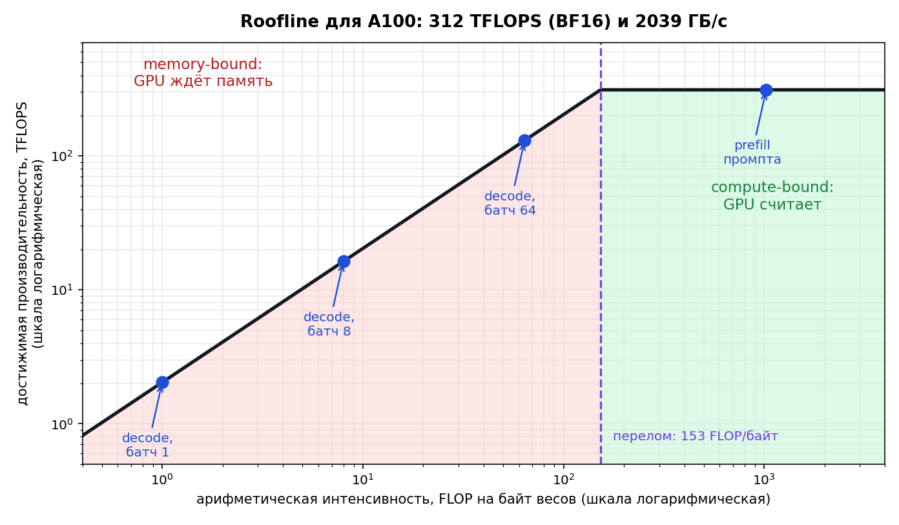
Классическая roofline-диаграмма, обе оси логарифмические. По горизонтали — арифметическая интенсивность: сколько операций приходится на каждый прочитанный байт весов. По вертикали — производительность, которую при такой интенсивности вообще можно выжать. Чёрная ломаная это и есть предел: на розовом участке слева он определяется пропускной способностью памяти (2039 ГБ/с) и растёт вместе с интенсивностью, на зелёном справа упирается в потолок 312 TFLOPS. Перелом приходится на $312/2.039 \approx 153$ FLOP на байт. Синие точки показывают, где живут режимы: декодинг с батчем 1 даёт интенсивность около 1 — это примерно 2 TFLOPS, менее процента от пиковой производительности карты; батч 64 поднимает до ~130 TFLOPS; и только prefill, где за один проход обрабатываются тысячи токенов сразу, выходит за перелом на плато. Отсюда практический вывод: пока батч меньше сотни, видеокарта в основном ждёт память, а не считает. «Модель меньше в 2 раза $\to$ работает в 2 раза быстрее» — не всегда так.
На декодинге время определяется в основном объёмом читаемой памяти, поэтому уменьшение весов вдвое действительно даёт близкое к двукратному ускорение. А вот на prefill длинного контекста время растёт квадратично по длине последовательности из-за attention, и размер модели там уже не единственный фактор. Всегда смотрите, на какой стадии у вас узкое место, прежде чем выбирать оптимизацию.
- Эволюция схем внимания под давлением KV-кэша — главный источник расхода памяти на инференсе и три способа его сократить.
- Mixtral 8x7B — MoE как способ платить за качество памятью, а не вычислениями, и когда это невыгодно.
- Mamba — генерация с постоянной памятью и стоимостью токена, не зависящей от длины.
Какие три основных фактора влияют на скорость инференса LLM?
Архитектура и размер модели (Encoder-Only, Decoder-Only, Encoder-Decoder), тип задачи (генеративная или дискриминативная — есть ли авторегрессионный декодинг) и аппаратные ограничения GPU, в первую очередь пропускная способность памяти.
Чем генеративные задачи отличаются от дискриминативных с точки зрения инференса?
Дискриминативные задачи (классификация, регрессия) дают ответ за один проход сети. Генеративные (QA, суммаризация) распадаются на prefill — обработку всего промпта разом — и decode, где каждый следующий токен требует отдельного прогона модели. Эти две стадии оптимизируются по-разному.
Что такое memory-bound режим GPU и почему он снижает производительность?
Memory-bound — ситуация, когда вычислительные ядра простаивают в ожидании данных из памяти: шина между HBM и ядрами становится узким местом. Реальная производительность падает существенно ниже теоретического пика по FLOPS, и добавление вычислительной мощности не помогает.
Почему авторегрессионный декодинг почти всегда memory-bound?
На каждом шаге в модель заходит один токен, то есть арифметики выполняется мало, но ради неё приходится прочитать из памяти все веса модели целиком. Отношение «операций на прочитанный байт» получается очень низким, и время шага определяется скоростью памяти, а не скоростью ядер.
Почему увеличение batch size улучшает утилизацию GPU при инференсе?
Веса читаются из памяти один раз на весь батч, а полезных вычислений с ними делается пропорционально числу запросов. Чтение памяти амортизируется по всем пользователям батча, режим смещается к compute-bound, и суммарный RPS растёт.
Зачем вообще оптимизировать инференс, если модель уже обучена?
Обучение оплачивается один раз, а инференс — на каждом запросе пользователя, миллионы раз в день. Ускорение инференса вдвое напрямую означает вдвое меньший парк видеокарт при том же трафике.
-
RPS, Latency
Все факторы, описанные выше, важны скорее для разработчиков. Для конечного пользователя значение имеют только две метрики:
- RPS (requests per second) — сколько запросов сервис способен обработать в секунду. Это пропускная способность, характеристика всего сервиса.
- Latency (задержка) — сколько времени проходит от отправки запроса до получения ответа. Это характеристика одного запроса.
Пользователю нужно, чтобы RPS был как можно больше (сервис всех выдерживает), а latency — как можно меньше (лично ему отвечают быстро).
Их постоянно путают, хотя они могут двигаться в противоположные стороны.
Аналогия — касса в супермаркете. RPS — это «сколько человек в час обслуживает магазин», latency — «сколько лично я простоял в очереди». Открыв ещё десять касс, вы поднимете RPS, но своё время в очереди уменьшите не пропорционально. А если посадить всех покупателей в один огромный автобус и обслуживать пачками, магазин пропустит больше народу за час (RPS вырос), но каждый конкретный человек будет ждать дольше (latency выросла).
В LLM-инференсе роль «автобуса» играет батчинг: увеличение батча почти всегда поднимает RPS и ухудшает latency отдельного запроса. Поэтому оптимизацию всегда формулируют как «максимум RPS при latency не хуже целевой», а не «максимум RPS».
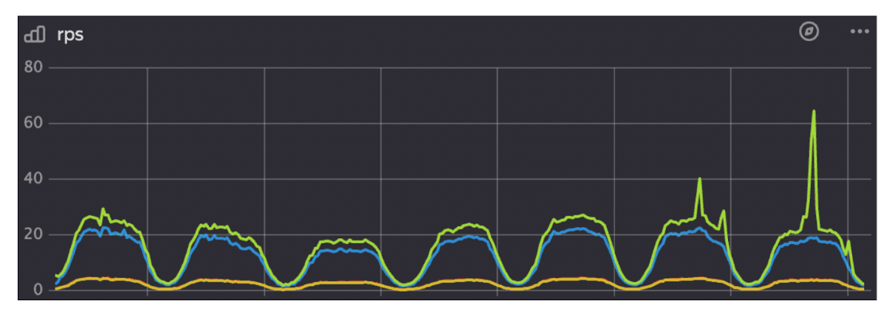
Значения RPS реального сервиса за неделю. Ночью люди спят и запросы почти не поступают, днём активность растёт — нагрузка следует суточному профилю. Железо при этом приходится закладывать под дневной пик, а не под среднее значение. Для генеративных моделей одной цифры latency мало — ответ приходит не целиком, а потоком токенов. Поэтому измеряют отдельно:
- TTFT (Time To First Token) — сколько ждём первого символа ответа. Определяется стадией prefill и именно она формирует ощущение «сервис тормозит».
- TPOT (Time Per Output Token) — сколько времени уходит на каждый следующий токен. Определяется стадией decode.
- Полная latency $\approx$ TTFT $+$ TPOT $\times$ (число токенов в ответе).
Пользователь, читающий стриминговый ответ, почти не замечает большой TPOT, если тот быстрее скорости чтения (~10 токенов/с), но остро реагирует на большой TTFT.
Рассмотрим пример некоторого сервиса в Яндексе.
Допустим, сервис должен обрабатывать 2000 запросов в секунду, а 20% из них можно просто закешировать, сэкономив ресурсы. Остаётся 1600 RPS, которые видеокарты должны обрабатывать в реальном времени. Это не точная величина: на пике активности RPS поднимается и до 1800. При этом пользователь ожидает, что задержка составит не более трёх секунд — это целевая latency.
Тесты показали, что одна видеокарта держит 6 RPS, впритык укладываясь в заявленные три секунды.
Считаем в лоб: $1800 / 6 = 300$ видеокарт. А компания может предоставить только 200.
Дальше есть ровно три выхода:
- Достать ещё 100 видеокарт — дорого и часто просто невозможно (их нет в наличии).
- Ослабить требование по latency — но тогда портится продукт.
- Ускорить инференс: если одна карта начнёт держать 9 RPS вместо 6 при той же latency, то $1800 / 9 = 200$ карт — ровно столько, сколько есть.
Обратите внимание на важную деталь: ускорять надо так, чтобы не выйти за целевую latency. Простое увеличение батча подняло бы RPS одной карты, но заодно пробило бы порог в три секунды — и формально задача решена, а фактически нет.
На суточном графике RPS выше видно, что ночью нагрузка почти нулевая, а днём — максимальная. Среднесуточный RPS может быть вдвое ниже пикового.
Но железо закладывают под пик: если сервис ляжет в час максимальной нагрузки, пользователям не объяснить, что «в среднем за сутки мощности хватало». Именно поэтому в расчёте выше фигурировали 1800 RPS (пик), а не 1600 (типовой уровень).
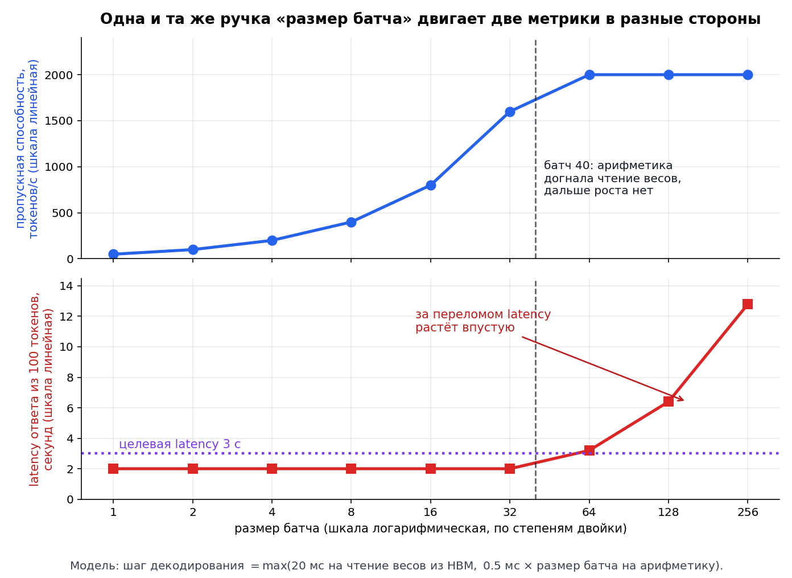
Почему батчем нельзя решить задачу «в лоб». Горизонтальная ось общая для обеих панелей и логарифмическая (степени двойки), обе вертикальные оси линейные. Расчёт по простой модели, подписанной под графиком: шаг декодирования занимает $\max(20$ мс на чтение весов из памяти, $0.5$ мс $\times$ размер батча на арифметику$)$. Синяя кривая сверху — пропускная способность: она растёт почти линейно, пока шаг определяется чтением весов, и выходит на полку 2000 токенов/с около батча 40, где арифметика догоняет чтение. Красная кривая снизу — задержка ответа из 100 токенов: до того же батча 40 она вообще не меняется (2.0 с), на батче 64 составляет уже 3.2 с, а на батче 256 доходит до 12.8 с. Фиолетовый пунктир — та самая целевая latency в 3 секунды из примера выше. Хорошо видно, где проходит граница: до батча ~60 сервис укладывается в порог и наращивает RPS, а дальше только портит пользователю ответ, ничего не давая себе. Никогда не оценивайте сервис по средней задержке — смотрите на перцентили: p50 (медиана), p95, p99.
Причина: распределение latency сильно скошено вправо. Средняя в 1.2 с может прекрасно сочетаться с p99 в 12 с, то есть каждый сотый пользователь ждёт ответа полминуты и уходит. В SLA (соглашении об уровне сервиса) пишут именно «p99 $\le$ 3 с», а не «средняя $\le$ 3 с».
Чтобы добиться желаемого, почти всегда приходится идти на компромисс между качеством модели и скоростью её работы.
Квантизация, дистилляция, прунинг, спекулятивное декодирование — все они где-то «отщипывают» либо от точности, либо от универсальности модели. Инженерная задача формулируется так: найти максимальное ускорение, при котором просадка качества на целевых метриках остаётся незаметной для пользователя. Отсюда обязательная практика — замерять качество до и после каждой оптимизации, а не только скорость.
Что такое RPS и latency и чем они принципиально различаются?
RPS (requests per second) — пропускная способность сервиса, сколько запросов он обрабатывает в секунду. Latency — задержка одного конкретного запроса. Первая метрика характеризует сервис целиком, вторая — опыт отдельного пользователя, и они могут меняться в противоположные стороны.
Почему увеличение батча улучшает RPS, но ухудшает latency?
В батче веса модели читаются из памяти один раз на все запросы, поэтому суммарная пропускная способность растёт. Но каждому отдельному запросу приходится ждать, пока батч наберётся и пока досчитаются все соседи по батчу, — его личное время ответа увеличивается.
Что такое TTFT и TPOT?
TTFT (Time To First Token) — задержка до первого токена ответа, определяется стадией prefill. TPOT (Time Per Output Token) — время на каждый последующий токен, определяется стадией decode. Полная задержка примерно равна TTFT плюс TPOT, умноженное на длину ответа.
Почему нельзя оценивать сервис по средней latency?
Распределение задержек сильно скошено: редкие очень долгие запросы почти не влияют на среднее, но именно они портят опыт пользователей. Поэтому смотрят перцентили p95 и p99, и именно они фигурируют в SLA.
Как ускорение инференса помогает при ограниченном числе GPU?
Если каждая карта держит больше RPS при той же целевой latency, то же количество трафика обслуживается меньшим числом карт. В примере выше рост с 6 до 9 RPS на карту снижает потребность с 300 карт до 200.
В чём практический компромисс при оптимизации LLM-инференса?
Квантизация, дистилляция, прунинг и спекулятивное декодирование ускоряют модель ценой некоторой деградации качества. Нужно найти баланс, при котором ускорение достаточно для производственных требований, а падение метрик остаётся приемлемым, — и обязательно замерять качество, а не только скорость.
-
Дистилляция
Дистилляция знаний (knowledge distillation) — способ обучения, при котором есть большая модель, которую называют учителем (teacher), и модель поменьше — ученик, или студент (student). Ученик обучается не столько на исходной разметке, сколько на том, что выдаёт учитель.
Если совсем простыми словами: вместо того чтобы учить маленькую модель по учебнику с ответами «правильно/неправильно», мы сажаем рядом с ней отличника и заставляем повторять за ним — включая то, в чём именно он сомневался.
Подход предложили Хинтон с соавторами в 2015 году. Наблюдение было такое: обученная большая модель знает про данные больше, чем записано в разметке.
Разметка говорит «это кошка». Большая модель говорит «кошка — 0.90, рысь — 0.07, собака — 0.02, тигр — 0.00999, автомобиль — 0.00001». Второе содержит дополнительную информацию о структуре задачи: что кошка похожа на рысь и совсем не похожа на автомобиль. Хинтон назвал это «тёмным знанием» (dark knowledge). Обучая ученика на полном распределении учителя, мы передаём ему эту структуру, которой в жёстких метках просто нет.
Поскольку размеры современных LLM только растут, часто достигая сотен миллиардов или даже триллионов параметров, дистилляция стала не академическим приёмом, а рабочей необходимостью.
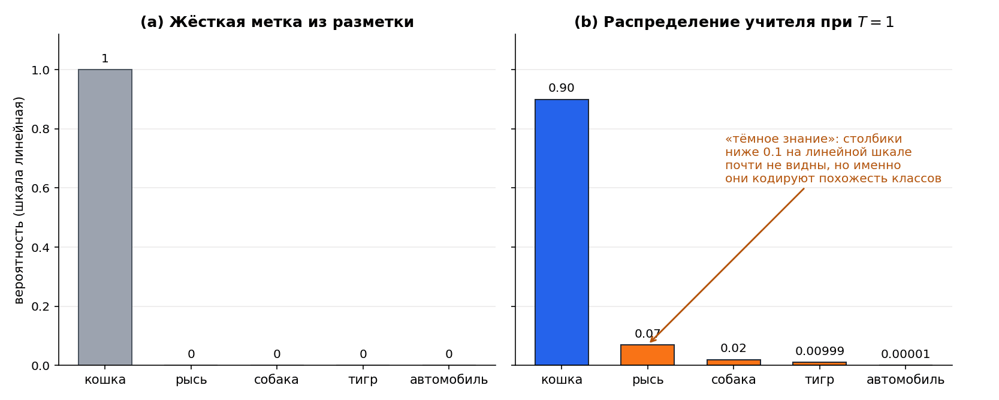
Тот же пример с кошкой, нарисованный по числам из текста. Обе панели — линейная шкала вероятностей от 0 до 1. (a) серый столбик высотой 1.0 на классе «кошка» и четыре нуля: всё, что сообщает разметка. (b) синий столбик учителя на «кошке» равен 0.90, а оранжевые столбики на «рыси», «собаке», «тигре» и «автомобиле» — 0.07, 0.02, 0.00999 и 0.00001. Обратите внимание на три правых столбика: на линейной шкале они почти сливаются с осью, хотя различаются между собой в две тысячи раз. Именно эта еле заметная структура и есть тёмное знание — она говорит, что рысь и тигр родственны кошке, а автомобиль нет. Ради того чтобы поднять эти столбики до видимого уровня, при дистилляции и повышают температуру softmax. Дистилляция активно применяется при обучении production-моделей: именно так тренируют Qwen-3, Gemma-2 и Llama-4 — сильные модели из той же линейки используются как учителя для более лёгких версий.
То есть когда вы скачиваете «маленькую» модель на 7B параметров из свежей линейки, с высокой вероятностью её обучали не с нуля на сыром корпусе, а дистиллировали из старшего собрата.
- Модели меньшего размера требуют гораздо меньше вычислительных ресурсов, что ускоряет инференс и позволяет хорошо экономить.
- Дистилляция делает LLM пригодными для развёртывания на периферийных устройствах (edge — телефон, ноутбук, встроенная система) и в средах с ограниченными ресурсами.
- Дистиллированные модели нередко превосходят модели того же размера, обученные напрямую на исходном датасете, — за счёт «усовершенствованных знаний» и способности к обобщению, унаследованных от учителя.
Это самый неинтуитивный пункт, и он стоит отдельного разбора.
Обучаясь на жёстких метках, маленькая модель вынуждена сама, с нуля, нащупать структуру задачи по зашумлённым данным — и у неё для этого мало ёмкости. Учитель эту работу уже проделал: его распределение вероятностей — это сглаженная, очищенная от шума версия целевой функции.
Дополнительно: сигнал от учителя богаче. Жёсткая метка сообщает лишь номер одного «правильного» токена — около $\log_2|\mathcal{V}| \approx 17$ бит на позицию, и ни слова о том, насколько хороши остальные варианты. Распределение учителя — это целый вектор вещественных чисел по всему словарю. Из одного и того же количества примеров ученик извлекает заметно больше информации, а значит, ему хватает меньшего датасета и меньшего числа параметров.
Хороший пример — YandexGPT 3: большая LLM, решающая задачу с наилучшим качеством, но совершенно не укладывающаяся в вычислительный бюджет сервиса.
Есть модель поменьше, вроде T5, которая потребляет сильно меньше ресурсов, но и качество даёт заметно ниже. Дистилляция — попытка получить третий вариант: модель размера T5, но с качеством, подтянутым к YandexGPT 3 на вашей конкретной задаче. Универсальностью большой модели при этом жертвуют осознанно: узкому продуктовому сценарию она и не нужна.
Задача knowledge distillation — минимизировать расхождение между предсказаниями учителя и ученика:
$$ \operatorname{Teacher}=p(y|x),\qquad \operatorname{Student}= q_{\theta}(y|x),\qquad L\bigl(p(y|x),\,q_{\theta}(y|x)\bigr)\to \min_{\theta} $$
Расшифруем обозначения: $x$ — вход (промпт или префикс текста), $y$ — выход (следующий токен), $p(y|x)$ — распределение вероятностей, которое выдаёт замороженный учитель, $q_\theta(y|x)$ — распределение ученика с обучаемыми параметрами $\theta$. Функция $L$ измеряет, насколько эти два распределения различаются, — чаще всего это KL-дивергенция.
Важная деталь: градиенты текут только в $\theta$. Учитель не обучается, он выступает генератором целевых значений.
Внутри этой общей схемы есть два независимых выбора, и путать их не надо:
- Что показываем ученику как цель — жёсткие метки-токены (hard label) или полное распределение вероятностей (soft label). Об этом два следующих вопроса.
- Откуда берём тексты $x$, на которых считаем лосс, — из готового корпуса (off-policy) или из собственных генераций ученика (on-policy). Об этом — вопрос про exposure bias.
Большая часть современных методов дистилляции LLM — это разные комбинации этих двух рычагов.
У дистилляции есть несколько системных проблем, каждой из которых дальше посвящён отдельный вопрос:
- Exposure bias — ученик обучается на текстах учителя, но на инференсе генерирует сам; это несоответствие распределений накапливает ошибки.
- Tokenizer misalignment — если учитель и ученик используют разные токенизаторы, их логиты нельзя сравнивать напрямую, и soft-label дистилляция через KL становится неприменимой «в лоб».
- Мощный учитель $\neq$ хороший учитель — слишком большой и сильный учитель выдаёт распределения, недостижимые для слабого ученика, из-за чего обучение оказывается неэффективным.
Интуиция подсказывает, что чем сильнее учитель, тем лучше получится ученик. На практике зависимость немонотонная: между учителем на 400B и учеником на 1B возникает так называемый capacity gap — разрыв в ёмкости.
Ученик физически не может воспроизвести тонкую структуру распределения гигантского учителя, лосс упирается в плато, и качество выходит хуже, чем при обучении от учителя среднего размера. Стандартное практическое решение — промежуточные учителя (teacher assistant): 400B $\to$ 70B $\to$ 7B $\to$ 1B, каждый шаг с посильным разрывом.
- Gemma — дистилляция как основной приём обучения маленьких моделей и объяснение, почему распределение учителя информативнее жёсткой метки.
- DeepSeek — дистилляция рассуждений: она оказалась эффективнее, чем RL напрямую на маленькой модели.
- Phi — синтетика от сильной модели как форма передачи навыков, и её главный риск.
Что такое дистилляция знаний и зачем она нужна?
Дистилляция — обучение маленькой модели-ученика имитировать большую модель-учителя. Это позволяет получить компактную модель с качеством, близким к учителю, при существенно меньших затратах на инференс и памяти.
Что такое «тёмное знание» (dark knowledge) и почему оно полезно?
Это информация, содержащаяся в полном распределении вероятностей учителя, а не только в аргмаксе: относительные вероятности неправильных классов показывают, какие варианты похожи между собой. Жёсткая разметка такой структуры не содержит, а ученику она помогает обобщать.
Какую функцию потерь оптимизируют при дистилляции и по каким параметрам?
Минимизируют расхождение между распределением учителя $p(y|x)$ и ученика $q_\theta(y|x)$ — обычно KL-дивергенцию или кросс-энтропию. Оптимизация идёт только по параметрам ученика $\theta$; учитель заморожен и служит источником целевых значений.
Почему дистиллированная модель часто лучше модели того же размера, обученной с нуля?
Распределение учителя — это сглаженная и очищенная от шума версия целевой функции, а сигнал на один пример гораздо богаче: вектор вероятностей вместо одного бита. Ученик извлекает больше информации из того же количества данных, поэтому ему хватает меньшей ёмкости.
Назовите три главные проблемы дистилляции LLM.
Exposure bias — несоответствие распределений при обучении и инференсе; tokenizer misalignment — разные словари учителя и ученика не позволяют сравнивать логиты напрямую; capacity gap — слишком сильный учитель выдаёт распределения, недостижимые для маленького ученика.
Что такое teacher assistant и зачем он нужен?
Промежуточная модель среднего размера в цепочке дистилляции (например, 400B $\to$ 70B $\to$ 7B). Она сокращает разрыв в ёмкости между соседними звеньями, из-за чего каждый шаг дистилляции остаётся эффективным, а итоговое качество маленькой модели выше, чем при прямой дистилляции от гиганта.
-
Hard-label дистилляция
Hard-label дистилляция — наиболее простой подход к передаче знаний от учителя к ученику. Сначала большая модель используется для генерации датасета из пар «вход — выход». Затем модель-ученик обучается на этом наборе данных в обычной парадигме supervised learning.
Если совсем простыми словами: большая модель пишет за нас учебник с задачами и ответами, а маленькая модель зубрит этот учебник так же, как зубрила бы датасет, размеченный людьми. Слово «hard» здесь означает жёсткие метки — учитель сообщает только «правильный токен вот такой», без всяких «а ещё вот этот подошёл бы почти так же».
Процесс обычно выглядит так:
- Собираем большой набор промптов $\{x_n\}_{n=1}^N$ — из уже существующих датасетов или специально синтезированных.
- Учитель $p(y \mid x)$ обрабатывает промпты и выдаёт ответы $y_n$.
- Получаем синтетический датасет размеченных примеров $\mathcal{D} = \{x_n, y_n\}$.
- Обучаем ученика на $\mathcal{D}$ обычной кросс-энтропией, рассматривая ответы учителя как ground truth (эталонную разметку).
Подход особенно удобен, когда качественных данных для обучения не хватает: учитель сгенерирует сколько угодно примеров, отражающих усвоенные им знания.
Ученик максимизирует лог-правдоподобие ответов учителя (эквивалентно — минимизирует кросс-энтропию):
$$ \textcolor{#f87171}{L(\theta)} = \textcolor{#60a5fa}{\frac{1}{N}} \textcolor{#fbbf24}{\sum_{n=1}^{N}} \textcolor{#34d399}{\sum_{t=1}^{T_n}} \textcolor{#a78bfa}{\log q_\theta(y_{nt} \mid x_n, y_{n,1}, \dots, y_{n,t-1})}, \quad \textcolor{#f472b6}{y_n \sim p(y \mid x_n)} $$
- $\textcolor{#f87171}{L(\theta)}$ — функция потерь, отражающая, насколько точно ученик воспроизводит ответы учителя.
- $\textcolor{#60a5fa}{\frac{1}{N}}$ — нормировка по количеству обучающих примеров.
- $\textcolor{#fbbf24}{\sum_{n=1}^{N}}$ — суммирование по всем примерам в синтетическом датасете.
- $\textcolor{#34d399}{\sum_{t=1}^{T_n}}$ — суммирование по токенам внутри каждого ответа длины $T_n$.
- $\textcolor{#a78bfa}{\log q_\theta(y_{nt} \mid x_n, y_{n,1}, \dots, y_{n,t-1})}$ — лог-вероятность, которую ученик присвоил «правильному» токену.
- $\textcolor{#f472b6}{y_n \sim p(y \mid x_n)}$ — ответы, сгенерированные учителем и выступающие «истинными» метками.
Формально страшно, по смыслу просто.
Для каждого примера мы идём по ответу учителя токен за токеном. На шаге $t$ ученик видит промпт и все предыдущие токены ответа учителя (это условие $y_{n,1},\dots,y_{n,t-1}$) и должен предсказать следующий. Мы поощряем его за то, что он назначил высокую вероятность именно тому токену, который написал учитель.
Ключевая деталь — «видит все предыдущие токены учителя». Это называется teacher forcing: ученика на обучении всегда ведут по правильной дорожке, даже если сам он свернул бы не туда. Именно отсюда потом вырастет проблема exposure bias — но об этом в отдельном вопросе.
Промпт:
Столица Франции —. Учитель сгенерировал ответ:Париж, крупнейший город страны.Ученик учится на трёх независимых предсказаниях (упрощённо, по словам):
- увидев
Столица Франции —, поставить максимум вероятности наПариж; - увидев
Столица Франции — Париж,, поставить максимум накрупнейший; - увидев
Столица Франции — Париж, крупнейший, поставить максимум нагород.
Обратите внимание: если ученик на первом шаге сказал бы
Лион, обучение всё равно продолжится с префикса... — Париж,, а не с его собственной ошибки. Ученик никогда не увидит, как выглядит текст после его собственного промаха.Hard-label дистилляция особенно полезна при кросс-токенизаторной дистилляции — когда учитель и ученик используют разные словари.
Поскольку вместо логитов передаются конкретные токены (а точнее — обычный текст), размер словаря не имеет значения: учитель генерирует текст, ученик токенизирует его своим токенизатором и обучается как на обычной разметке. Отсюда же второе практическое достоинство: учителем может быть модель, доступная только по API, — логиты не нужны, достаточно сгенерированного текста.
Расплата за простоту — потеря информации о длинном хвосте распределения учителя.
Учитель на шаге генерации знал целый вектор вероятностей по всему словарю (десятки тысяч чисел), а ученику досталось одно число — индекс выбранного токена. Если учитель колебался между
коврик(0.4) иподстилку(0.35), ученик увидит толькоковрики будет учиться считать его единственно верным ответом.Практический эффект: на один и тот же объём сгенерированных данных hard-label передаёт заметно меньше знаний, чем soft-label, и требует большего синтетического датасета для того же качества.
Второй подводный камень: если учитель галлюцинирует, ученик заучивает галлюцинацию как факт — механизма «а тут учитель был не уверен» в жёстких метках просто нет.
Поэтому на практике синтетический датасет почти всегда фильтруют: отбрасывают ответы с низкой уверенностью учителя, прогоняют верификатор, для задач с проверяемым ответом (код, математика) оставляют только прошедшие тесты примеры. Дистилляция без фильтрации — типичная ошибка новичка, из-за которой ученик наследует худшие свойства учителя.
Формула выше записана для последовательностей и текстов, но сама идея работает шире: любую задачу, где учитель умеет порождать выход, можно свести к «сгенерируй датасет — обучи на нём ученика».
Именно так собирают большинство современных instruction-датасетов: сильная модель пишет ответы на инструкции, слабая обучается на них.
В чём суть hard-label дистилляции?
Большая модель-учитель генерирует датасет пар «вход — выход», после чего ученик обучается на нём обычным supervised learning, воспринимая ответы учителя как эталонную разметку.
Почему hard-label дистилляция удобна при нехватке размеченных данных?
Учитель может синтезировать практически неограниченное число обучающих примеров из набора промптов, заменяя дорогую ручную разметку.
Какую функцию потерь оптимизирует ученик и что такое teacher forcing?
Кросс-энтропию между своими предсказаниями и токенами учителя. Teacher forcing означает, что на каждом шаге ученик обусловлен на предыдущие токены учителя, а не на собственные, — его всегда ведут по правильному префиксу.
В чём основной недостаток hard-label дистилляции?
Теряется информация о вероятностном распределении учителя: ученик видит один выбранный токен, а не весь вектор вероятностей. Плюс из-за teacher forcing возникает exposure bias — ученик обучается на префиксах учителя, но на инференсе продолжает собственные генерации.
В каком сценарии hard-label дистилляция предпочтительнее soft-label?
Когда учитель и ученик используют разные токенизаторы (сравнивать логиты напрямую нельзя) или когда учитель доступен только через API без выдачи logprobs. Hard-label работает на уровне текста, поэтому этих ограничений не имеет.
Почему синтетический датасет от учителя нужно фильтровать?
В жёстких метках нет информации об уверенности учителя, поэтому его ошибки и галлюцинации попадают в обучение как истина. Фильтрация по уверенности, верификаторам или прохождению тестов не даёт ученику унаследовать эти ошибки.
-
Soft-label дистилляция
Soft-label дистилляция даёт ученику доступ к полным распределениям вероятностей учителя, а не только к его финальному ответу. Вместо жёстких меток на каждом шаге ученик обучается воспроизводить всё распределение вероятностей учителя по словарю $\mathcal{V}$ — так называемые мягкие метки (soft labels).
Если совсем простыми словами: hard-label говорит ученику «правильный ответ — Париж». Soft-label говорит «Париж на 90%, Лион на 5%, Марсель на 3%, помидор на 0.0001%». Второе сообщение содержит не только ответ, но и карту похожести всех остальных вариантов.
Разберём жаргон, без которого дальше не пройти.
На каждом шаге генерации модель выдаёт логиты — вектор из $|\mathcal{V}|$ чисел, по одному на каждый токен словаря (у современных LLM $|\mathcal{V}|$ — это 32 000–150 000). Это ещё не вероятности: числа могут быть любыми, в том числе отрицательными.
Пропустив логиты через softmax, получаем распределение вероятностей: все числа положительные и в сумме дают единицу. Именно это распределение и есть «мягкая метка». Hard-label оставляет от него один индекс — argmax; soft-label передаёт ученику вектор целиком.
Soft-label дистилляция эффективно отражает неопределённость учителя — те случаи, когда он присваивает сходные вероятности нескольким правдоподобным токенам.
Это принципиально: в языке очень часто «правильных» продолжений много, и жёсткая метка искусственно объявляет одно из них единственным. Ученик, обучаемый на жёстких метках, вынужден заучивать случайный выбор учителя как закон.
При прогнозировании следующего слова во фразе
Кошка села на ___LLM может присвоить $0.4$ словуковрик, $0.35$ — словуподстилку, а остальным вариантам — меньшие вероятности.Что из этого узнаёт ученик:
- оба варианта примерно одинаково хороши — значит, за выбор второго штрафовать почти не надо;
коврикиподстилка— близкие по смыслу сущности, раз модель ставит им сходные вероятности;автомобильс вероятностью $10^{-7}$ здесь исключён категорически, а не просто «не выбран».
Hard-метка присвоила бы слову
коврикполную вероятность каждый раз, и вся эта структура была бы потеряна.Формально минимизируется расхождение между распределениями учителя и ученика — обычно KL-дивергенция:
$$ \textcolor{#f87171}{L(\theta)} := \textcolor{#60a5fa}{\frac{1}{N}} \textcolor{#fbbf24}{\sum_{n=1}^{N}} \textcolor{#34d399}{\sum_{t=1}^{T_n}} \textcolor{#f97316}{D_{KL}\!\left( \textcolor{#f472b6}{p(y_{nt} \mid x_n, y_{n,1:t-1})} \;\|\; \textcolor{#a78bfa}{q_\theta(y_{nt} \mid x_n, y_{n,1:t-1})} \right)}= $$$$ = \textcolor{#60a5fa}{\frac{1}{N}} \textcolor{#fbbf24}{\sum_{n=1}^{N}} \textcolor{#34d399}{\sum_{t=1}^{T_n}} \textcolor{red}{\sum_{v \in \mathcal{V}}} \textcolor{#f472b6}{ p(y_{nt}=v \mid x_n, y_{n,1:t-1}) } \log \frac{ \textcolor{#f472b6}{ p(y_{nt}=v \mid x_n, y_{n,1:t-1}) } }{ \textcolor{#a78bfa}{ q_\theta(y_{nt}=v \mid x_n, y_{n,1:t-1}) } } $$
- $\textcolor{#f87171}{L(\theta)}$ — функция потерь, измеряющая расхождение между распределениями учителя и ученика.
- $\textcolor{#60a5fa}{\frac{1}{N}}$ — нормировка по количеству обучающих примеров.
- $\textcolor{#fbbf24}{\sum_{n=1}^{N}}$ — суммирование по всем примерам обучающего набора.
- $\textcolor{#34d399}{\sum_{t=1}^{T_n}}$ — суммирование по токенам внутри каждой последовательности.
- $\textcolor{red}{\sum_{v \in \mathcal{V}}}$ — суммирование по всем токенам словаря: именно это отличает soft-label от hard-label.
- $\textcolor{#f97316}{D_{KL}\!\left( \cdot \;\|\; \cdot \right)}$ — дивергенция Кульбака–Лейблера.
- $\textcolor{#f472b6}{p(\cdot)}$ — распределение вероятностей модели-учителя.
- $\textcolor{#a78bfa}{q_\theta(\cdot)}$ — распределение вероятностей модели-ученика.
KL-дивергенция — мера расхождения между двумя распределениями:
$$ D_{KL}(p \,\|\, q) = \sum_{v \in \mathcal{V}} p(v) \log \frac{p(v)}{q(v)} $$
Читается так: идём по всем токенам словаря; для каждого смотрим, во сколько раз ученик ошибся в вероятности ($\log \frac{p}{q}$), и взвешиваем эту ошибку тем, насколько токен важен для учителя ($p(v)$).
Отсюда два практических вывода. Первый: если учитель дал токену вероятность 0, ошибка ученика на нём вообще не штрафуется. Второй: если учитель дал токену высокую вероятность, а ученик — почти нулевую, логарифм улетает в бесконечность и штраф огромен. То есть такая («прямая») KL заставляет ученика покрывать всё, что считает возможным учитель.
Строго говоря, KL — не метрика (она несимметрична и не удовлетворяет неравенству треугольника), но минимизировать её как функцию это не мешает.
На практике перед softmax логиты часто делят на температуру $T$:
$$p_i = \frac{\exp(z_i / T)}{\sum_j \exp(z_j / T)}$$
При $T = 1$ получается обычное распределение модели. При $T > 1$ распределение сглаживается: разрывы между вероятностями сокращаются, и «тёмное знание» из хвоста становится заметнее для ученика. При $T \to 0$ распределение вырождается в жёсткую метку.
Типичные значения $T$ при дистилляции — 2–5. Важная техническая деталь: градиенты KL при температуре $T$ масштабируются как $1/T^2$, поэтому лосс принято домножать на $T^2$ — иначе с ростом температуры обучение фактически останавливается.
Хранить полное распределение по словарю на каждый токен — это, скажем, 128 000 чисел на позицию. Для датасета в миллиард токенов такой объём физически неподъёмен.
Поэтому методы наподобие SLIM используют уменьшенное подмножество распределения учителя: например, только верхние 5% вероятностей на каждую выборку, что сокращает требуемую память примерно в 20 раз. Оставшаяся масса просто равномерно «размазывается» по хвосту.
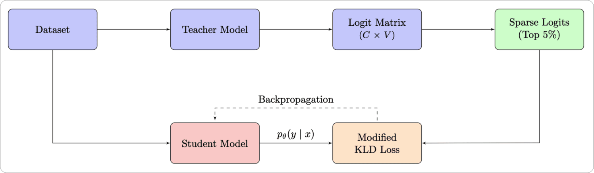
Схема SLIM-дистилляции: вместо полного вектора вероятностей по словарю сохраняется только его верхняя часть, что на порядки уменьшает объём хранимых мягких меток при почти неизменном качестве ученика. Soft-label подход, как правило, даёт лучшее качество ученика и при этом требует меньше обучающих данных, чем hard-label.
Причина в плотности сигнала: жёсткая метка несёт около $\log_2 |\mathcal{V}| \approx 17$ бит на позицию, мягкая метка — целый вектор вещественных чисел. Из одного и того же текста ученик извлекает во много раз больше информации о том, «как думает» учитель.
Есть и побочный полезный эффект: мягкие метки работают как естественная регуляризация (механизм, ограничивающий переобучение).
Цель, в которой ни одна вероятность не равна единице, физически не позволяет ученику стать сверхуверенным: чтобы уменьшить лосс, ему нужно воспроизвести неуверенность учителя, а не задавить всё в одну точку. По духу это близко к label smoothing, только сглаживание здесь не равномерное, а осмысленное — подсказанное учителем.
Soft-label дистилляция требует больших вычислительных ресурсов и глубокой интеграции с учителем: надо получать, хранить и обрабатывать полные распределения вероятностей, а не индексы токенов.
Отсюда жёсткое практическое ограничение: если учитель доступен только через API и не отдаёт logprobs (лог-вероятности токенов), подход неприменим в принципе. Именно поэтому дистилляция «из закрытой модели» почти всегда делается hard-label.
Ещё одна фундаментальная проблема — несовпадение токенизаторов. KL-дивергенция подразумевает, что учитель и ученик имеют один и тот же словарь.
Если токенизаторы разные (например, Llama и Qwen), векторы логитов имеют разную длину, одинаковые ID означают разные токены, а одно и то же слово разбивается на разное число кусочков. Складывать такие распределения бессмысленно. Для решения этой проблемы разработаны специальные методы кросс-токенизаторной дистилляции — им посвящён отдельный вопрос в конце блока.
Чем soft-label дистилляция принципиально отличается от hard-label?
Soft-label передаёт ученику полное распределение вероятностей учителя по всему словарю, а не только выбранный токен. Это даёт более богатый сигнал, включающий информацию об относительной правдоподобности всех альтернатив.
Что такое логиты и мягкие метки?
Логиты — вектор из $|\mathcal{V}|$ ненормированных чисел, который модель выдаёт на каждом шаге. После softmax он превращается в распределение вероятностей по словарю; именно оно и служит мягкой меткой при дистилляции.
Какую функцию потерь минимизирует soft-label дистилляция?
KL-дивергенцию между распределением учителя $p$ и ученика $q_\theta$ на каждой позиции: $L = \frac{1}{N}\sum_n \sum_t D_{KL}(p(\cdot \mid x_n, y_{n,1:t-1}) \,\|\, q_\theta(\cdot \mid x_n, y_{n,1:t-1}))$.
Как читается формула KL-дивергенции содержательно?
Для каждого токена словаря берётся логарифм отношения вероятностей учителя и ученика и взвешивается вероятностью учителя. Ошибки на токенах, которые учителю важны, штрафуются сильно; на токенах с нулевой вероятностью учителя — не штрафуются вовсе.
Зачем при дистилляции используют температуру и почему лосс домножают на $T^2$?
Температура $T > 1$ сглаживает распределение учителя, делая заметнее информацию из хвоста. Градиенты при этом масштабируются как $1/T^2$, поэтому лосс умножают на $T^2$, чтобы величина обновлений не зависела от выбранной температуры.
Почему мягкие метки работают как регуляризация?
Целевое распределение с ненулевыми вероятностями на множестве токенов не позволяет ученику стать чрезмерно уверенным в одном варианте. Это ограничивает переобучение и по духу похоже на label smoothing, но со сглаживанием, подсказанным учителем.
Какие два практических ограничения делают soft-label дистилляцию неприменимой?
Отсутствие доступа к логитам учителя (модель за API без logprobs) и несовпадение токенизаторов учителя и ученика — в последнем случае распределения имеют разную размерность и разные ID, и сравнивать их напрямую нельзя.
-
Проблемы дистилляции: exposure bias
Exposure bias («смещение из-за того, чему модель была подвергнута») — расхождение между условиями обучения и условиями инференса у авторегрессионных моделей.
На обучении ученик всегда видит правильный префикс — текст, написанный учителем. На инференсе он видит свой собственный префикс, включая уже сделанные ошибки. Модель никогда не тренировалась выбираться из ситуаций, в которые сама себя загнала, поэтому одна ранняя ошибка утаскивает всю генерацию в сторону, и неточности накапливаются.
И soft-, и hard-label дистилляция страдают от этой предвзятости: ученик обучается на примерах, навязанных учителем, но впоследствии должен генерировать ответы самостоятельно.
Дистиллированная модель не учится исправлять собственные ошибки просто потому, что во время обучения она их ни разу не видела: teacher forcing каждый раз возвращал её на правильную дорожку.
Задача — сгенерировать решение уравнения. Учитель писал:
Перенесём 5 вправо: 2x = 8, значит x = 4.На инференсе ученик на втором шаге ошибается и пишет
2x = 3. Дальше он оказывается в тексте, которого на обучении не встречал никогда: все обучающие префиксы были математически корректными. У модели нет выученного поведения «стоп, проверю арифметику» — есть только выученное «продолжай уверенно». Она пишетзначит x = 1.5и выдаёт связный, грамотный, полностью неверный ответ.Именно так выглядит накопление ошибок: чем длиннее генерация, тем дальше распределение префиксов уходит от того, на чём модель обучалась.
Ученик — намного более слабая модель, и его распределение физически не может быть таким же многообразным, как у учителя.
Пытаясь покрыть всё, что учитель считает возможным, слабая модель размазывает вероятностную массу тонким слоем по всему пространству вариантов — в том числе по областям, где ничего осмысленного нет. На практике это проявляется как бессвязность и галлюцинации: модель уверенно порождает то, что учитель считал почти невозможным.
On-policy дистилляция
On-policy дистилляция решает проблему exposure bias, включая в обучение собственные генерации ученика.
Вместо того чтобы учиться исключительно на выходах учителя, ученик сам генерирует ответы, которые затем оценивает учитель. Получается цикл обратной связи, в котором ученик совершенствует собственную стратегию генерации, а не просто имитирует чужие тексты.
Расшифруем жаргон: policy («политика») — распределение, по которому модель выбирает следующий токен; on-policy значит «данные для обучения порождены той же моделью, которую мы обучаем», off-policy — «данные порождены кем-то другим» (в нашем случае учителем).
Представьте, что вы не умеете играть в шахматы и хотите научиться.
Если вы будете смотреть стримы Хикару, то поймёте, как ходят фигуры, и, возможно, узнаете пару продвинутых стратегий — но в реальной игре будете совершать ошибки новичка. Причина в том, что Хикару доходит до позиций, недостижимых на вашем уровне: он никогда не показывает, как выпутываться из ситуаций, в которые попадаете именно вы.
Если же Хикару сядет рядом и будет указывать на ошибки прямо в процессе вашей игры, обучение пойдёт несравнимо быстрее. Это и есть on-policy дистилляция: мы генерируем роллаут ученика, оцениваем учителем каждый токен и штрафуем за ошибки.
Это похоже на реальный образовательный процесс, в котором хороший преподаватель не диктует верные ответы, а указывает на ошибки в работе студента, позволяя тому самостоятельно дойти до решения.
Разница в источнике данных, а не в источнике знаний: знания по-прежнему у учителя, но упражнения теперь берутся из зоны, где реально работает ученик.
- Ученик генерирует последовательность (роллаут) на основе промпта.
- Учитель прогоняется по этой последовательности и выдаёт обратную связь на уровне токенов — своё распределение вероятностей на каждой позиции.
- Ученик обновляется, чтобы максимизировать согласие с учителем, сохраняя при этом разнообразие генераций.
Обратите внимание: учитель здесь не генерирует, а оценивает. Он делает один forward-проход по тексту ученика, что заметно дешевле полноценной генерации.
Прямая и обратная KL-дивергенция
Одна и та же KL-дивергенция может быть записана в двух порядках, и это принципиально разные функции потерь:
Прямая (forward) KL:
$$ D_{KL}(p \,\|\, q_\theta) = \sum_{v \in \mathcal{V}} p(v) \log \frac{p(v)}{q_\theta(v)} $$
Обратная (reverse) KL:
$$ D_{KL}(q_\theta \,\|\, p) = \sum_{v \in \mathcal{V}} q_\theta(v) \log \frac{q_\theta(v)}{p(v)} $$
где $p(v)$ — распределение учителя, $q_\theta(v)$ — распределение ученика, $v \in \mathcal{V}$ — токен словаря.
Разница только в том, чьей вероятностью взвешиваются слагаемые: в прямой — учителя, в обратной — ученика.
Это самое важное различие в вопросе, и оно целиком следует из того, кто стоит множителем.
- Прямая KL $D_{KL}(p \| q_\theta)$ взвешена вероятностью учителя. Если учитель дал варианту заметную вероятность, а ученик — почти нулевую, то $\log\frac{p}{q}\to\infty$ и штраф огромен. Значит, ученик обязан покрыть всё, что учитель считает возможным $\to$ mode-covering (покрытие мод). Слабый ученик при этом размазывается между модами и порождает мусор «в середине».
- Обратная KL $D_{KL}(q_\theta \| p)$ взвешена вероятностью ученика. Слагаемые есть только там, где ученик что-то генерирует; там, где $q_\theta = 0$, штрафа нет вовсе. Зато если ученик уверенно порождает то, что учитель считает невозможным ($p \approx 0$), штраф улетает в бесконечность. Значит, ученику выгодно сесть на одну хорошую моду и не выходить за границы разумного $\to$ mode-seeking (поиск моды).
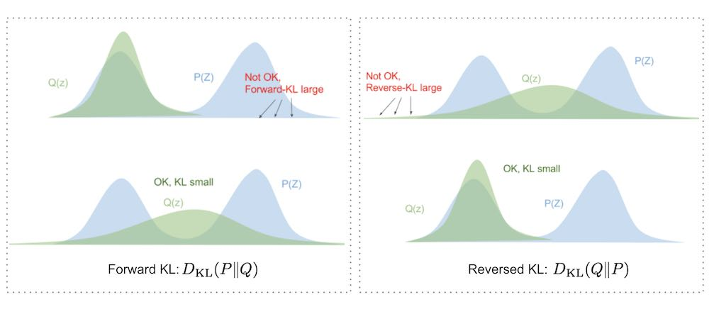
Одно и то же двугорбое распределение учителя (синее) и одномодовая аппроксимация ученика (красная). Слева — минимизация прямой KL: ученик растягивается, чтобы накрыть оба горба, и максимум вероятности приходится на провал между ними, где у учителя ничего нет. Справа — обратная KL: ученик выбирает один горб и точно на него садится, второй игнорируя. Для дистилляции LLM обычно выбирают обратную KL — именно её используют MiniLLM и большинство современных методов on-policy дистилляции.
Логика такая: ученик всё равно не сможет воспроизвести всё богатство учителя, поэтому пусть лучше он честно откажется от части мод, но всё, что порождает, будет качественным. Для генерации это правильный компромисс: пользователю нужен один хороший ответ, а не «усреднённый по всем возможным».
Кроме того, обратная KL естественно сочетается с on-policy обучением: она уже записана как матожидание по распределению ученика, а значит, оценивается сэмплированием из ученика — то есть его собственными генерациями.
Здесь легко запутаться, и на собеседовании это классический вопрос-ловушка. Запомните ориентир по первому аргументу:
- «прямая»/forward — $D_{KL}(\underline{p}\,\|\,q)$, первым стоит учитель, сэмплируем из учителя, поведение mode-covering;
- «обратная»/reverse — $D_{KL}(\underline{q}\,\|\,p)$, первым стоит ученик, сэмплируем из ученика, поведение mode-seeking.
Обычная soft-label дистилляция (предыдущий вопрос) — это прямая KL. On-policy методы вроде MiniLLM — обратная.
В обучении LLM сумма по всему словарю на каждой позиции ещё считается точно, а вот матожидание по последовательностям — уже нет: возможных продолжений экспоненциально много.
Поэтому лосс оценивают методом Монте-Карло: берут несколько сгенерированных последовательностей и усредняют по ним. Отсюда техническое требование: то распределение, из которого мы сэмплируем, должно быть ненулевым везде, где ненулевое второе, иначе в оценке возникают деления на ноль и бесконечные слагаемые.
На практике это лечат сглаживанием и клиппингом: подмешивают немного равномерного распределения, обрезают экстремальные отношения вероятностей, ограничивают величину шага.
On-policy роллауты не бесплатны: на каждом шаге нужно запустить генерацию ученика и прогон учителя. Это в разы дороже, чем обучение на заранее посчитанном датасете.
В статье Generalized Knowledge Distillation (GKD, 2023) предлагают смешивать on- и off-policy дистилляцию: часть батча — свежие генерации ученика (дорого, но лечит exposure bias), часть — заранее предпосчитанные генерации учителя (дёшево). Доля on-policy становится гиперпараметром, которым балансируют качество обучающего сигнала и вычислительную стоимость.
Что такое exposure bias в контексте дистилляции LLM?
Расхождение между обучением и инференсом: на обучении ученик всегда обусловлен на правильный префикс учителя (teacher forcing), а на инференсе — на собственный, содержащий его же ошибки. Модель не училась выбираться из своих ошибок, поэтому они накапливаются по ходу генерации.
Как on-policy дистилляция решает проблему exposure bias?
Обучающие последовательности порождает сам ученик, а учитель их оценивает. Ученик получает сигнал именно в тех состояниях, в которые реально попадает на инференсе, и учится их исправлять, а не копировать чужие тексты.
В чём разница между прямой и обратной KL-дивергенцией при дистилляции?
Прямая $D_{KL}(p \| q_\theta)$ взвешена вероятностями учителя и заставляет ученика покрывать все моды его распределения (mode-covering). Обратная $D_{KL}(q_\theta \| p)$ взвешена вероятностями ученика и тянет его к концентрации на одной хорошей моде (mode-seeking), запрещая порождать то, что учитель считает невозможным.
Почему для дистилляции LLM чаще берут обратную KL?
Слабый ученик всё равно не воспроизведёт всё многообразие учителя, а при mode-covering он размазывает массу и генерирует бессвязный текст «между модами». Mode-seeking даёт менее разнообразные, но качественные генерации, что для продуктовой задачи предпочтительнее. Плюс обратная KL естественно сэмплируется генерациями самого ученика.
Почему при оценке KL важно, чтобы распределение, из которого сэмплируем, накрывало второе?
Лосс оценивается методом Монте-Карло по конечному числу сгенерированных последовательностей. Если в знаменателе отношения вероятностей возникает ноль там, где числитель ненулевой, оценка расходится. Практически это лечат сглаживанием распределений и клиппингом отношений вероятностей.
В чём идея Generalized Knowledge Distillation (GKD) и какой компромисс она предлагает?
GKD смешивает в одном батче on-policy данные (генерации ученика — дорогие, но снимающие exposure bias) и off-policy данные (предпосчитанные генерации учителя — дешёвые). Доля on-policy становится гиперпараметром, регулирующим баланс между качеством сигнала и стоимостью обучения.
-
MiniLLM
Мы решили минимизировать обратную KL-дивергенцию и сэмплировать генерации из самого ученика. И тут же напоролись на техническую стену.
Обратная KL записана как матожидание по распределению ученика $q_\theta$. Значит, от параметров $\theta$ зависят не только вероятности внутри выражения, но и сами сэмплы: изменив $\theta$, мы изменим, какие тексты вообще будут сгенерированы. А сэмплирование — операция недифференцируемая: нельзя взять производную «по тому, какой токен выпал».
Обычный backprop здесь просто не работает.
Сравните две ситуации.
- В обычной soft-label дистилляции тексты фиксированы заранее. Меняя $\theta$, мы меняем только числа $q_\theta(v)$ на этих фиксированных текстах — гладкая функция, дифференцируется без проблем.
- В on-policy дистилляции при изменении $\theta$ меняется само множество текстов, по которым мы усредняем. Производная должна учесть и это — а «производной от результата броска кубика» не существует.
Именно эту проблему обходит REINFORCE-трюк, известный из обучения с подкреплением. Он же — score function estimator.
Один из методов, решающих проблему, — MiniLLM. Градиент переписывается так, чтобы дифференцировать не сэмплы, а только вероятности:
$$ \textcolor{#f87171}{\nabla_{\theta}\mathcal{L}}= \underset{\textcolor{#fbbf24}{q_{\theta}(y)}}{\textcolor{#fbbf24}{\mathbb{E}}} \textcolor{#34d399}{\log\frac{q_{\theta}(y)}{p(y)}} \textcolor{#a78bfa}{\nabla_{\theta}\log q_{\theta}(y)} $$
- $\textcolor{#f87171}{\nabla_{\theta}\mathcal{L}}$ — градиент функции потерь по параметрам $\theta$ ученика: как именно надо изменить веса, чтобы уменьшить расхождение с учителем.
- $\textcolor{#fbbf24}{\mathbb{E}_{q_{\theta}(y)}}$ — матожидание по всем возможным генерациям $y$, сэмплированным из распределения ученика. Это и есть on-policy: ученик обучается на собственных выводах.
- $\textcolor{#34d399}{\log\frac{q_{\theta}(y)}{p(y)}}$ — логарифм отношения вероятностей ученика и учителя, то есть мера отклонения. Если $q_\theta(y) \approx p(y)$, слагаемое стремится к нулю.
- $\textcolor{#a78bfa}{\nabla_{\theta}\log q_{\theta}(y)}$ — градиент лог-вероятности сгенерированной последовательности. Именно он делает выражение дифференцируемым: производная берётся от числа, а не от акта сэмплирования.
- Вместе это REINFORCE-трюк, где роль «награды» играет $\textcolor{#34d399}{\log\frac{q_{\theta}(y)}{p(y)}}$, направляющая ученика в сторону учителя.
Смысл выражения предельно прямой, если не смотреть на индексы:
сэмплируем несколько генераций ученика $\to$ измеряем, насколько каждая расходится с учителем $\to$ повышаем вероятность хороших и понижаем вероятность плохих.
Множитель $\nabla_\theta \log q_\theta(y)$ — это «рычаг», который двигает вероятность конкретной последовательности вверх. Скаляр перед ним говорит, в какую сторону и насколько сильно дёрнуть. Если ученик породил текст, который учитель считает маловероятным, скаляр велик — и такая генерация подавляется.
Никакой аналитической формы KL-дивергенции при этом не требуется: мы работаем с её стохастической оценкой по собственным выборкам ученика.
Заметьте, что «награда» здесь по знаку скорее штраф: $\log\frac{q_\theta}{p}$ положительна там, где ученик переоценивает вероятность по сравнению с учителем.
Это ровно поведение обратной KL из предыдущего вопроса: сильнее всего наказывается уверенная генерация того, что учитель считает невозможным. Ученик не обязан покрывать все моды учителя — он обязан не выдумывать своих.
На каждом шаге генерации ученик создаёт токен $y_t$, а учитель оценивает, насколько распределение ученика совпало с его собственным. Через KL-дивергенцию учитель передаёт обратную связь по каждой позиции.
Так формируется on-policy цикл: ученик обучается на собственных генерациях, постепенно их улучшая, а не копируя буквально выходы большой модели. По структуре это уже почти алгоритм обучения с подкреплением, где вместо человеческой разметки предпочтений выступает распределение учителя.
У REINFORCE-оценки есть известная болезнь: огромная дисперсия. Награда считается по целой последовательности, а сигнал приписывается каждому токену; два соседних батча могут дать градиенты, направленные в разные стороны.
Практически это выглядит как «лосс скачет, модель разваливается через сотню шагов». Поэтому голый REINFORCE в MiniLLM не используется — к нему добавляют три стабилизирующих трюка, которым посвящён следующий вопрос:
- разложение градиента по шагам — часть суммы считается аналитически, а не сэмплированием;
- смешанное сэмплирование с importance weights — генерации берутся не из чистого ученика, что не даёт ему «взломать награду»;
- нормализация награды по длине — чтобы длинные ответы не перевешивали короткие.
MiniLLM превосходит все представленные бэйзлайны — и обычную KL-дистилляцию, и hard-label, и обучение без дистилляции вовсе.
Показательное число: дистилляция 13B-модели в 1.3B даёт метрику 60.7, тогда как обычное обучение модели 2.7B — то есть вдвое большей — даёт лишь 55.4. Метод позволяет получить модель, которая и меньше, и качественнее, чем обученный с нуля конкурент следующего размерного класса.
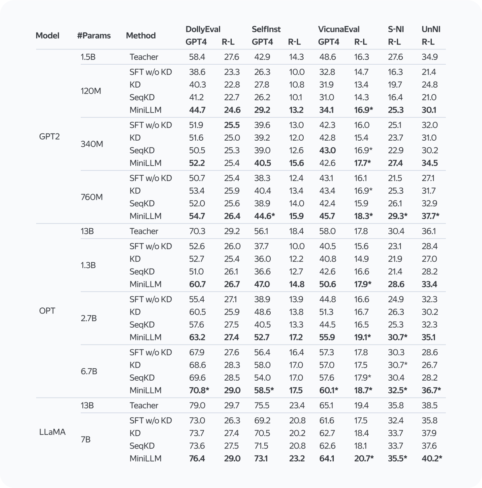
Сравнение методов дистилляции на разных семействах моделей: MiniLLM (правые столбцы) обгоняет и hard-label, и обычную KL-дистилляцию во всех размерах, причём разрыв тем заметнее, чем меньше ученик. Источник 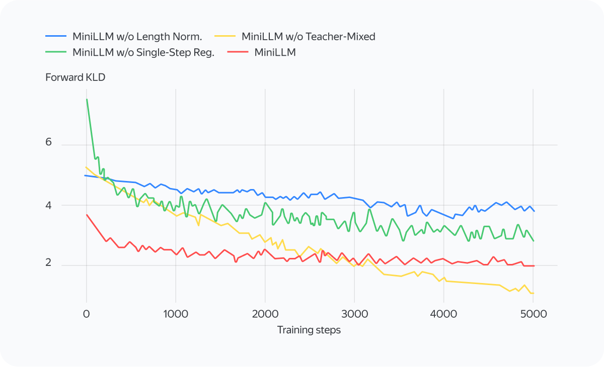
KL-дивергенция между учителем и учеником по ходу обучения MiniLLM при разных комбинациях трюков. Видно, что без стабилизирующих приёмов кривая идёт заметно выше и хуже сходится — то есть каждый трюк вносит собственный вклад, а не дублирует соседние. Уберите любой из трёх — и результат станет хуже: каждый закрывает свой источник нестабильности, и подменить один другим не получается.
Важная отдельная новость: трюки не вредят разнообразию. Несмотря на mode-seeking природу обратной KL, модель не беднеет в плане словарного запаса — опасение «ученик схлопнется в один шаблонный ответ» на практике не подтверждается.
Какую техническую проблему решает MiniLLM?
Обратная KL записана как матожидание по распределению ученика, поэтому от параметров $\theta$ зависят и сами сэмплы. Сэмплирование недифференцируемо, и обычный backprop через него не проходит — нужен специальный оценщик градиента.
Как работает REINFORCE-трюк в MiniLLM?
Градиент переписывается как ожидание по генерациям ученика: $\nabla_\theta \mathcal{L} = \mathbb{E}_{q_\theta(y)}\left[\log\frac{q_\theta(y)}{p(y)} \cdot \nabla_\theta \log q_\theta(y)\right]$. Дифференцируется только лог-вероятность последовательности, а роль награды играет $\log(q_\theta/p)$.
Что содержательно делает формула MiniLLM?
Сэмплирует генерации ученика, измеряет их расхождение с учителем и повышает вероятность тех, что согласуются с учителем, понижая вероятность тех, что учитель считает маловероятными. Аналитическая форма KL при этом не нужна.
Почему голого REINFORCE недостаточно?
Его оценка градиента имеет очень высокую дисперсию: награда считается по всей последовательности, а сигнал приписывается каждому токену. Обучение становится нестабильным, поэтому добавляют разложение градиента по шагам, смешанное сэмплирование с importance weights и нормализацию награды по длине.
Почему MiniLLM превосходит hard-label и soft-label дистилляцию?
Ученик обучается на собственных генерациях, что устраняет exposure bias, а обратная KL не заставляет его размазывать вероятность по недостижимым модам учителя. В результате дистилляция 13B $\to$ 1.3B обгоняет по качеству обычное обучение модели 2.7B.
Не схлопывается ли ученик в однообразные ответы из-за mode-seeking?
На практике нет: замеры показывают, что словарное разнообразие генераций не деградирует. Стабилизирующие трюки в том числе и предназначены для того, чтобы удерживать обучение от вырождения.
-
Трюки для замены PPO
Начнём с того, что мы вообще хотим минимизировать, — это обратная KL, расписанная по токенам:
$$ L(\theta)=D_{KL}(q_\theta \parallel p)=\\ \frac{1}{N}\sum_{n=1}^{N} \textcolor{#f87171}{\mathbb{E}_{q_\theta(y_{n,1:T_n} \mid x_n)}} \sum_{t=1}^{T_n}\sum_{v} \textcolor{#34d399}{q_\theta(y_{n,t}=v \mid x_n,y_{n,1:t-1})} \log\frac{\textcolor{#34d399}{q_\theta(y_{n,t}=v \mid x_n,y_{n,1:t-1})}} {\textcolor{#a78bfa}{p(y_{n,t}=v \mid x_n,y_{n,1:t-1})}} $$
- $L(\theta)$ — функция потерь, минимизирующая расхождение между распределениями ученика и учителя.
- $N$ — число примеров в батче.
- $x_n$ — входной контекст (промпт, вопрос).
- $y_{n,1:T_n}$ — последовательность токенов, сгенерированная учеником.
- $\textcolor{#f87171}{\mathbb{E}_{q_\theta(y_{n,1:T_n}\mid x_n)}}$ — матожидание по сэмплам, взятым из распределения ученика.
- $\textcolor{#34d399}{q_\theta(y_{n,t}=v \mid x_n, y_{n,1:t-1})}$ — вероятность выбрать токен $v$ на шаге $t$ учеником.
- $\textcolor{#a78bfa}{p(y_{n,t}=v \mid x_n, y_{n,1:t-1})}$ — вероятность того же токена у учителя.
- $\log \frac{q_\theta}{p}$ — логарифмическая мера расхождения между вероятностями ученика и учителя.
В формуле спрятаны две принципиально разные операции, и путать их нельзя.
Внутренняя сумма $\sum_v$ — по всем токенам словаря на одной позиции. Она считается точно: у нас есть полные векторы вероятностей ученика и учителя, просто перемножаем и складываем.
Внешнее матожидание $\mathbb{E}_{q_\theta}$ — по всем возможным последовательностям целиком. Их экспоненциально много, точно посчитать невозможно, поэтому его оценивают сэмплированием: генерируем несколько ответов ученика и усредняем. И именно оно, как мы видели в предыдущем вопросе, не дифференцируется напрямую.
Для дифференцирования обратной KL применяется REINFORCE-трюк (подробнее — в курсе Practical RL в ШАДе). В MiniLLM вводят аппроксимацию градиента, но она ведёт себя нестабильно.
Классическое лекарство от нестабильности в RL — PPO (Proximal Policy Optimization), алгоритм, который ограничивает величину шага политики, не давая ей за одно обновление уехать слишком далеко.
Проблема в том, что PPO очень сложно настроить: он тащит за собой отдельную value-модель, буфер траекторий, целый выводок гиперпараметров (клиппинг, GAE, число эпох на батч) и славится тем, что «работает или не работает» в зависимости от мелочей реализации. Поэтому вместо полноценного PPO используют три точечных трюка, каждый из которых чинит свой источник нестабильности.
Первый трюк: разложение градиента по шагам
Проблема REINFORCE — дисперсия: одна общая награда на всю последовательность превращает обучение в угадайку.
Идея первого трюка: заметить, что не вся формула требует сэмплирования. Градиент можно расписать по шагам и разделить на две части — ту, где сэмплирование действительно неизбежно, и ту, где на данной позиции распределения известны целиком и производную можно взять аналитически. Чем большую долю сигнала мы считаем точно, тем меньше шума в обучении.
Нужно по-другому расписать градиент, разложив его по шагам генерации, — получаются два слагаемых:
$$ \textcolor{#ef4444}{\nabla_{\theta}\mathcal{L}}= \textcolor{#fbbf24}{\mathbb{E}_{q_{\theta}(y)}} \sum_{t=1}^{T} \textcolor{#22d3ee}{R_{t+1}} \textcolor{#a3e635}{\nabla_{\theta}\log q_{\theta}(y_{t}\mid y_{\lt t})} + \sum_{t=1}^{T} \textcolor{#f472b6}{\mathbb{E}_{q_{\theta}(y_{\lt t}\mid x)}} \textcolor{#7c3aed}{\nabla_{\theta}} \underset{\textcolor{#38bdf8}{q_{\theta}(y_{t}\mid x,y_{\lt t})}}{\mathbb{E}} \log\frac{\textcolor{#be185d}{q_{\theta}(y_{t}\mid y_{\lt t})}} {\textcolor{#fb923c}{p(y_{t}\mid y_{\lt t})}} $$
- $\textcolor{#ef4444}{\nabla_{\theta}\mathcal{L}}$ — полный градиент функции потерь, показывающий, как корректировать параметры ученика.
- $\textcolor{#fbbf24}{\mathbb{E}_{q_{\theta}(y)}}$ — ожидание по сэмплам, сгенерированным самим учеником (on-policy обучение).
- $\textcolor{#22d3ee}{R_{t+1}}$ — «награда» (reward), оценивающая качество продолжения, начиная с шага $t+1$: накопленное расхождение с учителем на оставшемся хвосте.
- $\textcolor{#a3e635}{\nabla_{\theta}\log q_{\theta}(y_{t}\mid y_{\lt t})}$ — направление обновления параметров: как изменить вероятность выбранного токена.
- $\textcolor{#f472b6}{\mathbb{E}_{q_{\theta}(y_{\lt t}\mid x)}}$ — ожидание по префиксам длины $t-1$.
- $\textcolor{#7c3aed}{\nabla_{\theta}}$ — оператор дифференцирования по параметрам модели.
- $\textcolor{#38bdf8}{q_{\theta}(y_{t}\mid x,y_{\lt t})}$ — распределение ученика на текущем шаге, по которому берётся внутреннее матожидание.
- $\textcolor{#be185d}{q_{\theta}(y_{t}\mid y_{\lt t})}$ и $\textcolor{#fb923c}{p(y_{t}\mid y_{\lt t})}$ — вероятности токена $y_t$ у ученика и у учителя.
Первая сумма — стохастическая, REINFORCE-часть: обновление по награде за будущее, оценивается сэмплированием. Вторая сумма — точная дифференцируемая часть: на фиксированном префиксе внутреннее матожидание берётся по всему словарю аналитически, никаких сэмплов не нужно.
Смысл разделения: одношаговый вклад, который раньше приходил зашумлённой оценкой вместе со всем остальным, теперь считается без шума. Дисперсия падает, обучение стабилизируется — и всё это без полного PPO.
Второй трюк: importance sampling против reward hacking
Модели в современном NLP очень любят обманывать награду (reward hacking): находить генерации, которым метрика ставит высокий балл, хотя по существу они плохи.
В нашем случае «награда» — согласие с учителем, и ученик может нащупать вырожденные тексты, на которых учитель случайно даёт высокие вероятности, а осмысленность при этом теряется. Нужен механизм, который не позволит ученику уехать далеко от разумной области.
Лекарство — не сэмплировать из чистого ученика, а взять более консервативное распределение $\widetilde{q}_{\theta}$ (смесь ученика с эталонным распределением — учителем либо предыдущей версией самого ученика). Но тогда матожидание берётся уже не по тому распределению, что стоит в формуле, и оценку нужно скорректировать хаком Importance Sampling:
$$ \textcolor{#e11d48}{\nabla_{\theta}\mathcal{L}} = \underset{\textcolor{#f59e42}{\widetilde{q}_{\theta}(y)}}{\mathbb{E}} \sum_{t=1}^{T} \textcolor{#0ea5e9}{w_t R_{t+1}} \textcolor{#84cc16}{\nabla_{\theta}\log q_{\theta}(y_t\mid y_{\lt t})} + \sum_{t=1}^{T} \underset{\textcolor{#a21caf}{\widetilde{q}_{\theta}(y_{\lt t}\mid x)}}{\mathbb{E}} \textcolor{#facc15}{w_t} \textcolor{#14b8a6}{\nabla_{\theta}} \underset{\textcolor{#6366f1}{q_{\theta}(y_t\mid x,y_{\lt t})}}{\mathbb{E}} \log\frac{\textcolor{#be185d}{q_{\theta}(y_t\mid y_{\lt t})}} {\textcolor{#9333ea}{p(y_t\mid y_{\lt t})}} $$
где веса определяются как:
$$ \textcolor{#0ea5e9}{w_t} \approx \log\frac{\textcolor{#be185d}{q_{\theta}(y_t\mid y_{\lt t})}} {\textcolor{#f472b6}{\widetilde{q}_{\theta}(y_t\mid y_{\lt t})}} $$
- $\textcolor{#f59e42}{\widetilde{q}_{\theta}(y)}$ — распределение, из которого фактически сэмплируем: сглаженная, консервативная политика (смесь с учителем либо политика предыдущей итерации). Играет роль reference distribution и не даёт обновлениям скакать.
- $\textcolor{#0ea5e9}{w_t}$ — importance weight: насколько текущее распределение $q_{\theta}$ отличается от того, из которого брали сэмплы. Если они близки, $w_t \approx 1$ и градиент не искажается; если сильно разошлись — вклад такого сэмпла ослабляется.
- $\textcolor{#84cc16}{\nabla_{\theta}\log q_{\theta}(y_t\mid y_{\lt t})}$ — градиент лог-правдоподобия токена, повышающий вероятность более «вознаграждённых» токенов.
- $\textcolor{#a21caf}{\widetilde{q}_{\theta}(y_{\lt t}\mid x)}$ — вероятность префикса по опорной политике; по ней усредняются исторические траектории.
- $\textcolor{#facc15}{w_t}$ во втором слагаемом — та же поправка для аналитической части, компенсирующая несовпадение выборочного распределения.
- $\textcolor{#14b8a6}{\nabla_{\theta}\underset{q_{\theta}}{\mathbb{E}}}$ — внутренний градиент по текущей модели, вычисляемый точно.
- $\textcolor{#be185d}{q_{\theta}(y_t\mid y_{\lt t})}$ — новая политика (ученик), чьи параметры обновляются.
- $\textcolor{#9333ea}{p(y_t\mid y_{\lt t})}$ — целевое распределение учителя, задающее «идеальное» поведение.
- $\textcolor{#f472b6}{\widetilde{q}_{\theta}(y_t\mid y_{\lt t})}$ — опорное распределение в знаменателе весов; предотвращает «взрыв» градиентов.
Importance sampling («выборка по значимости») — общий приём: если хочется посчитать среднее по распределению $A$, а сэмплы у нас из распределения $B$, то каждый сэмпл домножают на отношение вероятностей $A/B$.
Бытовая аналогия: вы хотите узнать средний рост россиянина, но опросили только посетителей баскетбольной секции. Честный ответ — не выбросить данные, а взвесить их: каждого баскетболиста учесть с маленьким весом, потому что таких людей в популяции мало. Здесь ровно то же самое: сэмплы взяты из «безопасного» распределения $\widetilde q_\theta$, а нужны нам как будто из $q_\theta$, поэтому вводится вес $w_t$.
Обратите внимание на роль весов: когда новая политика уходит далеко от опорной, $w_t$ становится маленьким и вклад такого шага в градиент подавляется.
По сути, это то же, что делает клиппинг в PPO: ограничить шаг обновления, не позволив политике за одну итерацию уехать далеко от предыдущей версии. Только вместо полноценного PPO с value-моделью и её гиперпараметрами мы получаем тот же эффект одной поправкой в формуле. Обновления становятся консервативными, форма распределения сохраняется, reward hacking подавляется.
Третий трюк: нормализация по длине
Награда $R_{t+1}$ — это сумма расхождений по всем оставшимся токенам. Значит, у длинного хвоста она автоматически больше по модулю, чем у короткого, — просто потому что слагаемых больше, а не потому что текст хуже.
Результат: градиент оказывается смещён в сторону длины. Модель начинает системно предпочитать короткие ответы (у них штраф меньше), а обучение на длинных примерах хуже сходится.
Он самый простой — нормализовать награду по длине оставшегося хвоста. Итоговая форма получается уже похожей на soft-label дистилляцию:
$$ \textcolor{#f87171}{\nabla_{\theta}\mathcal{L}} = \underset{\textcolor{#fbbf24}{\widetilde{q}_{\theta}(y)}}{\mathbb{E}} \sum_{t=1}^{T} \textcolor{#0ea5e9}{w_t} \left[ \textcolor{#84cc16}{R_{t+1}^{\text{Norm}}} \textcolor{#a3e635}{\nabla_{\theta}\log q_{\theta}(y_t\mid y_{\lt t})} + \textcolor{#7c3aed}{\nabla_{\theta}} \underset{\textcolor{#a78bfa}{q_{\theta}(y_t\mid x,y_{\lt t})}}{\mathbb{E}} \log\frac{\textcolor{#be185d}{q_{\theta}(y_t\mid y_{\lt t})}} {\textcolor{#34d399}{p(y_t\mid y_{\lt t})}} \right] $$
$$ \textcolor{#84cc16}{{R}_{t+1}^{\text{Norm}}} = \frac{1}{\textcolor{#ef4444}{T - t - 1}} \sum_{k=t}^{T} \log \frac{ \textcolor{#0ea5e9}{q_{\theta}(y_k\mid y_{\lt k})} }{ \textcolor{#34d399}{p(y_k\mid y_{\lt k})} } $$
- $\textcolor{#f87171}{\nabla_{\theta}\mathcal{L}}$ — общий градиент, включающий часть с наградой и часть с KL-регуляризацией.
- $\textcolor{#fbbf24}{\widetilde{q}_{\theta}(y)}$ — опорная политика, из которой берутся сэмплы.
- $\textcolor{#0ea5e9}{w_t}$ — вес importance sampling из второго трюка.
- $\textcolor{#84cc16}{R_{t+1}^{\text{Norm}}}$ — нормализованная награда: среднее расхождение с учителем на оставшемся хвосте, а не сумма.
- $\textcolor{#ef4444}{(T - t - 1)}$ — число оставшихся шагов, на которое делим. Именно оно превращает сумму в среднее.
- $\textcolor{#a3e635}{\nabla_{\theta}\log q_{\theta}(y_t\mid y_{\lt t})}$ — стохастический градиент лог-правдоподобия.
- $\textcolor{#7c3aed}{\nabla_{\theta}}$ во втором слагаемом — обновление с учётом точной KL-части.
- $\textcolor{#a78bfa}{q_{\theta}(y_t\mid x,y_{\lt t})}$ и $\textcolor{#34d399}{p(y_t\mid y_{\lt t})}$ — распределения ученика и учителя на текущем шаге.
Деление на $(T - t - 1)$ переводит награду из «суммы штрафов» в «средний штраф на токен».
Средний штраф уже не зависит от того, сколько токенов осталось: ответ на 20 токенов и ответ на 200 токенов сравниваются по качеству, а не по длине. Смещение в сторону коротких генераций исчезает, дисперсия по батчу падает (длинные примеры перестают доминировать в градиенте), обучение на длинных ответах сходится нормально.
Заодно формула становится структурно похожей на soft-label дистилляцию, где награда — сглаженная функция KL-дивергенции: первое слагаемое поощряет полезные ответы, второе удерживает политику рядом с базовой.
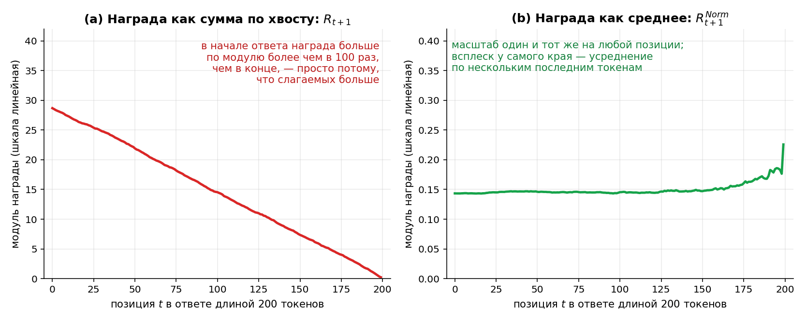
Модельный расчёт для одного ответа длиной 200 токенов: потокенное расхождение с учителем взято примерно постоянным (около 0.15 с небольшим шумом), обе шкалы линейные. (a) награда как сумма по хвосту падает почти по прямой от 28.7 в начале ответа до 0.23 в конце — разница более чем в 100 раз возникает исключительно из-за числа слагаемых, качество текста тут ни при чём. Именно этот перекос и толкает модель к коротким ответам. (b) та же награда после деления на длину хвоста держится около 0.14 на всём протяжении ответа. Всплеск до 0.23 у самого правого края — не сигнал, а шум усреднения: там в среднем участвует всего несколько последних токенов. Логика «уберём value-модель, оставим ограничение шага и нормировку» — не частный приём дистилляции, а общий тренд последних лет.
Ровно из этой идеи выросли GRPO, RLOO и другие безкритиковые (critic-free) алгоритмы выравнивания LLM: вместо обученной value-функции берут среднее по группе сэмплов как базовую линию, а стабильность обеспечивают клиппингом отношений вероятностей и нормировками. Так что три трюка выше стоит воспринимать как учебный пример более широкого класса методов.
Зачем нужны альтернативы PPO при on-policy дистилляции LLM?
PPO даёт стабильность, но тащит за собой value-модель, буфер траекторий и множество капризных гиперпараметров. Три точечных трюка — разложение градиента, importance sampling и нормализация по длине — дают сопоставимую устойчивость гораздо более дешёвым способом.
Какие два усреднения есть в исходной формуле лосса и чем они отличаются?
Сумма по словарю на одной позиции считается точно, потому что полные векторы вероятностей известны. Матожидание по последовательностям точно посчитать нельзя (их экспоненциально много), поэтому его оценивают сэмплированием — и именно оно порождает недифференцируемость и высокую дисперсию.
В чём суть первого трюка?
Градиент раскладывается по шагам генерации на стохастическую REINFORCE-часть (обновление по награде за будущее) и аналитически вычисляемую часть (точный одношаговый вклад KL). Чем больше сигнала считается точно, тем ниже дисперсия оценки.
Что такое importance sampling и от чего защищает второй трюк?
Приём, позволяющий оценить среднее по одному распределению, имея сэмплы из другого: каждый сэмпл домножается на отношение вероятностей $w_t = q_\theta/\widetilde q_\theta$. Сэмплирование из консервативной опорной политики плюс эти веса ограничивают шаг обновления и подавляют reward hacking — тот же эффект, что даёт клиппинг в PPO.
Зачем третий трюк нормализует награду по длине последовательности?
Награда — сумма расхождений по оставшимся токенам, поэтому у длинных хвостов она заведомо больше по модулю. Деление на $(T - t - 1)$ превращает сумму в среднее на токен, убирая смещение в сторону коротких ответов и снижая разброс градиента по батчу.
Что общего у этих трюков с современными RL-методами выравнивания LLM?
Все они реализуют идею «critic-free RL»: отказаться от обученной value-модели, оставив ограничение размера шага и нормировки. По этому же принципу устроены GRPO и RLOO, где базовой линией служит среднее по группе сэмплов.
-
Кросс-токенизаторная дистилляция
Кросс-токенизаторная дистилляция — дистилляция между моделями с разными токенизаторами.
Это ключевая практическая проблема: Llama, Qwen, Mistral, Gemma используют разные BPE-словари, и стандартная soft-label дистилляция через KL-дивергенцию к ним неприменима — размеры словарей и ID токенов не совпадают. Hard-label дистилляция при этом работает, но теряет информацию о полном распределении учителя.
Если совсем простыми словами: обе модели говорят по-русски, но записывают текст разными алфавитами. Сравнивать их «побуквенно» бессмысленно, пока мы не решим, что чему соответствует.
Расшифруем базовый термин, без которого дальше не разобраться.
Токенизатор — это то, что превращает текст в последовательность целых чисел, понятных модели. Он режет строку на куски (токены) и заменяет каждый кусок его номером в словаре.
BPE (Byte Pair Encoding) — самый распространённый способ построить такой словарь: он подбирается по корпусу так, чтобы частые сочетания символов становились одним токеном, а редкие слова распадались на несколько кусочков. Именно поэтому у каждой модели свой словарь: он выучен на её собственных данных, а не задан стандартом.
Возьмём слово
квантизация.- Токенизатор A режет его на
кван+тиз+ация— три токена. - Токенизатор B режет на
квант+изация— два токена.
Даже если случайно совпал ID (скажем, номер 4127 есть в обоих словарях), у A это может быть
кван, а у B —слон. Никакого общего смысла у одинаковых номеров нет.Отсюда два независимых препятствия: разная длина последовательности для одного и того же текста и разное значение одних и тех же индексов. KL-дивергенция ломается по обеим причинам сразу — она требует, чтобы оба распределения жили на одном и том же множестве событий.
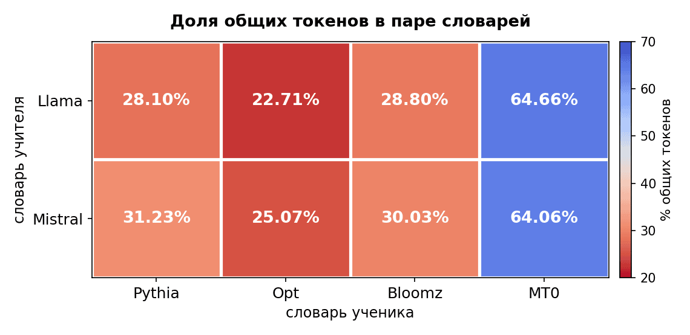
Насколько вообще пересекаются словари разных семейств: замеры по восьми парам моделей из работы Boizard et al., 2024. Строки — словарь учителя (Llama и Mistral), столбцы — словарь ученика, в клетке доля токенов, которая нашлась в обоих. Цвет идёт от красного (мало общего) к синему (много): у Opt пересечение самое низкое — 22.71% с Llama и 25.07% с Mistral, у Pythia и Bloomz 28-31%, и только MT0 выделяется синим с 64%. То есть в типичной паре моделей примерно три четверти словаря просто не с чем сопоставить, и попозиционная KL по логитам действительно неприменима. ULD: Universal Logit Distillation
ULD (Universal Logit Distillation), 2024 — первый метод soft-label кросс-токенизаторной дистилляции. Вместо KL-дивергенции авторы берут расстояние Вассерштейна (Earth Mover's Distance, EMD) — меру расхождения распределений, не требующую одинакового словаря.
Представьте два вероятностных распределения как две кучи песка одинаковой массы. EMD — это минимальная работа, которую надо совершить, чтобы перевезти первую кучу и получить вторую: сколько песка и на какое расстояние перевезли.
Почему это спасает ситуацию: KL спрашивает «какова вероятность события $v$ у обоих?» — и требует, чтобы событие $v$ было общим. EMD спрашивает «как далеко надо двигать массу?» — и работает с распределениями, у которых носители вообще разные, в том числе разного размера. Именно это свойство здесь и нужно.
- Получить логиты учителя и ученика для одной и той же позиции.
- Обрезать генерации до длины более короткой последовательности (разные токенизаторы дают разное число токенов).
- Отсортировать вероятности токенов по убыванию — авторы делают априорное предположение, что форма (shape) softmax-распределения похожа у обеих моделей.
- Вычислить расстояние Вассерштейна между отсортированными распределениями:
$$ \mathcal{L}_{\text{ULD}} = \mathbb{E}_t\!\left[ W_1\!\left(\textcolor{#93C5FD}{\text{sort}(p_T(t))},\; \textcolor{#6EE7B7}{\text{sort}(p_S(t))}\right) \right] $$
где $\textcolor{#93C5FD}{p_T}$ — распределение учителя, $\textcolor{#6EE7B7}{p_S}$ — ученика, $W_1$ — расстояние Вассерштейна первого порядка.
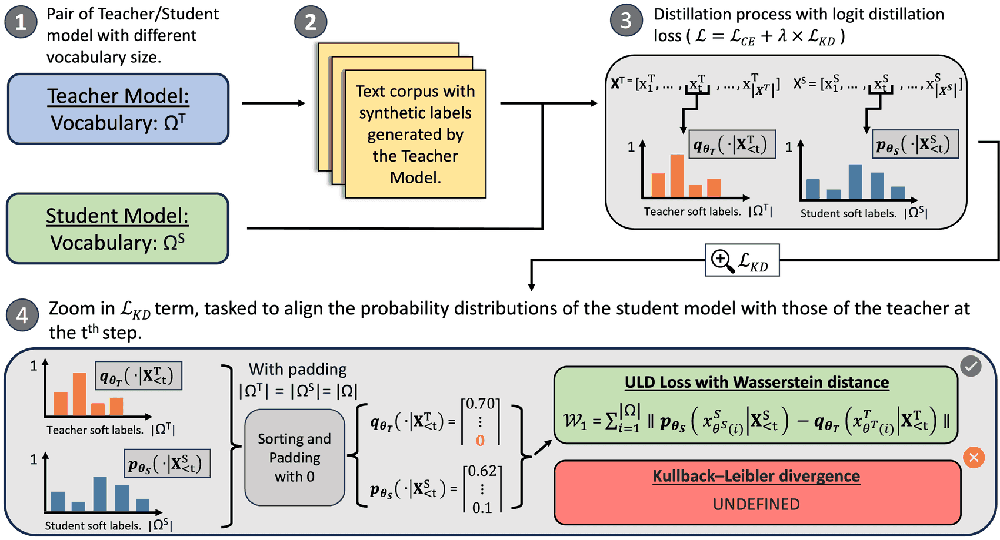
Полная схема ULD из статьи, четыре пронумерованных шага. (1) пара моделей с разными по размеру словарями: синяя карточка учителя со словарём $\Omega^T$, зелёная ученика со словарём $\Omega^S$. (2) жёлтые листы — корпус текстов, размеченный самим учителем. (3) на шаге $t$ обе модели выдают свои soft labels: оранжевая гистограмма учителя над словарём $\Omega^T$ и синяя гистограмма ученика над $\Omega^S$ — обратите внимание, что столбики стоят на разных наборах событий и по-разному упорядочены. (4) увеличенный лосс: оба вектора дополняются нулями до общей длины, сортируются серым блоком Sorting and Padding with 0, и только после этого сравниваются. Зелёная плашка с галочкой — расстояние Вассерштейна $\mathcal{W}_1$ на отсортированных векторах работает; красная плашка с крестиком — KL-дивергенция на исходных словарях просто не определена. Сортировка — центральный трюк ULD, и её стоит понять отдельно.
После сортировки мы сравниваем не «вероятность токена
коту учителя и у ученика», а «вероятность самого вероятного токена у учителя и у ученика», затем второго по вероятности, третьего и так далее. Конкретные ID из формулы полностью исчезают — остаётся только профиль уверенности модели.Содержательный посыл такой: пусть ученик хотя бы научится быть уверенным там, где уверен учитель, и сомневаться там, где сомневается учитель. Это слабее полноценной KL, но зато работает поверх любых словарей.
Авторам ULD удалось задистиллировать Llama и Mistral в mT0-580M, BloomZ-560M, OPT-350M и Pythia-410M — модели с принципиально разными токенизаторами — и заметно превзойти hard-label дистилляцию.
Две оставшиеся проблемы:
- Потеря информации с конца — обрезка до длины более короткой последовательности выбрасывает хвост генерации.
- Семантический мисматч токенов — после сортировки токены сравниваются только по рангу вероятности, а не по смыслу: $i$-й по вероятности токен учителя может не иметь ничего общего с $i$-м токеном ученика.
Стоит явно осознать, чем платит ULD.
Учитель мог колебаться между
коврикиподстилка, а ученик — междуковрикиавтомобиль. Профили уверенности у них при этом идентичны (0.4 / 0.35), и ULD-лосс будет нулевым: с его точки зрения модели согласны. А содержательно ученик учит полную чушь.То есть ULD переносит «геометрию уверенности», но не «карту похожести», ради которой soft-label дистилляцию и придумывали. Следующие методы — попытки вернуть эту карту обратно.
CDM: Contextual Dynamical Mapping
CDM (Enhancing Cross-Tokenizer Knowledge Distillation with Contextual Dynamical Mapping), 2025 — решает первую проблему ULD.
Вместо обрезки до более короткой последовательности авторы выравнивают (алайнят) токены между токенизаторами: находят соответствия между токенами учителя и ученика на уровне символов и подслов. Токены, для которых соответствие найти не удалось, маскируются — то есть просто не участвуют в лоссе, — вместо того чтобы обрезать всю генерацию.
Вернёмся к слову
квантизация: учитель разбил его наквант+изация, ученик — накван+тиз+ация.Выравнивание работает по символьным границам: обе модели покрывают один и тот же отрезок текста, просто разным числом шагов. CDM сопоставляет эти отрезки друг другу и считает лосс там, где границы совпали. Если какой-то фрагмент не удалось сопоставить (границы разъехались), он маскируется — но вся остальная последовательность остаётся в обучении, а не отрезается.
CDM даёт заметный прирост качества по сравнению с ULD за счёт более полного использования длинных генераций учителя.
Однако маскирование несопоставленных токенов — всё ещё потеря информации, пусть и меньшая, чем сплошная обрезка в ULD. Именно эту потерю и устраняет следующий метод.
GOLD: Group Optimized Logit Distillation
GOLD (Group Optimized Logit Distillation), 2025 (Hugging Face H4 Team) — текущий state-of-the-art кросс-токенизаторной дистилляции.
Метод объединяет три улучшения над ULD и CDM: суммирование логарифмов вероятностей вместо маскирования, гибридный лосс из KL и Вассерштейна и смешанный on-/off-policy режим обучения. Разберём их по очереди.
Вместо того чтобы выбрасывать несопоставленные токены, авторы складывают их логарифмы вероятностей:
$$ \log p(\text{segment}) = \sum_{t \in \text{segment}} \log \textcolor{#93C5FD}{\pi_\theta(t)} $$
Это математически корректно, потому что $\sum \log p = \log \prod p$: сумма логарифмов есть логарифм произведения, то есть логарифм совместной вероятности всего сегмента.
Практический смысл: три токена ученика
кван+тиз+ациясхлопываются в одну вероятность «модель породила отрезок квантизация», и её уже можно честно сравнить с вероятностью того же отрезка у учителя. Границы токенизаторов перестают мешать — сравниваются одинаковые куски текста, а не куски словаря.Ключевое наблюдение: у современных моделей заметная доля токенов всё-таки совпадает — обычно 40–50%, а у близких семейств и больше. Тратить на них грубый ULD-лосс расточительно.
Поэтому GOLD применяет гибрид: где токены сопоставились — точную KL-дивергенцию, где нет — Вассерштейн как запасной вариант:
$$ \mathcal{L}_{\text{GOLD}} = \underbrace{\mathcal{L}_{\text{KLD}}}_{\text{совпавшие токены}} + \underbrace{\mathcal{L}_{\text{ULD}}}_{\text{остальные}} $$
То есть метод даёт максимально точный сигнал везде, где это возможно, и довольствуется приближением только там, где без него не обойтись.
Третья часть — ровно идея GKD из вопроса про exposure bias: часть батча составляют on-policy генерации ученика, часть — заранее посчитанные off-policy данные.
Доля on-policy обозначается $\lambda$ и служит гиперпараметром: больше $\lambda$ — сильнее лечится exposure bias, но дороже обучение. Так GOLD закрывает и вторую системную проблему дистилляции, а не только несовпадение словарей.
Дистилляция Qwen-3-4B $\to$ Qwen-2.5-1.5B, качество измеряется как доля от качества учителя:
On-policy доля $\lambda$ Качество учителя $\lambda = 1.0$ (полный on-policy) 92% $\lambda = 0.5$ 88% $\lambda = 0.25$ 86% $\lambda = 0.0$ (только off-policy) 79% Виден и масштаб эффекта on-policy (разрыв 79% $\to$ 92%), и его нелинейность: половина on-policy даёт 88%, то есть большую часть выигрыша за половину стоимости. Это и есть практический sweet spot.
Дистилляция Qwen-3-4B $\to$ Llama-3.2-1B, совпадение токенизаторов около 64%:
Метод Качество учителя GOLD 59% ULD 9% Разрыв в 6.5 раза. Он показывает, насколько дорого обходятся обрезка последовательности и «слепая» сортировка, когда словари действительно разные: ULD в этой конфигурации фактически не работает.
GOLD продемонстрировал интересный use case: сначала обучить code SFT (supervised fine-tuning на коде) на Qwen, а затем задистиллировать получившуюся модель обратно в исходную — чтобы восстановить общие способности, например на IFEval (бенчмарке следования инструкциям).
Смысл в том, что узкая дообучёнка обычно «забывает» часть общих навыков (это называют catastrophic forgetting). Кросс-токенизаторная дистилляция позволяет перенести специализацию между семействами моделей, не унаследовав деградацию, — то есть совместить специализацию и универсальность.
- Дистилляция сильных моделей в открытые: учитель и ученик из разных семейств (GPT $\to$ Llama, Qwen $\to$ Mistral). ULD/GOLD позволяют передать знания, имея только логиты, без доступа к внутренностям учителя.
- GOLD Trainer в TRL: реализация доступна в экспериментальной ветке библиотеки
trlот Hugging Face — классGoldTrainer, с настройкой $\lambda$ для доли on-policy. - Speculative Knowledge Distillation (2024): дополнительная идея — управлять $\lambda$ динамически, в зависимости от текущего качества ученика. Пока ученик слаб, дешёвых off-policy данных достаточно; по мере роста качества доля on-policy увеличивается, и это выбивает ещё несколько процентов.
Кросс-токенизаторная дистилляция — всегда компромисс, а не бесплатный обход ограничения.
Если у вас есть возможность взять учителя и ученика с одним токенизатором (например, старшую и младшую модель одной линейки), делайте именно так: обычная soft-label дистилляция и проще в реализации, и точнее по сигналу. Кросс-токенизаторные методы нужны тогда, когда выбора нет: нужный учитель существует только в чужом семействе.
Почему стандартная soft-label дистилляция (KL) неприменима при разных токенизаторах?
KL-дивергенция требует, чтобы оба распределения были определены на одном и том же множестве событий — словаре. При разных токенизаторах словари имеют разный размер, одинаковые ID означают разные токены, а один и тот же текст разбивается на разное число шагов. Попозиционно сравнить векторы логитов невозможно.
Какую идею предложил ULD и почему она работает для разных словарей?
ULD заменяет KL расстоянием Вассерштейна между отсортированными векторами вероятностей. Сортировка убирает зависимость от конкретных ID — сравниваются только формы распределений, то есть профили уверенности моделей. Вассерштейн, в отличие от KL, корректно определён и для распределений с разными носителями.
В чём принципиальная слабость сортировки в ULD?
Она переносит «геометрию уверенности», но не «карту похожести»: две модели с одинаковыми профилями вероятностей, но совершенно разными наборами вероятных токенов, дадут нулевой лосс, хотя содержательно расходятся полностью.
Какие две проблемы ULD и как их решают CDM и GOLD?
Обрезка до более короткой последовательности теряет хвост генерации — CDM выравнивает токены по символьным границам и маскирует несопоставленные вместо обрезки. Сортировка игнорирует смысл токенов — GOLD применяет точную KL там, где токены совпали, и Вассерштейн только для остальных.
Почему в GOLD корректно суммировать логарифмы вероятностей нескольких токенов?
Потому что $\sum \log p = \log \prod p$: сумма логарифмов равна логарифму совместной вероятности сегмента. Это позволяет схлопнуть несколько токенов одного токенизатора в одну вероятность отрезка текста и сравнить её с вероятностью того же отрезка у другой модели.
Что такое $\lambda$ в GOLD и где практический оптимум?
$\lambda$ — доля on-policy части батча (генераций ученика) против off-policy (предпосчитанных данных). При $\lambda = 1$ достигается 92% качества учителя, при $\lambda = 0$ — лишь 79%. Значение $\lambda = 0.5$ даёт 88% при вдвое меньшей стоимости и считается практическим sweet spot.
Когда кросс-токенизаторную дистилляцию применять не нужно?
Когда учитель и ученик могут быть взяты из одной линейки с общим токенизатором: обычная soft-label дистилляция проще и точнее. Кросс-токенизаторные методы оправданы только тогда, когда нужный учитель существует лишь в чужом семействе моделей.
- Токенизатор A режет его на
-
Квантизация: определение
Квантизация — процесс преобразования значений из представления с большим объёмом информации (обычно непрерывного множества) в более компактное представление, обычно из дискретного множества.
Если совсем простыми словами: у нас есть числа, записанные очень точно, и мы соглашаемся хранить их грубее — округлять до ближайшего значения из небольшого заранее выбранного набора. Взамен каждое число занимает меньше места.
Если данные много весят, хочется уменьшить их размер, по возможности сохранив качество. Разными методами можно находить компромисс между размером и качеством.
Для LLM выигрыш двойной, и второй пункт важнее первого:
- Модель влезает в память. Модель на 70 млрд параметров в
float16— это 140 ГБ, она не помещается ни в одну потребительскую карту. Вint4— около 35 ГБ, и её уже можно запустить. - Модель работает быстрее. Как мы разбирали в вопросе про факторы скорости, декодинг упирается не в арифметику, а в чтение весов из памяти. Уменьшили веса вчетверо — вчетверо меньше байт нужно протащить через шину на каждый токен.
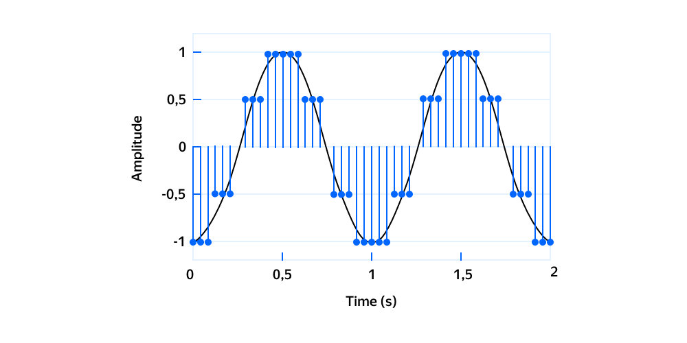
Дискретизация аналогового сигнала: гладкая кривая заменяется ступенчатой, где каждому значению непрерывного сигнала присвоено ближайшее значение из заранее заданного дискретного набора. Разница между кривой и ступеньками — ошибка квантизации; чем больше уровней, тем она меньше. Источник Это ровно та же операция, что происходит с весами нейросети: непрерывная величина заменяется ближайшим представимым уровнем, а разница объявляется допустимой погрешностью.
В контексте нейросетей квантизация означает переход от типа данных с большим числом битов, например
float32, к типу с меньшим числом, такому какint8.Считать удобно так: один параметр в
float32— 4 байта, вfloat16— 2 байта, вint8— 1 байт, вint4— полбайта. Значит, модель на 7 млрд параметров занимает 28 ГБ, 14 ГБ, 7 ГБ и 3.5 ГБ соответственно. Именно поэтому «квантованные» сборки моделей помещаются на ноутбук, а исходные — нет.Округление необратимо. Восстановив число из квантованного представления, вы получите не исходное значение, а ближайший уровень сетки — разница называется ошибкой квантизации.
Эти маленькие ошибки в весах сдвигают выход каждого слоя, а сдвиги накапливаются по глубине сети. Дальше начинается специфика LLM: модель авторегрессионная, и достаточно один раз выбрать не тот токен, чтобы вся дальнейшая генерация поехала. Поэтому вопрос никогда не стоит «портит ли квантизация модель» — только «насколько и приемлемо ли это».
Виды квантизации
Методы квантизации делятся на два больших класса.
Post-training quantization (PTQ) — квантизация уже обученной модели. Никакого обучения здесь нет, есть только подбор
scaleиzero-pointчерез статистическую калибровку на небольшой выборке. Достаточно порядка 1000 примеров. Стоит недорого и требует совсем немного GPU-времени.Quantization-aware training (QAT) — квантизация, встроенная в процесс обучения. Требует колоссальных ресурсов, сотен и тысяч GPU-часов, но даёт более высокое качество.
Калибровка — прогон нескольких сотен реальных примеров через модель, чтобы посмотреть, в каких диапазонах на самом деле лежат числа.
Веса можно измерить и без данных — они просто лежат в файле. А вот активации (промежуточные результаты внутри сети) зависят от входа: пока не прогонишь текст, неизвестно, какие значения там появляются. По собранной статистике выбирают границы диапазона и считают
scaleиzero-point.Отсюда важное практическое требование: калибровочная выборка должна быть похожа на продовые данные. Откалибровали на английской Википедии, а в проде русские диалоги — диапазоны окажутся неверными, и качество просядет.
В QAT во время обучения после каждого слоя вставляют «фейковую» квантизацию: значения округляют до сетки и тут же деквантизируют обратно. Веса при этом остаются вещественными, но сеть видит на forward-проходе те же искажения, что будут в бою, и учится их компенсировать.
Есть техническая тонкость: округление имеет нулевую производную почти всюду, поэтому градиент через него не проходит. Решается это приёмом Straight-Through Estimator (STE) — на обратном проходе округление считают тождественной функцией и просто пропускают градиент насквозь.
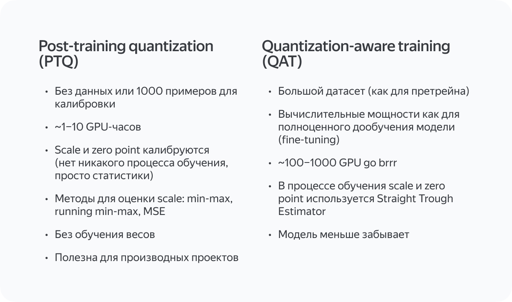
Два маршрута: в PTQ обученная модель квантуется одним проходом калибровки на маленькой выборке, в QAT квантизация эмулируется прямо в цикле обучения, поэтому модель успевает подстроить веса под будущие искажения. Отсюда и разница в стоимости, и разница в качестве. Для LLM почти всегда начинают с PTQ: дообучать модель на 70B ради квантизации мало кто может себе позволить, а современные PTQ-методы (GPTQ, AWQ, SmoothQuant — им посвящены следующие вопросы) дают вполне приличное качество.
QAT берут, когда PTQ уже не тянет: обычно это очень низкая битность (2–3 бита) либо жёсткие требования edge-развёртывания, где каждый мегабайт на счету. Практическое правило звучит так: пока PTQ укладывается в допустимую просадку качества, QAT не нужен.
- DeepSeek — FP8 не на инференсе, а прямо в обучении: мелкозернистое квантование и то, что приходится оставить в высокой точности.
- Mixtral 8x7B — сколько памяти реально нужно MoE-модели после 4-битной квантизации.
- Gemma и Phi — модели, которые проектировались под запуск на устройстве.
Что такое квантизация нейронных сетей и зачем она нужна?
Переход от хранения весов и активаций в типе с большим числом бит (
float32) к типу с меньшим (int8,int4). Это уменьшает размер модели, позволяет ей поместиться в память и ускоряет инференс за счёт меньшего объёма чтения из памяти.Почему квантизация ускоряет генерацию, а не только экономит память?
Авторегрессионный декодинг memory-bound: время шага определяется тем, сколько байт весов надо прочитать из памяти. Уменьшение разрядности весов вчетверо сокращает этот объём вчетверо, поэтому шаг генерации становится быстрее почти во столько же раз.
Чем PTQ отличается от QAT по стоимости и качеству?
PTQ применяется к уже обученной модели: только калибровка на ~1000 примеров, дёшево и быстро. QAT эмулирует квантизацию в процессе обучения — дороже на сотни GPU-часов, но модель успевает подстроиться под искажения и качество получается выше.
Что такое калибровка и какие параметры она подбирает?
Прогон небольшой выборки через модель, чтобы измерить реальные диапазоны значений активаций. По этой статистике подбираются
scale(масштаб) иzero-point(нулевая точка) — константы, задающие соответствие между вещественными и целочисленными значениями.Почему калибровочная выборка должна быть похожа на продовые данные?
Диапазоны активаций зависят от входных данных. Если калибровать на нерепрезентативном домене, границы окажутся неверными: часть значений в проде выйдет за диапазон и обрежется, а разрешение сетки будет потрачено на пустые области.
Почему квантизация неизбежно приводит к потере качества?
Округление до дискретной сетки вносит необратимую ошибку. Она искажает выход каждого слоя, искажения накапливаются по глубине, а у авторегрессионной модели одна неверно выбранная позиция утаскивает всю дальнейшую генерацию.
Что такое Straight-Through Estimator и зачем он нужен в QAT?
Приём, позволяющий пропускать градиент через недифференцируемую операцию округления: на прямом проходе значения квантуются, а на обратном округление считается тождественной функцией. Без него обучение с эмуляцией квантизации было бы невозможно — производная округления почти всюду равна нулю.
- Модель влезает в память. Модель на 70 млрд параметров в
-
Линейная квантизация
Существуют разные подходы к квантизации — например, через кластеризацию или факторизацию матриц.
Мы сосредоточимся на линейной квантизации как на самом популярном и доказавшем свою эффективность методе. Слово «линейная» означает, что сетка уровней равномерная: соседние представимые значения отстоят друг от друга на одинаковый шаг. Это ключевое свойство, потому что именно оно позволяет считать матричные умножения прямо в целых числах, а не разжимать веса обратно перед каждой операцией.
Вся линейная квантизация сводится к одной мысли: найти на вещественной оси отрезок, в который попадают наши числа, и равномерно натянуть на него целочисленную линейку.
Дальше вещественное число заменяется номером ближайшего деления линейки. Чтобы восстановить его обратно, достаточно знать две вещи: длину одного деления (
scale) и то, какому делению соответствует ноль (zero-point).Аффинная (несимметричная) квантизация
Аффинная (несимметричная) квантизация отображает произвольный, не обязательно симметричный, вещественный диапазон $[R_{min}, R_{max}]$ в $k$-битный целочисленный тип.
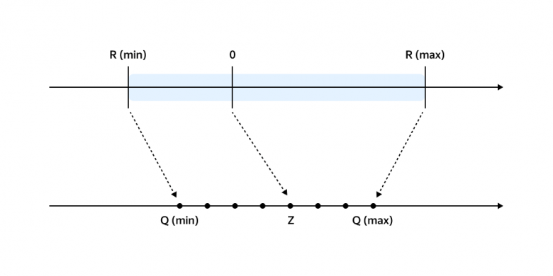
Вещественный диапазон значений тензора: границы $R_{min}$ и $R_{max}$ берутся из фактического распределения чисел и вовсе не обязаны быть симметричными относительно нуля. Для преобразования используются два параметра —
scaleиzero-point. Масштаб:$$ s = \frac{R_{max} - R_{min}}{Q_{max} - Q_{min}} $$
Нулевая точка:
$$ z = \left\lfloor Q_{min} - \frac{R_{min}}{s} \right\rceil $$
Обе получаются из простого требования: концы вещественного отрезка должны лечь ровно на концы целочисленного.
- Scale — это «сколько вещественных единиц приходится на одно целочисленное деление». Числитель — длина вещественного отрезка, знаменатель — количество доступных делений. Например, диапазон длиной 2.0 на 255 делений даёт $s \approx 0.0078$: минимальная различимая разница.
- Zero-point — это целое число, которое после деквантизации даст ровно $0.0$. Он нужен потому, что вещественный отрезок сдвинут относительно целочисленного: если ваши числа лежат в $[0.1,\ 2.1]$, нулю там просто не соответствует «естественное» целое.
Квадратные скобки $\lfloor \cdot \rceil$ — округление к ближайшему целому:
zero-pointобязан быть целым, иначе точный ноль был бы непредставим.Имея квантованный тензор, переходим к вещественному (деквантизация):
$$ x = s(x_q - z) $$
И наоборот, из вещественного в квантованный (квантизация):
$$ x_q = \left\lfloor \frac{x}{s} + z \right\rceil $$
где $\lfloor \cdot \rceil$ — округление к ближайшему целому, $s$ — коэффициент масштаба, $z$ — нулевая точка.
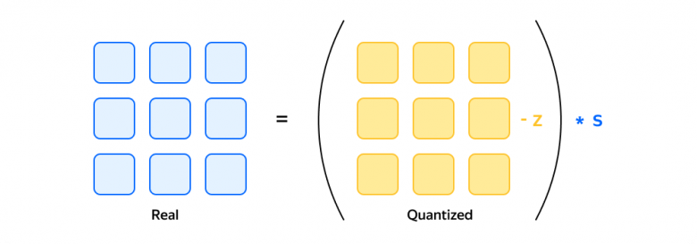
Соответствие между вещественной осью и целочисленной сеткой: равномерный шаг $s$ и сдвиг $z$ полностью задают отображение в обе стороны. $x_q$ — квантованное значение, целое число, обычно в диапазоне:
- для
uint8(беззнаковый): $[0, 255]$; - для
int8(знаковый): $[-128, 127]$.
Обозначения $Q_{min}$ и $Q_{max}$ — минимальное и максимальное представимое значение выбранного типа (например, $0$ и $255$ для
uint8). Именно они стоят в знаменателе формулы дляscale: чем больше делений даёт тип, тем мельче шаг и тем точнее приближение.Аффинная квантизация хорошо подходит для несимметричных распределений — классический пример — выход ReLU.
Логика простая: ReLU обнуляет всё отрицательное, поэтому его выход лежит в $[0, R_{max}]$. Если применить сюда симметричную схему, ровно половина целочисленной сетки (все отрицательные коды) будет описывать значения, которых не бывает, — то есть мы выбросим один бит точности на пустоту.
Симметричная квантизация
Симметричная квантизация отображает диапазон, симметричный относительно нуля.
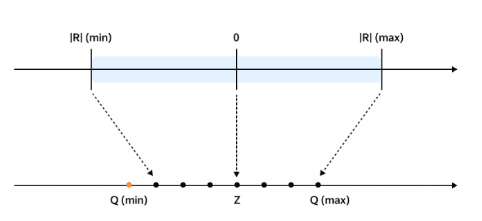
Симметричная схема: границы берутся как $\pm|R_{max}|$, ноль вещественной оси совпадает с нулём целочисленной, и сдвиг $z$ не нужен вовсе. Здесь $z = 0$, а масштаб вычисляется как:
$$ s = \frac{|R_{max}|}{2^{N-1}-1}, $$
где $N$ — число бит.
Поскольку $z = 0$, обе формулы упрощаются — сдвиг просто исчезает:
$$ x_q = \left\lfloor \frac{x}{s} \right\rceil, \qquad x = s \cdot x_q $$
Отсюда и практическое преимущество: при перемножении матриц не появляются перекрёстные слагаемые с $z$. В аффинной схеме произведение $s_1(x_q - z_1)\cdot s_2(w_q - z_2)$ раскрывается в четыре члена, каждый из которых надо посчитать и сложить; в симметричной остаётся один: $s_1 s_2 \cdot x_q w_q$. Это заметно проще и быстрее в железе.
Чтобы тип получился действительно симметричным, приходится отказаться от одного значения. Диапазон
signed int8$[-128, 127]$ превращается в $[-127, 127]$.Причина: у $-128$ нет положительного двойника, $+128$ в тип не помещается. Если оставить его в игре, отображение перестанет быть симметричным и $-128$ будет представлять величину, у которой нет зеркального аналога. Проще пожертвовать одним кодом из 256 — отсюда и $2^{N-1}-1$ в знаменателе формулы для
scale.Различие сводится к наличию или отсутствию $z$:
- Симметричная — проще и быстрее (нет сдвига, меньше слагаемых в матричном умножении, не надо хранить
zero-point), но хуже работает на несимметричных распределениях. - Аффинная — точнее на смещённых распределениях, зато требует хранить
zero-pointи усложняет арифметику.
Практическое правило в LLM: веса квантуют симметрично (их распределение почти всегда близко к симметричному относительно нуля), а активации — по обстоятельствам, потому что после ReLU или GELU они заметно смещены.
Рассмотрим, как перевести вещественный тензор из
float32вint8симметричной квантизацией. Раз типint8, то $N = 8$.Исходный тензор:
$$ x = \begin{bmatrix} 0.41 & 0.29 & 0.85\\ 0.25 & 0.33 & 0.53\\ 0.49 & 0.86 & \boxed{0.99}\\ \end{bmatrix} $$
Находим максимум по модулю: $\textcolor{red}{0.99}$. Считаем масштаб:
$$ s = \frac{|R_{max}|}{2^{N-1}-1} = \frac{\textcolor{red}{0.99}}{127} = 0.0077 $$
Квантуем — делим каждый элемент на $s$ и округляем:
$$ x_q = \left\lfloor \frac{x}{s} \right\rceil = \left\lfloor\begin{bmatrix} 0.41 & 0.29 & 0.85\\ 0.25 & 0.33 & 0.53\\ 0.49 & 0.86 & \textcolor{red}{0.99}\\ \end{bmatrix} / 0.0077\right\rceil = \begin{bmatrix} 53 & 37 & 108\\ 32 & 42 & 68\\ 62 & 109 & 126\\ \end{bmatrix} $$
На выходе — 8-битный целочисленный тензор и одна вещественная константа $0.0077$.
Выигрыш по памяти. Было 9 чисел по 4 байта = 36 байт. Стало 9 байт плюс 4 байта на константу = 13 байт. Почти втрое меньше, а на реальных тензорах в миллионы элементов одна константа вообще не считается — выигрыш стремится ровно к 4 разам.
Потеря точности. Деквантизуем первый элемент: $53 \times 0.0077 = 0.4081$ вместо исходных $0.41$. Ошибка около $0.0019$ — примерно четверть шага сетки, что и ожидается при округлении к ближайшему.
Обратите внимание, что все числа в примере положительные, а мы применили симметричную схему: половина кодов (от $-127$ до $-1$) не используется вовсе. Аффинная квантизация здесь дала бы вдвое меньший шаг и вдвое меньшую ошибку — ровно тот случай, ради которого она и нужна.
Масштаб определяется максимумом по модулю, поэтому одно-единственное аномально большое значение растягивает сетку на весь тензор.
Пусть в матрице из примера появилось значение $99.0$. Тогда $s = 99/127 = 0.78$, и все исходные числа порядка $0.3$–$0.9$ после округления схлопнутся в коды $0$ или $1$. Информация уничтожена полностью — не потому, что мало бит, а потому что все биты потрачены на обслуживание одного выброса.
Именно эта проблема — центральная в квантизации LLM, и ей посвящены следующие вопросы (LLM.int8, SmoothQuant, AWQ). Первое же стандартное лекарство — гранулярность: считать свой
scaleне на весь тензор, а на каждую строку, столбец или группу из 64–128 весов, чтобы выброс портил только свою группу.Что означает слово «линейная» в названии и почему это важно?
Сетка представимых значений равномерная: соседние уровни отстоят на одинаковый шаг $s$. Благодаря этому квантованные значения связаны с вещественными простым линейным соотношением, и матричные умножения можно выполнять прямо в целых числах, вынося масштабы за скобку.
Каковы параметры аффинной квантизации и как они вычисляются?
Scale $s = (R_{max} - R_{min})/(Q_{max} - Q_{min})$ — сколько вещественных единиц приходится на одно целочисленное деление, и zero-point $z = \lfloor Q_{min} - R_{min}/s \rceil$ — целочисленный код, соответствующий вещественному нулю.
Как выполняются квантизация и деквантизация в обеих схемах?
Аффинная: $x_q = \lfloor x/s + z \rceil$ и обратно $x = s(x_q - z)$. Симметричная: $x_q = \lfloor x/s \rceil$ и $x = s \cdot x_q$, поскольку $z = 0$.
Чем симметричная квантизация отличается от аффинной и когда какая предпочтительнее?
В симметричной нет zero-point, поэтому она проще, быстрее и не требует хранить лишний параметр, но тратит половину сетки впустую на смещённых распределениях. Аффинная точнее на несимметричных данных (выход ReLU), но усложняет арифметику матричного умножения. В LLM веса обычно квантуют симметрично, активации — по ситуации.
Почему симметричный диапазон
signed int8сужается до $[-127, 127]$?Для симметрии нужно равное число положительных и отрицательных уровней, а у значения $-128$ нет двойника $+128$ — оно не помещается в тип. Проще отказаться от одного кода, что и отражено множителем $2^{N-1}-1$ в формуле масштаба.
Почему один выброс в тензоре способен обесценить всю квантизацию?
Масштаб выбирается по максимуму модуля, поэтому единственное аномально большое значение растягивает шаг сетки на весь тензор. Все остальные числа после округления попадают в считаные соседние коды и становятся неразличимы. Лечится ограничением гранулярности — отдельным масштабом на строку, столбец или группу весов.
-
Сценарии квантизации
Квантизация трансформеров началась с BERT-подобных моделей. Сначала попробовали квантовать только веса — и всё получалось.
А когда применили квантизацию ещё и к активациям, возникли большие проблемы выбросов: в тензоре появляются значения, которые сильно выпадают из распределения. При калибровке они попадают в статистики, из-за чего
scaleиzero-pointподбираются некорректно — и вся сетка растягивается ради нескольких аномальных чисел.Разведём два понятия, которые новичок легко путает.
- Веса — обучаемые параметры модели. Они лежат в файле, не меняются на инференсе и одинаковы для любого запроса.
- Активации — промежуточные результаты внутри сети: то, что выходит из каждого слоя. Они зависят от входного текста и заново вычисляются на каждый запрос.
Отсюда вся разница в сложности: веса можно измерить один раз, просто открыв файл. Активации без прогона данных не увидишь вообще.
- Квантизация весов — стандартный и простой подход, не требует данных: вся статистика уже содержится в самих тензорах.
- Квантизация активаций — требует оценить, какие значения встречаются в тензорах активаций. Для этого через обученную сеть прогоняют данные из калибровочного датасета, собирают статистику и по ней находят константы. Это называется статической квантизацией.
При динамической квантизации константы для активаций считаются прямо на инференсе, по фактическому содержимому тензора.
Подход даёт лучшее качество — константы всегда актуальны и подогнаны под конкретный вход, — но и стоит дороже: на каждом прогоне нужно пробежать по тензору, найти минимум и максимум и только потом квантовать. Это дополнительная работа и дополнительное чтение памяти на каждом шаге.
Практический компромисс, распространённый в LLM: веса — статически (посчитали один раз при упаковке модели), активации — динамически (по месту, на лету).
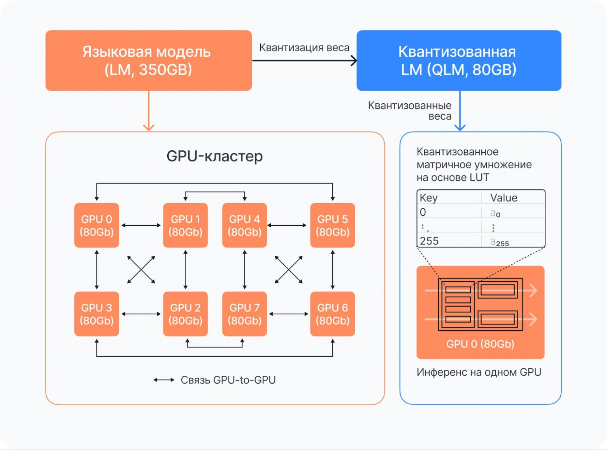
Слева — развёртывание LLM на 8 GPU с модельным параллелизмом: модель в исходной точности не влезает в одну карту, и её приходится резать между устройствами. Справа — та же модель с квантизованными весами на одном GPU. Помимо экономии денег исчезают межкарточные пересылки, которые сами по себе съедают заметную часть времени. Когда квантовать?
Готовить сеть к квантизации можно в процессе обучения — такой подход называется Quantize-Aware.
Для этого в нейросеть встраивают специальные блоки и в ходе обучения эмулируют квантизованный inference: модель на каждом forward-проходе видит те же искажения, что будут в бою.
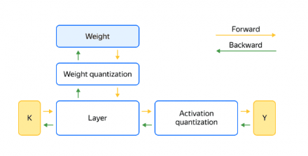
Схема Quantize-Aware-обучения: в граф вставлены блоки квантизации/деквантизации, поэтому прямой проход идёт через огрублённые значения, а веса в памяти остаются вещественными и обновляются градиентом как обычно. В слоях хранят исходные, вещественные веса. Перед выполнением forward-pass их заменяют квантизованными по формулам из предыдущего вопроса.
Операция округления недифференцируема, поэтому градиенты прокидывают напрямую в вещественный тензор, минуя её (это и есть Straight-Through Estimator). Аналогично для квантизации активаций используют специальные блоки.
Смысл всей конструкции: модель на обучении чувствует ошибку квантизации и может подстроить веса так, чтобы после округления они всё равно давали правильный ответ. PTQ такой возможности лишена принципиально — она работает с уже готовыми весами.
Quantize-Aware-обучение сложнее и требует больше вычислительных ресурсов, но на выходе получается модель, «приспособленная» к работе с квантизованными значениями и потенциально более точная.
Для LLM это, как правило, недоступно: полноценный цикл обучения модели на десятки миллиардов параметров может позволить себе очень небольшое число команд.
В случае Post Training квантуют уже обученную модель.
Для квантизации активаций через сеть дополнительно прогоняют данные из калибровочного датасета, собирают статистику по тензорам и потом квантуют. Если квантовать только веса, данные не нужны вовсе — вся информация уже есть в тензорах.
Способ проще и быстрее, чем Quantize-Aware, но уступает ему в точности. Именно поэтому подавляющее большинство открытых квантованных сборок LLM — это PTQ.
Гранулярность квантизации
Гранулярность — это то, насколько крупными кусками мы квантуем: на какую область тензора приходится одна пара констант
scale/zero-point.Самый плохой вариант — квантовать сразу всю сеть за раз: тогда получится одна общая константа $S$ на всю модель. Результат таких манипуляций почти наверняка окажется неудовлетворительным.
Диапазоны значений в разных слоях различаются на порядки: где-то веса лежат в пределах $\pm 0.05$, где-то доходят до $\pm 5$.
Одна общая константа обязана обслужить самый широкий диапазон. Значит, для слоя с маленькими весами шаг сетки окажется в сто раз крупнее, чем нужно, и все его веса схлопнутся в несколько соседних кодов. Слой фактически превратится в константу.
Можно квантовать тензоры по отдельности — тогда каждый тензор получит свои константы. Можно пойти дальше и внутри каждого тензора квантовать строки или столбцы: у каждой строки (столбца) будет своя константа.
Константы придётся где-то хранить, зато вычисления станут точнее.
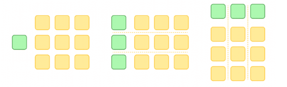
Три уровня: одна пара констант на весь тензор (per-tensor), своя пара на каждую строку (per-row) и своя на каждый столбец (per-channel). Чем мельче область, тем меньше шансов, что один выброс испортит соседей. Можно нарезать тензор на блоки небольшого размера — так получится ещё точнее. Типичный размер блока в современных форматах — 32, 64 или 128 весов подряд.
Именно этот подход позволяет бороться с выбросами в матрицах, о чём мы и поговорим дальше: выброс портит сетку только своего блока из 64 чисел, а остальные миллионы весов остаются нетронутыми.
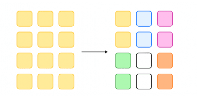
Разбиение тензора на блоки: каждому блоку — своя константа квантизации. Аномальное значение растягивает шаг сетки только внутри собственного блока, а не по всей матрице. Чем крупнее области (грубее гранулярность), тем меньше констант нужно хранить. Чем мельче области, тем ближе результаты квантизованных вычислений к исходным.
Посчитаем накладные расходы на конкретных числах. Пусть блок — 64 веса по 4 бита (32 байта), а на блок хранится один
scaleвfloat16(2 байта). Получается $2/32 = 6.25\%$ переплаты: 16 бит масштаба делятся на 64 веса, то есть по $0.25$ бита на каждый. Фактическая битность выходит не 4.0, а 4.25 бит на вес.При блоке в 32 веса переплата удваивается: те же 16 бит делятся уже на 32 веса, по $0.5$ бита на каждый — это 12.5% и 4.5 бита фактической битности.
Отсюда практическое правило: уменьшать блок стоит ровно до тех пор, пока выигрыш в качестве перевешивает рост фактической битности. Ниже 32 обычно уже не опускаются.
По каким размерностям квантовать?
Здравый смысл говорит, что любой тензор можно квантовать как по столбцам, так и по строкам. Но тут в дело вступает физика вычислений: если нужны эффективные вычисления, появляются жёсткие рамки.
Современные эффективные GEMM-операции (General Matrix Multiply — стандартная процедура матричного умножения) для квантованных матриц ожидают, что константы квантизации относятся к внешним размерностям матриц, то есть не к той размерности, по которой идёт суммирование.
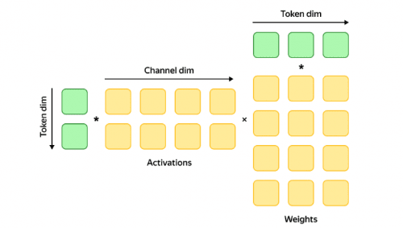
Допустимые размерности для констант квантизации: они должны лежать вдоль внешних осей результирующей матрицы, а не вдоль общей оси, по которой происходит суммирование произведений. Причина сугубо арифметическая, и её легко понять на формуле.
Матричное умножение — это $C_{ij} = \sum_k A_{ik} B_{kj}$. Если масштаб зависит только от $i$ и от $j$, его можно вынести за знак суммы: посчитать всю сумму в целых числах, а в самом конце один раз домножить результат на $s_i \cdot s_j$. Это ровно то, что умеют делать тензорные ядра: копить целочисленную сумму в аккумуляторе и один раз масштабировать её на выходе.
Если же масштаб зависит от $k$ — от той оси, по которой идёт суммирование, — вынести его нельзя: каждое слагаемое надо домножить на свой множитель до сложения. Целочисленный аккумулятор перестаёт работать, и эффективность падает в разы.
Именно поэтому блочная квантизация по $k$ (а она нужна как раз для борьбы с выбросами) требует специальных кернелов — они разбивают сумму на куски и масштабируют каждый кусок отдельно.
Новички выбирают схему квантизации по критерию «где меньше ошибка на весах». Это неверный критерий.
Схема, дающая минимальную ошибку восстановления весов, может оказаться вдвое медленнее из-за отсутствия под неё быстрого кернела, — и тогда вся затея теряет смысл: мы квантовали ради скорости, а получили модель хуже и не быстрее. Всегда проверяйте, что для выбранной комбинации (тип, гранулярность, размерность) существует поддерживаемый ядром движка инференса путь исполнения.
В чём отличие квантизации весов от квантизации активаций?
Веса фиксированы и лежат в файле, поэтому их квантизация не требует никаких данных. Активации зависят от входа и вычисляются заново на каждом запросе, поэтому для выбора их констант нужен калибровочный датасет или расчёт на лету.
Чем статическая квантизация активаций отличается от динамической?
Статическая заранее фиксирует константы по калибровочной выборке — дёшево на инференсе, но константы могут не подойти нетипичному входу. Динамическая считает константы прямо во время прогона по фактическому тензору — точнее, но добавляет проход по данным на каждом шаге.
Что такое Quantize-Aware Training и в чём его преимущество перед PTQ?
QAT эмулирует квантизованный инференс прямо в обучении: forward идёт через огрублённые значения, а градиент прокидывается в вещественные веса через Straight-Through Estimator. Модель успевает подстроиться под искажения, поэтому качество выше, но стоимость — полноценный цикл обучения.
Что такое гранулярность квантизации и как она влияет на точность?
Это размер области, на которую приходится одна пара констант: вся модель, тензор, строка, столбец или блок из 32–128 весов. Чем мельче область, тем меньше вероятность, что выброс испортит соседние веса, и тем выше точность — ценой роста числа хранимых констант.
Сколько «стоит» блочная квантизация в терминах фактической битности?
При блоке в 64 веса по 4 бита (32 байта) и одном
scaleвfloat16(2 байта) накладные расходы составляют 6.25%: 16 бит масштаба на 64 веса дают по $0.25$ бита каждому, то есть фактически 4.25 бита на вес. При блоке в 32 веса переплата удваивается до 12.5% и 4.5 бита.Почему для эффективных GEMM константы должны относиться к внешним размерностям?
Масштаб, зависящий только от внешних осей, выносится за знак суммы: тензорное ядро копит целочисленную сумму и масштабирует результат один раз в конце. Масштаб вдоль суммируемой оси вынести нельзя — каждое слагаемое пришлось бы домножать до сложения, что ломает целочисленный аккумулятор и резко снижает скорость.
-
Типы данных
В квантованных нейросетевых моделях обычно присутствуют два типа данных:
- Quantized type — в этом типе хранят тензоры;
- Computation type — в этом типе проводят вычисления.
Если совсем простыми словами: одно дело — в какой упаковке числа лежат на складе, другое — в какой посуде их смешивают. Это не обязано совпадать.
Причин ровно две, и обе практические.
Первая — железо. Ваше оборудование может не поддерживать операции в хитром quantized type: эффективных кернелов перемножения матриц под него может просто не существовать. Тогда перед вычислениями матрицу приходится конвертировать в computation type.
Вторая — переполнение. Перемножение 8-битных чисел почти наверняка выйдет за границы 8 бит: произведение двух чисел до 127 доходит до 16 129, а после суммирования по тысяче слагаемых — до миллионов. Поэтому аккумулятор берут заведомо более широкий, обычно
int32.Типичный современный сценарий инференса LLM:
- веса хранятся в
int4(quantized type) — это экономит память и трафик шины; - перед матричным умножением они на лету разжимаются в
float16(computation type); - само умножение выполняется в
float16с аккумулятором вfloat32.
Может показаться, что разжатие сводит всю экономию на нет. Нет: выигрыш уже получен на этапе чтения — из памяти прочитали вчетверо меньше байт, а разжатие происходит внутри GPU, где пропускная способность на порядки выше. Именно поэтому weight-only квантизация ускоряет декодинг, хотя арифметика остаётся вещественной.
int16,int8,int4Самые обыкновенные целочисленные типы. Диапазон значений $[-2^{n-1},\ 2^{n-1}-1]$, где $n$ — число бит.
То есть
int8покрывает $[-128, 127]$,int4— $[-8, 7]$,int16— $[-32768, 32767]$. Шаг между соседними значениями всегда равен единице: сетка равномерная по всему диапазону.Схематично
int16устроен так: $1$ бит знака и $15$ бит на значение.Битовое представление int16: старший бит хранит знак, остальные пятнадцать — величину. Чем больше битов, тем больше различимых уровней и тем точнее представлен диапазон.Чем больше битов, тем точнее можно представить диапазон значений.
Это ключевая идея всего вопроса, и она стоит отдельного объяснения.
У целочисленных типов шаг сетки постоянный: между 0 и 1 такое же расстояние, как между 126 и 127. Разрешение одинаково по всему диапазону.
У вещественных типов шаг относительный: они хранят число как «мантисса $\times 2^{\text{экспонента}}$», поэтому вблизи нуля соседние представимые значения отстоят очень близко, а вдали от нуля — очень далеко. Точность у них измеряется не в абсолютных единицах, а в процентах от величины.
Отсюда практический вывод: если значения в тензоре различаются на порядки (а в активациях LLM это норма), вещественный тип справляется гораздо лучше — он не тратит всё разрешение на обслуживание самого большого числа.
float32Вещественный тип
float32описан стандартом IEEE-754. Битовое представление: $1$ бит знака, $8$ — экспоненты, $23$ — мантиссы.$$ V = (-1)^{sign} \cdot 2^{E-127}\left(1+\sum_{i=1}^{23}b_{23-i} 2^{-i}\right) $$
Битовое представление float32: знак, восьмибитная экспонента и двадцатитрёхбитная мантисса.Разберём её по кускам:
- $(-1)^{sign}$ — знак: бит равен 0 $\to$ плюс, 1 $\to$ минус.
- $2^{E-127}$ — экспонента, то есть порядок величины. Вычитание 127 (смещения) нужно, чтобы одним беззнаковым полем кодировать и большие, и очень маленькие числа.
- Скобка $\left(1+\sum b_i 2^{-i}\right)$ — мантисса, число от 1 до 2, задающее точное значение внутри выбранного порядка. Ведущая единица не хранится: она есть всегда, и на ней экономят целый бит.
Проще говоря: экспонента отвечает на вопрос «примерно насколько велико число», мантисса — «а насколько точно».
Чем больше битов выделено под экспоненту, тем больший диапазон значений можно представить. Биты, оставшиеся для мантиссы, отвечают за точность внутри этого диапазона.
Это фиксированный бюджет: увеличивая одно, вы неизбежно уменьшаете другое. Все различия между
float16,bfloat16и TF32 сводятся ровно к тому, как поделён этот бюджет.float16Описан тем же стандартом IEEE-754 в издании 2008 года. Битовое представление: $1$ бит знака, $5$ — экспоненты и $10$ — мантиссы.
Битовое представление float16: всего пять бит экспоненты — отсюда узкий диапазон, но целых десять бит мантиссы дают неплохую точность внутри него.Максимальное представимое значение — $65504$. Из-за этого тензоры активаций легко переполняются: результат уходит в бесконечность, и дальше по сети течёт
NaN.Есть и симметричная беда снизу: очень маленькие градиенты обнуляются (underflow), и обучение останавливается. Именно поэтому при обучении в
float16обязателен loss scaling — лосс искусственно домножают на большую константу, чтобы градиенты вылезли из опасной зоны, а после подсчёта делят обратно. Сbfloat16этот костыль не нужен.bfloat16Специальный формат данных, разработанный Google Brain. Его можно рассматривать как аппроксимацию
float32. Битовое представление: $1$ бит знака, $8$ — экспоненты и $7$ — мантиссы.Битовое представление bfloat16: экспонента такая же, как уfloat32, а мантисса урезана до семи бит. Диапазон сохранён полностью, точность принесена в жертву.Число битов под экспоненту совпадает с представлением
float32. Значит,bfloat16покрывает тот же диапазон значений, пусть и менее точно. Зато можно почти не опасаться переполнений в активациях.Разменяли точность на устойчивость — и для нейросетей это оказался правильный размен: сети хорошо переносят шум в младших разрядах, но категорически не переносят
NaN.Другая приятная особенность
bfloat16— возможность быстро конвертировать значения воfloat32. Магия работает благодаря сходному битовому представлению:bfloat16— это буквально старшие 16 бит отfloat32, поэтому конвертация сводится к дописыванию шестнадцати нулей, без всякой арифметики.К сожалению, пока не всё железо работает с этим типом — особенно мобильное.
TensorFloat32Интересный 19-битный тип данных от NVidia. Поддерживается в архитектурах начиная с NVidia Ampere (A100). Битовое представление: $1$ бит знака, $8$ — экспоненты, $10$ — мантиссы.
Битовое представление TensorFloat32: экспонента взята отfloat32, мантисса — отfloat16. Получается компромисс, живущий только внутри тензорных ядер.Ключевые особенности:
- число битов экспоненты совпадает с
bfloat16, а значит и сfloat32— тот же диапазон, никаких переполнений; - число битов мантиссы совпадает с
float16— точность заметно выше, чем уbfloat16с его семью битами.
По сути TF32 — это «лучшее из обоих»: широкий диапазон плюс приличная мантисса.
Необычный, но точный и эффективный тип. Показывает отличные результаты по производительности и подходит для обучения моделей. Ложка дёгтя — существует только на современных видеокартах NVidia.
Важная деталь: 19 бит — это формат внутри тензорного ядра, а не формат хранения в памяти. Тензоры лежат во
float32, а ядро при умножении само усекает мантиссу до 10 бит. Поэтому TF32 включается одним флагом фреймворка и часто работает «незаметно»: код не меняется, а матричные умножения ускоряются в несколько раз.E4M3иE5M2Новые 8-битные вещественные типы, предложенные NVidia, ARM и Intel в статье FP8 Formats for Deep Learning. Авторы предлагают два варианта:
- E4M3: 1 бит знака, 4 — экспоненты, 3 — мантиссы;
- E5M2: 1 бит знака, 5 — экспоненты, 2 — мантиссы.
Названия читаются буквально:
E— сколько бит экспоненты,M— сколько мантиссы.Разделение труда между прямым и обратным проходом.
E4M3 — больше мантиссы, уже диапазон. Идёт на веса и активации: их величины хорошо ограничены, а точность важна.
E5M2 — больше экспоненты, шире диапазон, но всего два бита точности. Идёт на градиенты: они разбросаны по величине на много порядков, и потерять их из-за переполнения куда страшнее, чем огрубить.
Это ровно тот же выбор «диапазон против точности», что и в паре
float16/bfloat16, только доведённый до восьми бит и разложенный по разным ролям.Эксперименты показывают, что современные LLM и «картиночные» сети можно успешно инферить и даже обучать на таких типах данных. Аппаратная поддержка появилась в NVidia Hopper (H100) и далее.
Существуют и более радикальные идеи 4-битных вещественных значений: E2M1 и E3M0 — они уже входят в стандарт микромасштабируемых форматов (MX) и поддерживаются свежим железом.
NormalFloat4Normal Float 4 (NF4) — интересный пример построения 4-битного типа данных. Эмпирически известно, что веса нейросетей распределены примерно нормально и сконцентрированы около нуля.
Авторы утверждают, что NF4 теоретически оптимален для квантизации значений из нормального распределения $N(0, 1)$ на отрезке $[-1, 1]$. По поводу оптимальности есть и другое мнение, но сути это не меняет.
Ключевая мысль: сетку уровней стоит подгонять под распределение данных, а не размазывать равномерно.
У нормального распределения подавляющая часть массы сосредоточена вблизи нуля. Равномерная сетка
int4тратит одинаковое разрешение и на плотную середину, и на почти пустые хвосты — половина уровней обслуживает несколько процентов весов.NF4 расставляет уровни по квантилям: там, где весов много, уровни идут часто; в хвостах — редко. В результате каждый уровень «отвечает» примерно за одинаковое количество весов, и средняя ошибка округления получается заметно меньше при тех же четырёх битах.
Есть $4$ бита — это $16$ значений. Два уходят на $-1$ и $1$, остаётся $14$. С их помощью представляют квантили $N(0, 1)$ в диапазоне $[-1, 1]$.
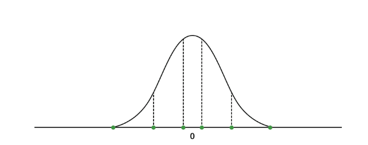
Плотность $N(0,1)$ на отрезке $[-1, 1]$ с уровнями NF4: по краям закреплены точки $-1$ и $1$, а внутренние уровни расставлены по квантилям — гуще там, где плотность выше. Каждый слой нейросети нормируют так, чтобы веса лежали в диапазоне $[-1, 1]$. После этого каждый вес соотносят с ближайшим значением из предварительно рассчитанных квантилей.
На практике нормируют не слой целиком, а блоки по 64 веса, деля их на максимум модуля внутри блока. Это та самая блочная гранулярность из предыдущего вопроса — и именно она защищает NF4 от выбросов.
У описанной схемы есть недостаток: в ней нет точного представления для нуля. Нейросетям точный ноль критически важен — на нём держатся маски внимания, padding и разреженность.
Авторы предлагают красивое решение:
- разбить диапазон $[-1, 1]$ на две части, положительную и отрицательную;
- найти $2^{k-1}$ квантилей слева;
- найти $2^{k-1} + 1$ квантилей справа;
- склеить полученные значения по нулю.
Асимметрия в количестве квантилей нужна ровно для того, чтобы ноль оказался узлом сетки, а не попал между двумя уровнями.
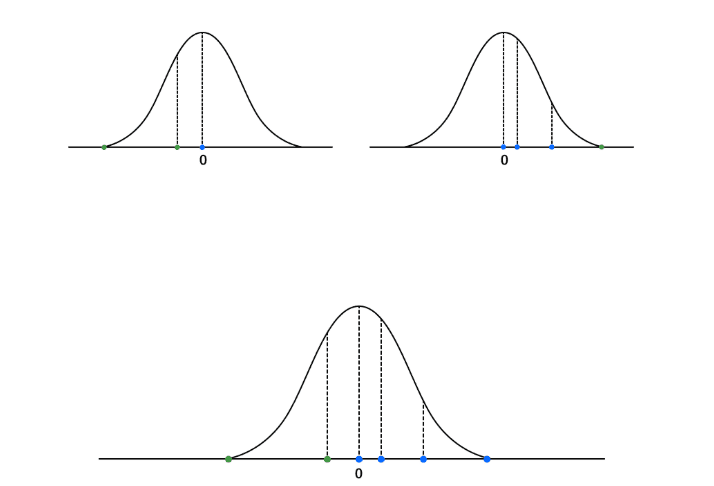
Итоговый набор уровней NF4: слева и справа взято разное число квантилей, благодаря чему ровно один уровень приходится точно на ноль. Чем quantized type отличается от computation type?
Quantized type — формат хранения тензоров (например,
int4). Computation type — формат, в котором фактически выполняются операции (например,float16с аккумуляторомfloat32). Они расходятся из-за отсутствия эффективных кернелов под узкие типы и из-за риска переполнения при накоплении сумм.Если веса всё равно разжимаются перед умножением, откуда берётся ускорение?
Выигрыш возникает на чтении из памяти: прочитать
int4вчетверо дешевле, чемfloat16, а декодинг упирается именно в пропускную способность памяти. Разжатие происходит уже внутри GPU, где скорость доступа на порядки выше.В чём принципиальная разница между целочисленными и вещественными типами?
У целых шаг сетки постоянный по всему диапазону, у вещественных — относительный: точность измеряется в процентах от величины. Поэтому вещественные типы гораздо лучше справляются с данными, значения которых различаются на порядки.
Как в формате float распределены роли экспоненты и мантиссы?
Экспонента задаёт диапазон представимых значений, мантисса — точность внутри него. Бюджет бит фиксирован, поэтому расширение диапазона всегда оплачивается потерей точности.
Почему bfloat16 предпочтительнее float16 при обучении больших моделей?
У
bfloat16восемь бит экспоненты — как уfloat32, — поэтому он покрывает тот же диапазон и практически не переполняется.float16с максимумом 65504 требует loss scaling и склонен к переполнению активаций и обнулению малых градиентов.Зачем нужны два формата FP8 — E4M3 и E5M2?
E4M3 с более длинной мантиссой используют для весов и активаций, где важна точность, а E5M2 с более длинной экспонентой — для градиентов, разбросанных по величине на много порядков, где важнее не потерять значение из-за переполнения.
В чём ключевая идея NF4 и почему он подходит для весов нейросетей?
Уровни квантизации расставляются по квантилям нормального распределения, а не равномерно. Поскольку веса сконцентрированы около нуля, такая сетка гуще там, где весов много, и каждый уровень обслуживает примерно одинаковую долю значений — средняя ошибка округления при тех же четырёх битах оказывается меньше.
Как в NF4 обеспечивается точное представление нуля и почему это важно?
Диапазон делится на положительную и отрицательную части с разным числом квантилей ($2^{k-1}$ и $2^{k-1}+1$), после чего они склеиваются по нулю. Точный ноль необходим для масок внимания, паддинга и разреженности — приближённый ноль ломает эти механизмы.
-
Особенности квантизации
Современные LLM авторегрессионные: они генерируют один токен за раз, и каждый следующий зависит от всех предыдущих.
Неудачная квантизация увеличивает вероятность выбрать не тот токен. А если модель в ходе генерации начала нести не туда, на выходе получится совсем не тот ответ, который нужен пользователю, — и метрики качества, конечно, тоже.
В этом ключевое отличие от классификатора: там огрубление весов слегка сдвигает вероятности одного решения, здесь — запускает цепную реакцию на сотни шагов вперёд.
Узкое место больших авторегрессионных моделей — перекладывание крупных тензоров в памяти видеокарты.
При этом вычислительных ресурсов у современного железа с избытком: пока идёт перекладывание, ядра успевают посчитать что-нибудь полезное. Именно поэтому уменьшение разрядности весов работает — мы сокращаем не количество арифметики, а объём трафика, то есть бьём ровно в узкое место.
Из-за требований к памяти большим и ресурсоёмким моделям нужны эффективные техники квантизации. Quantize-aware-обучение здесь не подходит: полный цикл обучения LLM почти никому не по карману.
Но с ростом числа параметров стандартные техники квантизации перестают работать. При переходе границы примерно в 6.7 миллиардов параметров квантованные модели теряют почти всё качество. Причина — растущее число выбросов в матрицах.
Заметьте, насколько это контринтуитивно: обычно чем больше модель, тем она устойчивее к шуму. Здесь наоборот — деградация наступает резко и именно у больших моделей.
Взглянем ещё раз на пример с квантизацией тензора:
$$ \begin{bmatrix} 0.41 & 0.29 & 0.85\\ 0.25 & 0.33 & 0.53\\ 0.49 & 0.86 & 0.99\\ \end{bmatrix} \to \begin{bmatrix} 53 & 37 & 108\\ 32 & 42 & 68\\ 62 & 109 & 126\\ \end{bmatrix} $$
Что будет, если в исходной матрице появится выброс?
$$ \begin{bmatrix} 0.41 & \textcolor{red}{42} & 0.85\\ 0.25 & 0.33 & 0.53\\ 0.49 & 0.86 & 0.99\\ \end{bmatrix} \to \begin{bmatrix} 1 & 126 & 2\\ 0 & 1 & 1\\ 1 & 2 & 3\\ \end{bmatrix} $$
Веса «склеились» в узкий диапазон и стали неотличимы. Качество потеряно: единственный выброс испортил всю матрицу.
Посмотрим, откуда взялись эти числа.
В первом случае масштаб считался по максимуму $0.99$: $s = 0.99/127 \approx 0.0078$. Все девять чисел распределились по кодам от 32 до 126 — разрешение использовано полностью.
Во втором случае максимум стал $42$, и масштаб вырос до $s = 42/127 \approx 0.33$. Но все «нормальные» числа меньше $0.99$, то есть меньше трёх шагов сетки. После округления восемь из девяти чисел получили коды 0, 1, 2 или 3.
Ключевой вывод: у нас по-прежнему 256 доступных уровней, но 252 из них не используются вообще. Информация уничтожена не нехваткой битов, а неудачным распределением разрешения.
Выбросы составляют всего $0.1$–$1\%$ от всех значений. Первое, что приходит в голову, — просто избавиться от них, например обнулив.
Но это приводит к полной деградации модели, огромным потерям качества и росту перплексии. При этом контрольный эксперимент — зануление случайного подмножества весов того же объёма — качество почти не портит.
Вывод железный: выбросы не шум, а носители существенной части сигнала. Отказаться от них нельзя, их надо как-то аккуратно обработать. Природа выбросов активно исследуется, встречаются и весьма занятные гипотезы на эту тему — например, что выбросы возникают из-за невозможности механизма внимания «ни на что не смотреть».
Чтобы глубже понять проблему, рассмотрим матрицу активаций: по строкам расположены токены, по столбцам — каналы (компоненты вектора представления).
Исследования показывают, что выбросы распределены не случайно, у них есть структура:
- выбросы преимущественно расположены в тензорах активаций, а не весов;
- выбросы сосредоточены в отдельных каналах (столбцах).
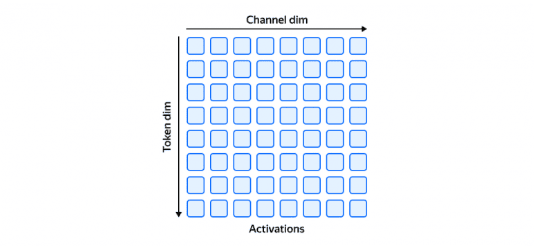
Тензор активаций на выходе слоя: строки — токены, столбцы — каналы скрытого представления. Если в тензоре есть выбросы, они почти наверняка сгруппированы по определённым каналам — то есть вытянуты в вертикальные полосы, а не разбросаны точками.
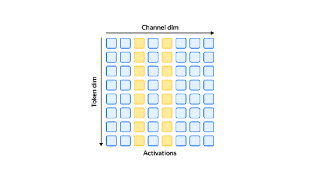
Те же активации с подсвеченными выбросами: аномально большие значения выстраиваются в несколько столбцов и повторяются от токена к токену. Это устойчивая структура, а не случайный шум, — и именно на неё опираются все методы борьбы с выбросами. Важная деталь: эти каналы одни и те же для разных входов. Их можно определить заранее по калибровочной выборке и потом использовать это знание на любом запросе.
Вспомним разные способы квантизации тензоров: по строкам и по колонкам.
Если бы матрицу активаций можно было квантовать по колонкам, проблема решалась бы сама собой: внутри столбца с выбросами лежат значения схожего диапазона, и для них подобрался бы адекватный масштаб. Столбец с большими числами получил бы большой
scale, обычные столбцы — маленький, и никто никому не мешал бы.То есть структурированность выбросов — не проклятие, а подарок: со случайно разбросанными аномалиями бороться было бы нечем.
Как мы обсуждали в вопросе про гранулярность, для эффективных вычислений на инференсе тензоры активаций нужно квантовать по строкам: масштаб обязан относиться к внешней размерности, а не к той, по которой идёт суммирование.
Вот и всё противоречие в одной фразе: математика хочет по столбцам, железо требует по строкам. Все методы из следующих вопросов — LLM.int8, SmoothQuant, AWQ, SpinQuant — это разные способы обойти именно этот конфликт.
Введём обозначение, которое будет встречаться постоянно. Форматы вида W4A4, W4A8 описывают схему квантизации LLM:
- $W$ — Weights, веса модели;
- $A$ — Activations, активации, промежуточные значения при работе модели;
- цифра — количество бит, в которые кодируется число.
Формат Описание Особенности W4A16 Веса в 4 бита, активации во float16Weight-only квантизация. Самый распространённый вариант для LLM: даёт основную экономию памяти и ускорение декодинга, качество почти не страдает. W8A8 Веса и активации в 8 бит Позволяет использовать целочисленные тензорные ядра, ускоряет и prefill тоже. Требует борьбы с выбросами в активациях. W4A8 Веса в 4 бита, активации в 8 бит Сбалансированный вариант: экономия памяти за счёт весов, при этом активации остаются точнее, что даёт лучшее качество. W4A4 Веса и активации в 4 бита Очень компактное представление, модель становится в разы меньше и быстрее, но точность сильно падает. Чаще используется для экспериментов или когда критичны память и скорость. Это главный вывод всего вопроса, и его стоит проговорить явно.
Веса статичны: их распределение известно заранее, оно довольно ровное и близкое к нормальному, выбросов почти нет. Их можно квантовать хоть в 4 бита — отсюда популярность W4A16.
Активации зависят от входа, содержат структурные выбросы величиной в десятки раз больше типичного значения, и квантовать их приходится на лету. Именно поэтому в схемах вида W4A16 буква A остаётся шестнадцатибитной, а любая попытка опустить её до 8 или 4 бит немедленно упирается в проблему выбросов.
Почему авторегрессионные LLM особенно чувствительны к ошибкам квантизации?
Каждый следующий токен зависит от всех предыдущих. Одна ошибка выбора токена меняет весь дальнейший контекст, поэтому небольшое искажение вероятностей превращается в качественно неверный ответ, а не в слегка смещённое предсказание.
Почему выбросы в матрицах активаций ломают квантизацию?
Масштаб выбирается по максимуму модуля, поэтому одно аномальное значение растягивает шаг сетки на весь тензор. Остальные числа схлопываются в несколько соседних кодов и становятся неразличимы: большая часть из 256 уровней просто не используется.
Почему нельзя просто занулить выбросы?
Эксперименты показывают полную деградацию модели и резкий рост перплексии, тогда как зануление случайного подмножества весов того же объёма почти не вредит. Значит, выбросы несут существенную часть сигнала, а не являются шумом.
Какова структурная особенность расположения выбросов?
Они сосредоточены в тензорах активаций и группируются в отдельных каналах (столбцах), причём в одних и тех же для разных входов. Эта регулярность позволяет находить проблемные каналы заранее по калибровочной выборке.
В чём заключается конфликт между математикой и железом при квантизации активаций?
По структуре выбросов активации следовало бы квантовать по столбцам — тогда каждый канал получил бы свой адекватный масштаб. Но эффективные GEMM требуют, чтобы константы относились к внешней размерности, то есть к строкам. Все методы борьбы с выбросами обходят именно это противоречие.
Что означают обозначения W4A16, W8A8, W4A4?
Буква W — разрядность весов, A — разрядность активаций. W4A16 — weight-only квантизация, самый ходовой вариант для LLM. W8A8 позволяет считать в целочисленных ядрах, но требует борьбы с выбросами. W4A4 максимально компактен, но сильно теряет в качестве.
Почему активации квантовать сложнее, чем веса?
Веса статичны, их распределение известно заранее и близко к нормальному без выраженных выбросов. Активации зависят от входа, содержат структурные выбросы в десятки раз больше типичных значений и должны квантоваться на лету.
-
LLM.Int8
LLM.int8() — первая работа, в которой проведено серьёзное исследование выбросов. Авторы статьи научились квантовать модели вплоть до 175 миллиардов параметров из привычных 16- или 32-битных вещественных весов в 8-битный целочисленный тип практически без потери качества. Есть и подробный пост в блоге Hugging Face.
Идея в одном предложении: выбросы нужно обрабатывать отдельно, поскольку их совсем немного (0.1–1% значений) и расположены они в отдельных каналах тензоров активаций.
Мы уже знаем, что мешает квантовать активации: несколько каналов с огромными значениями портят масштаб для всех остальных.
Раз этих каналов мало, напрашивается разделение труда: 99% «спокойных» каналов посчитать быстро в int8, а 1% проблемных — честно, в fp16. Дорогой точный путь применяется к крошечной доле данных, поэтому суммарная цена невелика, а качество спасено.
Такой приём называют смешанной точностью (mixed-precision): в одной операции сосуществуют два формата.
Рассмотрим умножение матрицы активаций $X$ на матрицу весов $W$.
Столбцы $X$ делят на две группы: те, что содержат хотя бы один выброс, и те, что не содержат. Определение выброса в разных статьях своё; в этой работе оно предельно простое: выброс — значение, которое по модулю больше 6.
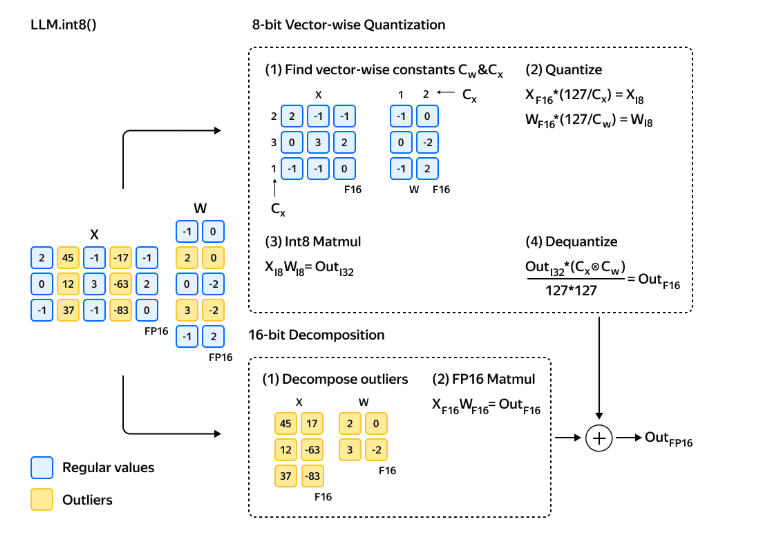
Разбиение матричного умножения: $i$-й столбец активаций $X$ взаимодействует только с $i$-й строкой весов $W$. Поэтому вместе со столбцами-выбросами из $X$ выделяются соответствующие строки $W$, и произведение распадается на две независимые части — маленькую в fp16 и большую в int8. Ключ — в устройстве матричного умножения: $C = XW = \sum_k X_{:,k} W_{k,:}$, то есть результат есть сумма вкладов по общей размерности $k$.
Значит, множество индексов $k$ можно разбить на две группы как угодно, посчитать сумму по каждой отдельно и сложить результаты — ответ будет ровно тем же. Никакого приближения на этом шаге не вносится, разбиение точное.
Отсюда и рецепт: перемножаем каждую группу отдельно и складываем. Бо́льшая часть значений попадает в матрицы без выбросов, которые легко квантуются в 8 бит и считаются эффективными целочисленными операциями. Матрицы с выбросами остаются в исходном 16-битном типе и вычисляются без потери точности.
Авторы выяснили, что выбросы возникают в некоторых фиксированных слоях трансформера — то есть их расположение устойчиво, а не случайно от запуска к запуску.
Важное уточнение по природе явления: определяющим фактором оказывается не сам размер модели, а падающая перплексия — метрика того, насколько хорошо модель предсказывает текст. Выбросы появляются по мере того, как модель становится по-настоящему хороша; размер параметров тут скорее следствие, чем причина. Практически это выглядит как резкий фазовый переход около 6.7B параметров.
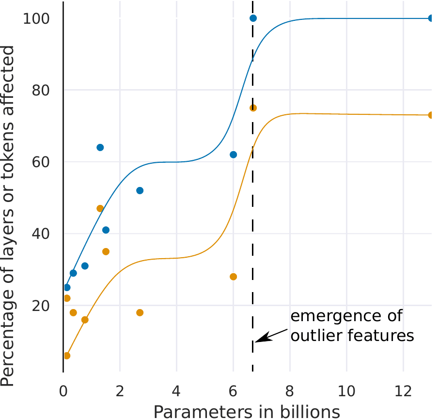
Замер из статьи LLM.int8(): обе оси линейные, по горизонтали размер модели в миллиардах параметров (от 0.1 до 13), по вертикали доля затронутых выбросами слоёв и позиций в процентах. Точки — измерения на конкретных моделях, кривые — сглаживание сплайном. Синяя линия это доля слоёв, в которых есть выбросы: она поднимается от 25% у самых маленьких моделей до полки около 60% в районе 3-4B, потом резко идёт вверх, а замер на 6.7B даёт уже 100%. Оранжевая линия — доля позиций последовательности, затронутых выбросами: та же ступенька, но с полки около 33% на полку около 73%. Чёрный пунктир на 6.7B с подписью emergence of outlier features отмечает точку перехода — ровно там, где обычные методы квантизации начинают резко ломаться. Обратите внимание на ширину ступеньки: между 4B и 8B доли меняются больше, чем на всём предыдущем участке. Устойчивость расположения выбросов даёт огромное практическое преимущество.
Если бы проблемные каналы менялись от запроса к запросу, их пришлось бы искать на каждом прогоне: пробегать по всему тензору, сравнивать с порогом, перекомпоновывать матрицы — накладные расходы съели бы весь выигрыш.
А так набор «горячих» каналов определяется один раз по калибровке, разбиение матриц фиксируется на этапе загрузки модели, и на инференсе остаётся просто выполнить два готовых умножения.
За выросшую точность квантизации приходится платить производительностью. Замеры авторов показывают ухудшение скорости инференса на BLOOM-176B на 15–23% против 16-битного дефолта. Для маленьких моделей вроде T5-3B замедление ещё сильнее.
Причины замедления понятны: два умножения вместо одного, перекомпоновка тензоров, невозможность использовать один быстрый кернел на всю операцию.
Поэтому запомните формулировку цели: LLM.int8() нужен не для ускорения, а для снижения требований к памяти при сохранении качества. Он отвечает на вопрос «как вообще запустить эту модель на имеющемся железе», а не «как обслужить больше запросов в секунду».
LLM.int8() исторически важен как доказательство: большие модели квантуются в int8 без деградации, если аккуратно обойтись с выбросами.
Но выбранный им путь — обход проблемы через смешанную точность. Следующие методы идут дальше и пытаются устранить саму проблему: SmoothQuant переносит трудность с активаций на веса, SpinQuant поворотами «размазывает» выбросы по каналам, GPTQ и AWQ работают на стороне весов. Именно поэтому в продовых движках сегодня чаще встречаются они, а LLM.int8() остаётся удобным и надёжным базовым вариантом в
bitsandbytes.Какую проблему решает LLM.int8() и в чём его основная идея?
Проблему выбросов в активациях, из-за которых модели больше ~6.7B параметров теряют качество при обычной int8-квантизации. Идея — смешанная точность: каналы с выбросами считать в fp16, все остальные квантовать в int8.
Как именно LLM.int8() разбивает матричное умножение?
Столбцы матрицы активаций делятся на содержащие выбросы (по модулю больше 6) и остальные; соответственно делятся строки матрицы весов. Каждая группа умножается отдельно, результаты складываются.
Почему такое разбиение не вносит ошибки?
Матричное умножение — сумма вкладов по общей размерности. Разбиение множества индексов на две группы с последующим сложением частичных сумм даёт математически тот же результат; приближение возникает только от квантизации одной из групп.
Почему выбросы встречаются в фиксированных каналах и почему это удобно?
Они возникают в определённых слоях трансформера и в устойчивых каналах, причём появление связано с падением перплексии модели. Устойчивость позволяет определить проблемные каналы один раз по калибровке, а не искать их на каждом запросе.
Каков практический компромисс при использовании LLM.int8()?
Метод сохраняет качество и вдвое сокращает память под веса, но замедляет инференс на 15–23% для крупных моделей из-за двух отдельных умножений и перекомпоновки тензоров. Цель метода — уместить модель в память, а не ускорить её.
Почему сегодня чаще применяют другие методы?
LLM.int8() обходит проблему выбросов, но не устраняет её, и платит за это скоростью. SmoothQuant, SpinQuant, GPTQ и AWQ атакуют саму причину — перераспределяют сложность между весами и активациями, — поэтому дают и качество, и ускорение.
-
SmoothQuant
С весами всё просто: их распределение почти наверняка близко к нормальному, сосредоточено около нуля и не содержит выбросов.
С активациями дело обстоит сложнее. Выбросы сосредоточены именно в них и могут отличаться от остальных значений в 100 и более раз. Эффективность квантизации таких тензоров крайне низкая.
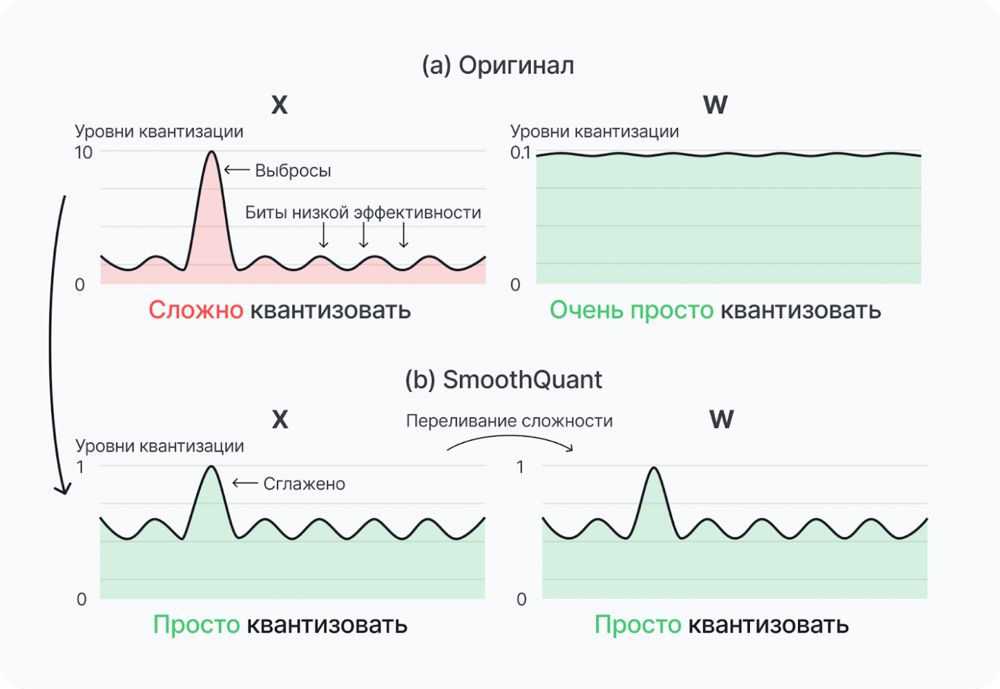
Слева — исходная ситуация: веса ровные и легко квантуются, активации утыканы выбросами. Справа — после сглаживания: часть «трудности» перенесена из активаций в веса, и оба тензора стали умеренно сложными вместо одного невозможного и одного лёгкого. SmoothQuant не пытается обойти выбросы, как LLM.int8(), — он переносит трудность из активаций в веса.
Если у активаций «слишком большой» столбец, поделим его на константу, а соответствующую строку весов на ту же константу домножим. Произведение матриц не изменится, но выброс из активаций исчезнет — уедет в веса, которым такая нагрузка по силам.
Английское smooth здесь означает именно «сгладить»: сделать распределение по каналам более ровным, без торчащих пиков.
Всё держится на одном школьном свойстве матричного умножения: $i$-й столбец первой матрицы участвует в результате только вместе с $i$-й строкой второй.
Формально: $(XW)_{ab} = \sum_j X_{aj} W_{jb}$. В каждом слагаемом индекс $j$ один и тот же у обоих множителей. Значит, если поделить $X_{aj}$ на $s_j$ и умножить $W_{jb}$ на $s_j$, произведение $\frac{X_{aj}}{s_j}\cdot s_j W_{jb} = X_{aj}W_{jb}$ останется прежним.
Никакого приближения на этом шаге нет — результат точно тот же. Мы просто переставили множитель из одной матрицы в другую перед тем, как обе квантовать.
Прогоним батчи тестового датасета через обученную модель и посмотрим на активации:
$$ x=\begin{bmatrix} 1 & -16 & 2 &6 \\ -2 & 8 & 1 &-9 \\ \end{bmatrix}, \quad w=\begin{bmatrix} 2 & 1 & -2 \\ 1 & -1 & -1 \\ 1 & -1 & -2 \\ -1 & -1 & 1 \\ \end{bmatrix} $$
Рассмотрим $j$-й столбец матрицы активаций и найдём максимум по модулю $\max|X_{:, j}|$. Разделим на него всю колонку:
$$ \begin{bmatrix} 1 & \boxed{-16} & 2 &6 \\ -2 & 8 & 1 &-9 \\ \end{bmatrix} \to \begin{bmatrix} 1 & \textcolor{red}{-16} & 2 &6 \\ -2 & \textcolor{red}{8} & 1 &-9 \\ \end{bmatrix} \to \begin{bmatrix} 1 & \textcolor{red}{-1} & 2 &6 \\ -2 & \textcolor{red}{0.5} & 1 &-9 \\ \end{bmatrix} $$
Соответствующую строку весов $W_{j,:}$ умножим на то же число:
$$ \begin{bmatrix} 2 & 1 & -2 \\ 1 & -1 & -1 \\ 1 & -1 & -2 \\ -1 & -1 & 1 \\ \end{bmatrix} \to \begin{bmatrix} 2 & 1 & -2 \\ \textcolor{red}{16} & \textcolor{red}{-16} & \textcolor{red}{-16} \\ 1 & -1 & -2 \\ -1 & -1 & 1 \\ \end{bmatrix} $$
Выброс из активаций исчез, произведение $XW$ не изменилось.
Посмотрите на результат внимательно. Активации теперь идеальны, зато в весах появилась строка со значениями $\pm 16$ на фоне остальных $\pm 2$.
Мы не решили задачу, а перенесли её целиком из одной матрицы в другую: теперь невозможно квантовать веса. Это классическая ошибка «вылечили симптом, создав такой же симптом рядом».
Правильный ход — не перекладывать всю нагрузку, а распределить её между двумя матрицами.
Введём коэффициент $s_j$ как взвешенное отношение максимумов соответствующих столбца активаций и строки весов:
$$ s_j=\frac {\max ( |X_{:,j}| ) ^\alpha } {\max(|W_{j,:}|)^{1 - \alpha}} $$
Здесь $\max(|X_{:,j}|)$ — максимум по модулю в $j$-м столбце активаций (собирается на калибровке), $\max(|W_{j,:}|)$ — максимум по модулю в $j$-й строке весов, а $\alpha$ — гиперпараметр, определяющий, какая доля нагрузки уходит в веса. Авторы рекомендуют брать $\alpha = 0.5$.
Показатель $\alpha$ — это «ручка громкости» переливания:
- $\alpha = 1$ — тогда $s_j = \max(|X_{:,j}|)$: весь выброс уходит в веса, активации становятся идеальными (ровно случай из шага 1 выше);
- $\alpha = 0$ — тогда $s_j = 1/\max(|W_{j,:}|)$: зеркальный случай, вся трудность переезжает в активации, а идеальными становятся веса;
- $\alpha = 0.5$ — среднее геометрическое: обе матрицы получают примерно одинаковую «трудность».
Обратите внимание, что $\alpha = 0$ — это не «ничего не делать»: бездействию соответствовало бы $s_j = 1$, а не нулевой показатель степени. Оба края шкалы одинаково плохи, просто ломают разные матрицы.
Именно $0.5$ работает по умолчанию, потому что при равном делении максимум после сглаживания у обеих матриц оказывается порядка $\sqrt{\max|X|\cdot\max|W|}$ — то есть ни одна не остаётся с невозможным диапазоном.
Возьмём те же матрицы и посчитаем $s_j$ честно:
$$ x=\begin{bmatrix} 1 & \boxed{-16} & 2 &6 \\ -2 & 8 & 1 &-9 \\ \end{bmatrix}, w=\begin{bmatrix} 2 & \boxed{1} & -2 \\ 1 & -1 & -1 \\ 1 & -1 & -2 \\ -1 & -1 & 1 \\ \end{bmatrix} $$
Для $j=2$ (второй столбец активаций): максимум активаций $16$, максимум весов в соответствующей строке $1$, поэтому
$$s_2=\frac{16^{0.5}}{1^{1-0.5}}=\sqrt{16}=4$$
Делим второй столбец активаций на $4$:
$$ x=\begin{bmatrix} 1 & \textcolor{red}{-16} & 2 &6 \\ -2 & \textcolor{red}{8} & 1 &-9 \\ \end{bmatrix} \to \begin{bmatrix} 1 & \textcolor{red}{-4} & 2 &6 \\ -2 & \textcolor{red}{2} & 1 &-9 \\ \end{bmatrix} $$
И умножаем вторую строку весов на $4$:
$$ w=\begin{bmatrix} 2 & 1 & -2 \\ \textcolor{red}{1} & \textcolor{red}{-1} & \textcolor{red}{-1} \\ 1 & -1 & -2 \\ -1 & -1 & 1 \\ \end{bmatrix} \to \begin{bmatrix} 2 & 1 & -2 \\ \textcolor{red}{4} & \textcolor{red}{-4} & \textcolor{red}{-4} \\ 1 & -1 & -2 \\ -1 & -1 & 1 \\ \end{bmatrix} $$
Проделав это для всех колонок, получаем сглаженные и готовые к квантизации матрицы.
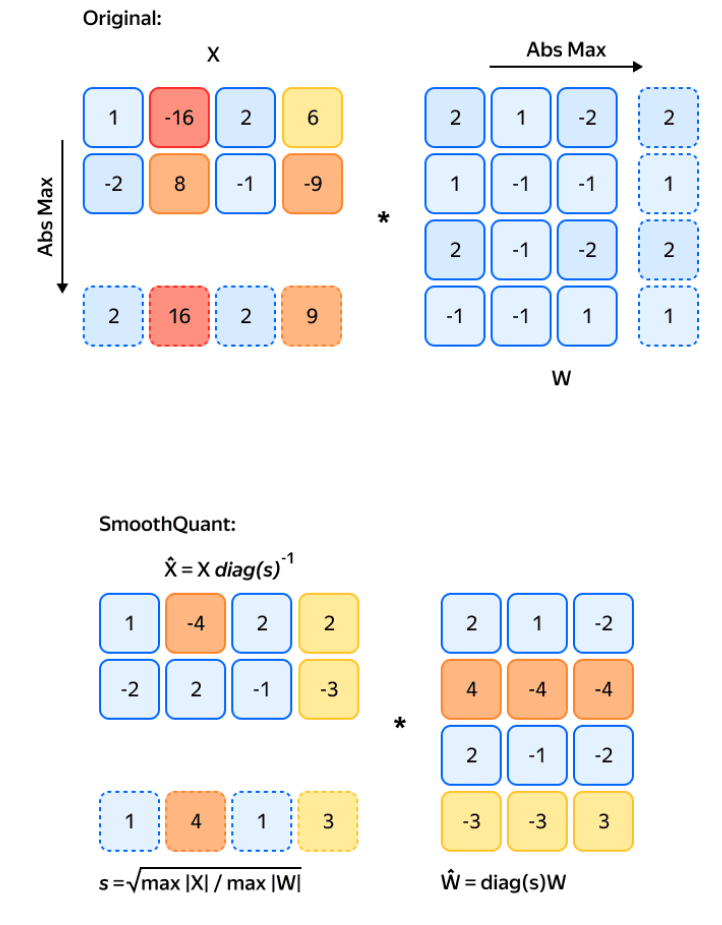
Обе матрицы после сглаживания: максимум активаций упал с 16 до 4, максимум весов вырос с 2 до 4. Ни один тензор больше не содержит значения, выпадающего из общего диапазона на порядок, — оба стали пригодны для int8. Посчитаем коэффициенты для всех четырёх столбцов: $s_1 = \sqrt{2}/\sqrt{2} = 1$, $s_2 = \sqrt{16}/\sqrt{1} = 4$, $s_3 = \sqrt{2}/\sqrt{2} = 1$, $s_4 = \sqrt{9}/\sqrt{1} = 3$.
До сглаживания: максимум активаций — 16 при максимуме весов всего 2. Одна матрица «тяжёлая», вторая «лёгкая», и квантовать первую в 8 бит уже проблематично.
После сглаживания активации становятся
$$ x' = \begin{bmatrix} 1 & -4 & 2 & 2\\ -2 & 2 & 1 & -3\\ \end{bmatrix} $$
с максимумом 4, и у весов максимум тоже становится равен 4. Ни в одной из матриц не осталось значения, выпадающего из общего масштаба.
Именно это и означает «сгладить»: суммарная трудность никуда не делась, но она распределена так, что каждая из двух квантизаций выполнима, тогда как раньше одна была невыполнима вовсе.
Прелесть метода в том, что все операции проходят офлайн, до запуска модели.
Константы $s_j$ запекаются прямо в матрицы весов — умножение строки на число делается один раз при подготовке модели. А деление активаций на $s_j$ запекается в предыдущий слой: его выходные веса заранее делятся на нужные константы, и активации приходят в следующий слой уже сглаженными.
В результате во время инференса нет вообще никаких дополнительных операций. Это принципиальное отличие от LLM.int8(), который платит за качество замедлением на каждом прогоне.
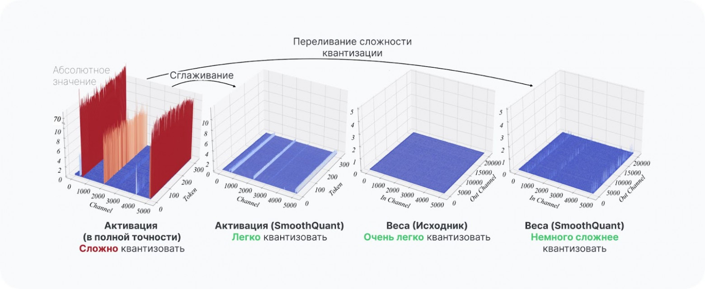
Реальный тензор активаций LLM: по одним и тем же каналам тянутся высокие «гребни» — те самые выбросы, на порядки превышающие типичные значения соседей. Каналы устойчивы, но конкретная высота гребня зависит от входа, поэтому просто вырезать их нельзя — нужно сглаживание. 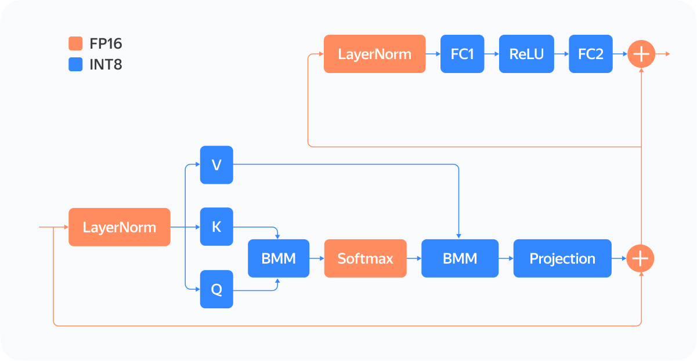
Схема встраивания: во все матричные перемножения сети (синие блоки, кроме нелинейностей) добавляется «переливание сложности» — домножение активаций на диагональную матрицу $\mathrm{diag}(1/s)$ и весов на $\mathrm{diag}(s)$. При перемножении внутри линейного слоя эти диагональные матрицы взаимно сокращаются, поэтому результат не меняется. Формально сглаживание — это вставка пары взаимно обратных диагональных матриц: $XW = (X\,\mathrm{diag}(s)^{-1})(\mathrm{diag}(s)\,W)$. Диагональная матрица здесь просто удобная запись того, что каждый столбец делится на свою константу.
Значения диагонали берутся по формуле выше, из максимумов активаций (с калибровки) и весов. Гиперпараметр $\alpha$ подбирают перебором либо оставляют равным $0.5$.
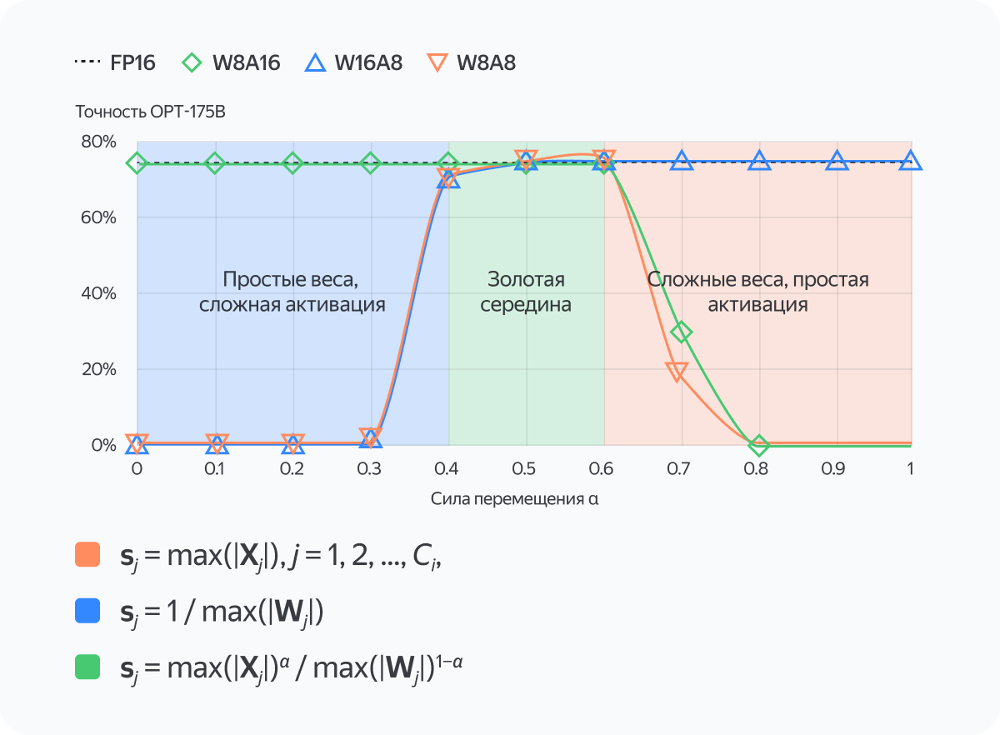
Зависимость сложности квантизации от $\alpha$: при малых значениях трудность остаётся в активациях, при больших — переезжает в веса, и обе крайности плохи. Между ними есть широкая зона, где обе матрицы квантуются нормально, — в неё и попадает значение 0.5. Правило простое: если $\alpha$ слишком велика — трудно квантовать веса, если слишком мала — активации. Оптимум лежит посередине и, к счастью, довольно пологий: точная настройка обычно не требуется.
Просадки по качеству есть, но небольшие. В таблицах ниже приведены замеры на довольно архаичных моделях; замеры на свежих моделях вроде YandexGPT показывают, что качество сохраняется и там.
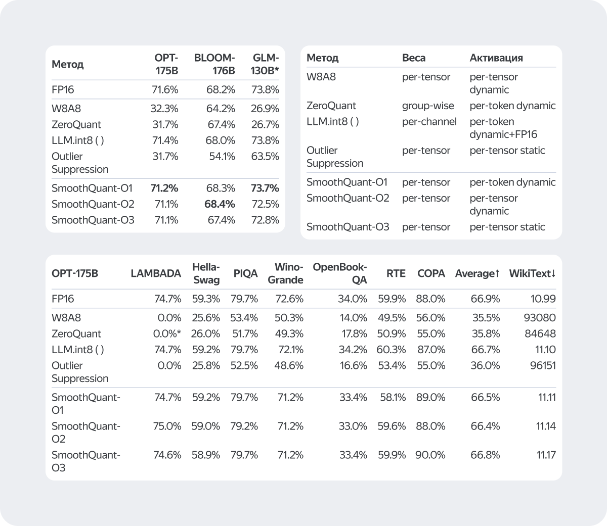
Сравнение точности на стандартных бенчмарках: SmoothQuant держится вплотную к fp16-базовой линии, тогда как наивная int8-квантизация без сглаживания проваливается. 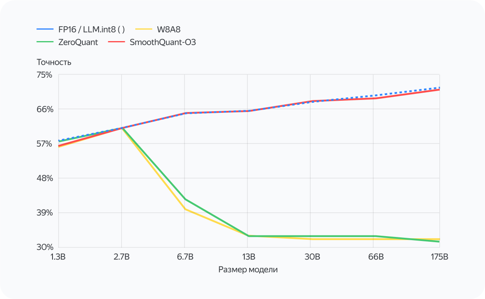
Перплексия при разных схемах квантизации: чем ниже, тем лучше. Наивная W8A8 деградирует тем сильнее, чем больше модель, а SmoothQuant остаётся рядом с fp16 на всех размерах. Существует несколько модификаций SmoothQuant, проиндексированных как O1, O2 и O3. Они различаются гранулярностью квантизации:
- O1 — веса per-tensor, активации per-token (своя константа на каждый токен). Метаинформации больше, поэтому квантовать проще и точнее, но и накладных расходов больше.
- O2 и O3 — всё более грубые схемы вплоть до статических per-tensor констант: быстрее, но менее точно.
В Яндексе провели замеры и выяснили: несмотря на меньшую скорость, O1 — самая качественная версия и единственная, способная квантовать без потерь. В остальных версиях потери существенные. Позже это подтвердили и авторы статьи из Корнеллского университета.
Прирост по скорости составляет до $\times 1.3$ для генерации и $\times 1.5$ для классификации по latency, а также $\times 2$ по памяти.
Это очень хороший результат, и вот почему: обычно, чтобы получить выигрыш по latency, приходится писать много низкоуровневого кода — задача нетривиальная даже для CUDA-разработчиков. SmoothQuant же позволяет использовать стандартные int8-кернелы, потому что после сглаживания обе матрицы квантуются обычным способом; вся хитрость уже отработана офлайн.
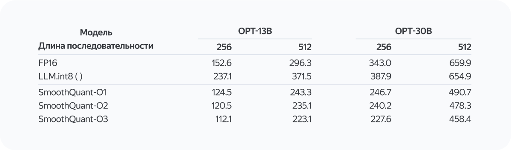
Задержка GPU (мс) для разных схем квантизации при размере батча 4: чем грубее схема, тем ниже задержка. SmoothQuant быстрее fp16 во всех настройках, тогда как LLM.int8() в большинстве случаев наоборот — медленнее. 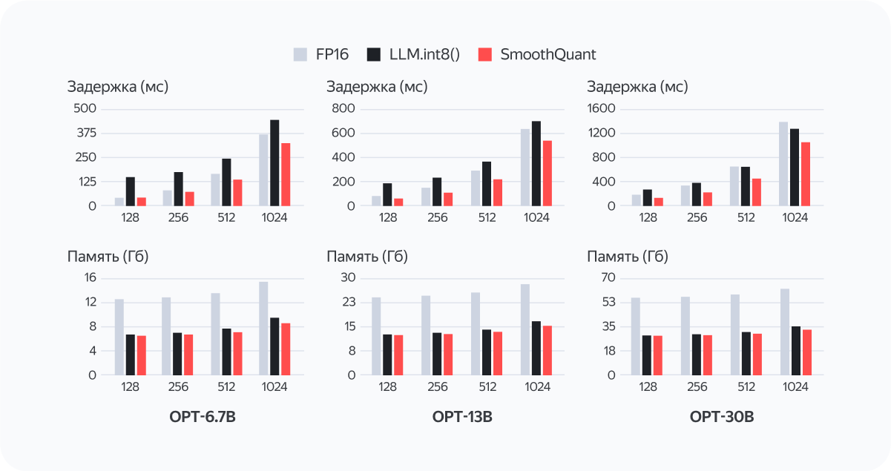
SmoothQuant-O3 на PyTorch для OPT-моделей на одной NVIDIA A100-80GB: ускорение $\times 1.51$ и экономия памяти $\times 1.96$, в то время как LLM.int8() в большинстве конфигураций замедляет инференс. Эти два метода решают разные задачи, хотя оба про выбросы.
- LLM.int8() обходит выбросы смешанной точностью: качество сохраняется, память экономится, но инференс замедляется на 15–23%.
- SmoothQuant устраняет выбросы преобразованием, эквивалентным по результату: квантуется всё однородно, поэтому работают быстрые целочисленные кернелы, и инференс ускоряется.
Отсюда практический вывод: если цель — просто уместить модель в память, годится любой; если нужен ещё и рост RPS, LLM.int8() не подходит принципиально.
Какова ключевая идея SmoothQuant?
Трудность квантизации «переливается» из активаций в веса: $j$-й столбец активаций делится на $s_j$, а $j$-я строка весов на него же умножается. Произведение $XW$ при этом не меняется, а распределение значений в обоих тензорах становится ровнее.
Почему такое преобразование не меняет результат матричного умножения?
В каждом слагаемом $(XW)_{ab} = \sum_j X_{aj}W_{jb}$ индекс $j$ общий для обоих множителей, поэтому делитель и множитель $s_j$ взаимно сокращаются. Формально это вставка пары взаимно обратных диагональных матриц.
Как выбирается коэффициент сглаживания и что делает $\alpha$?
$s_j = \max(|X_{:,j}|)^\alpha / \max(|W_{j,:}|)^{1-\alpha}$. При $\alpha = 1$ вся нагрузка уходит в веса, при $\alpha = 0$ — зеркально, вся в активации (это не бездействие: бездействию отвечало бы $s_j = 1$). При $\alpha = 0.5$ трудность делится примерно поровну — это и есть рекомендованное значение.
Почему нельзя просто перенести весь выброс в веса?
Тогда веса получают строку со значениями на порядок больше остальных, и квантовать становится невозможно уже их. Проблема не решается, а переезжает — поэтому нагрузку распределяют между обеими матрицами.
Почему константы $s_j$ не добавляют накладных расходов на инференсе?
Все вычисления делаются офлайн: множители запекаются в матрицу весов, а делители — в выходные веса предыдущего слоя. Во время работы модели никаких дополнительных операций не выполняется.
Какой версией SmoothQuant пользоваться и какой прирост она даёт?
O1 (веса per-tensor, активации per-token) — единственная версия, квантующая практически без потерь; O2 и O3 быстрее, но заметно теряют качество. Общий прирост метода — до $\times 1.3$ по latency при генерации, $\times 1.5$ при классификации и $\times 2$ по памяти.
Чем SmoothQuant принципиально выгоднее LLM.int8()?
LLM.int8() обходит выбросы смешанной точностью и потому замедляет инференс на 15–23%. SmoothQuant устраняет выбросы эквивалентным преобразованием, после которого всё квантуется однородно и работают стандартные быстрые int8-кернелы, — поэтому он не только экономит память, но и ускоряет модель.
-
SpinQuant
Помимо 8-битных матричных перемножений на части современных видеокарт доступны и INT4-перемножения с итоговым ускорением до 4 раз по сравнению с FP16.
Любопытная деталь: в самых последних поколениях Hopper и Blackwell такие матричные перемножения недоступны, зато они есть в более ранних Ampere и Ada Lovelace. Производители сделали ставку на FP8 и FP4 вместо INT4, так что «более старое железо умеет то, чего не умеет новое» — редкий, но реальный случай.
Напомним расшифровку: W4A4 — это 4 бита и на веса, и на активации.
Веса в 4 бита современные методы упаковывают уверенно. А вот активации в 4 бита — это всего 16 уровней на тензор, в котором выбросы отличаются от типичных значений в сотню раз. При таком бюджете один выброс не просто ухудшает точность — он гарантированно уничтожает всю информацию в тензоре.
Поэтому W4A4-квантизация вполне может пригодиться в продакшене при условии приемлемых потерь качества — и именно в этом разбирались авторы SpinQuant.
Ключевая идея статьи — научиться бороться с выбросами в активациях ещё лучше, чем SmoothQuant.
Авторы используют тот же общий механизм: домножить активации на некоторую матрицу, а веса — на обратную к ней, чтобы произведение не изменилось. Но, в отличие от SmoothQuant, где эта матрица диагональная (просто масштабирование по каналам), в SpinQuant берутся матрицы поворота (rotation matrices).
Это главная мысль вопроса, и её стоит понять на геометрическом уровне.
Диагональная матрица (SmoothQuant) умеет только растягивать и сжимать оси по отдельности. Если выброс сидит в канале №137, она может уменьшить весь этот канал — но выброс останется в том же канале, просто станет меньше вместе со всей полезной информацией рядом.
Матрица поворота перемешивает оси между собой: новая координата — это линейная комбинация всех старых. Большое значение из канала №137 размазывается по всем каналам сразу, превращаясь в множество средних по величине значений.
Аналогия: у вас есть стакан с ложкой соли (выброс) и ведро воды (обычные значения). SmoothQuant может отлить часть из стакана; SpinQuant высыпает соль в ведро и размешивает — концентрация везде становится умеренной. Выброса как явления больше нет.
Матрица поворота $R$ ортогональна: $R^{\top}R = I$, то есть обратная к ней — это просто транспонированная.
Отсюда очевидное тождество: $XW = (XR)(R^{\top}W)$. Мы повернули активации на $R$, веса — на $R^{\top}$, произведение осталось прежним. При этом поворот не меняет длины векторов — он только перераспределяет величину между координатами, что нам и нужно.
Ровно то же свойство, что у SmoothQuant («вставили пару взаимно обратных матриц»), только вместо диагональной матрицы взята ортогональная — куда более богатый класс преобразований.
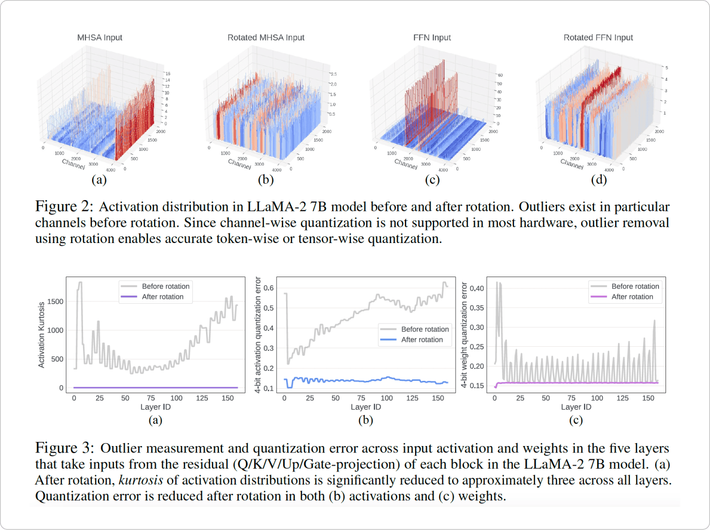
Распределения активаций по слоям до и после вращений: пилообразные пики выбросов исчезают, значения выравниваются по каналам. Ошибка 4-битной квантизации весов и активаций падает в 2–4 раза и становится стабильной по всем слоям — эффект виден и в блоках MHSA (Multi-head Self-attention), и в FFN (Feed Forward Network). Обратите внимание на слово «стабильной»: важно не только то, что ошибка стала меньше, но и то, что она перестала скакать от слоя к слою. Именно неравномерность обычно и убивает качество: один провалившийся слой портит всю сеть.
В SpinQuant для квантизации всех линейных слоёв (кроме
down_projв FFN) и KV-кэша используются обучаемые матрицы вращений, которые мержатся с весами линейных слоёв и не добавляют никакого оверхеда на инференсе.Это и есть научная новизна работы: раньше в таких случаях брали случайные матрицы Адамара — фиксированные ортогональные матрицы из $\pm 1$, удобные тем, что умножение на них считается быстро. Но они выбираются вслепую, без учёта того, как именно устроены выбросы в конкретной модели, и потому дают заметно большую потерю качества.
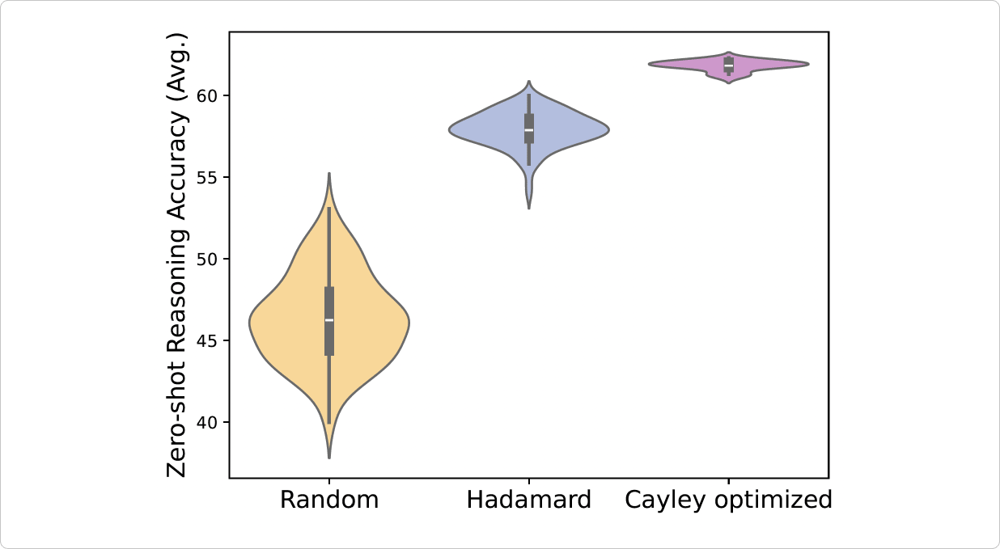
Слева — вращения матрицами Адамара, справа — обучаемые вращения. У обучаемых распределение активаций заметно ровнее и без остаточных пиков: матрица подобрана под конкретную модель, а не взята из общего семейства. Может смутить сама постановка: что значит обучать матрицу поворота?
Оптимизация идёт не по обучающей задаче модели, а по ошибке квантизации: подбирается такой поворот, при котором квантованная сеть максимально близка к исходной на калибровочной выборке. Веса модели при этом не меняются.
Техническая тонкость: параметры должны оставаться ортогональной матрицей на каждом шаге, иначе тождество $XW = (XR)(R^{\top}W)$ сломается. Для этого оптимизацию ведут на многообразии Штифеля — то есть градиентный шаг делают так, чтобы результат снова оказался ортогональной матрицей. Стоит это недорого: обучается лишь несколько небольших матриц, а не миллиарды весов.
Как и в SmoothQuant, весь фокус происходит офлайн: обученные матрицы вращения мержатся в веса линейных слоёв ещё до деплоя.
Веса лежат в памяти уже повёрнутыми, активации приходят повёрнутыми из предыдущего слоя, и на инференсе никакого дополнительного умножения не выполняется. Свойство «нулевого оверхеда» — общая черта всего этого семейства методов, и именно она делает их пригодными для продакшена.
На диаграмме показана общая схема встраивания операций вращения в слой трансформера: какие матрицы куда вставляются и где они сокращаются. Стоит разобрать её внимательно — по ней видно, что вращения расставлены парами и всегда «схлопываются» внутри линейных слоёв.
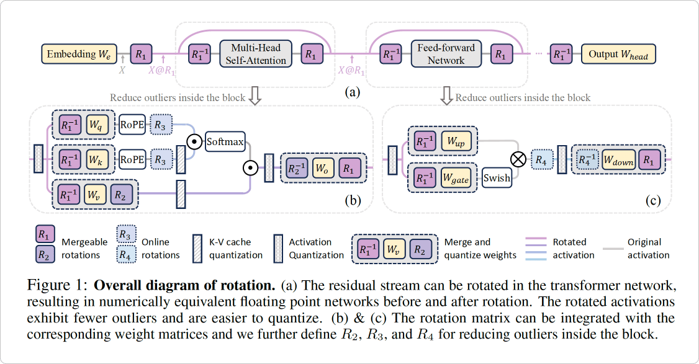
Общая диаграмма интеграции операций вращения в слой трансформера: пары $R$ и $R^{\top}$ расставлены так, чтобы взаимно сокращаться внутри линейных блоков, — поэтому выход слоя математически не меняется, а распределения промежуточных активаций становятся пригодными для 4-битной квантизации. Подробнее о матрицах вращения можно почитать в самой статье, в её работе-конкуренте QuaRot и у их предшественников.
Три оговорки, о которых стоит помнить.
- Не везде помогает.
down_projв FFN из схемы исключён — там вращение упирается в нелинейность, через которую его нельзя протащить, сохранив эквивалентность. - Нужна калибровка и обучение. В отличие от SmoothQuant, где константы считаются формулой, здесь требуется отдельная оптимизационная процедура, пусть и недорогая.
- Нужен подходящий GPU. Весь смысл W4A4 — в аппаратных INT4-ядрах. На железе без них квантизация активаций до 4 бит не даст обещанного ускорения, и овчинка не стоит выделки.
Какова цель SpinQuant и чем он отличается от SmoothQuant?
Цель — сделать возможной W4A4-квантизацию. Как и SmoothQuant, метод вставляет пару взаимно обратных матриц вокруг матричного умножения, но использует ортогональные матрицы вращения вместо диагонального масштабирования.
Почему поворот эффективнее диагонального масштабирования?
Диагональная матрица может лишь уменьшить канал с выбросом целиком, вместе с полезным сигналом. Поворот перемешивает каналы, размазывая большое значение по всем координатам, поэтому выброс как явление исчезает, а не просто уменьшается.
Почему вращения не меняют результат вычислений?
Матрица вращения ортогональна: $R^{\top}R = I$. Поэтому $XW = (XR)(R^{\top}W)$ — активации и веса поворачиваются на взаимно обратные матрицы, и произведение остаётся прежним, а длины векторов сохраняются.
Почему обучаемые матрицы вращения лучше случайных матриц Адамара?
Адамаровы матрицы фиксированы и выбираются без учёта структуры выбросов конкретной модели, поэтому дают заметно большую потерю качества. Обучаемые вращения подбираются под модель по калибровочной выборке и почти полностью выравнивают распределения активаций.
Что именно оптимизируется при обучении матриц вращения?
Минимизируется ошибка квантизации на калибровочных данных, а не исходная задача модели; веса модели при этом не меняются. Оптимизация ведётся на многообразии ортогональных матриц, чтобы после каждого шага сохранялось свойство $R^{\top}R = I$.
Как вращения интегрируются без накладных расходов на инференсе?
Обученные матрицы мержатся в веса линейных слоёв до деплоя: веса хранятся уже повёрнутыми, а активации приходят повёрнутыми из предыдущего слоя. Во время работы модели дополнительных умножений не выполняется.
Для каких архитектур GPU актуальна W4A4-квантизация?
Для GPU с аппаратной поддержкой INT4-перемножений — Ampere и Ada Lovelace. В более новых Hopper и Blackwell таких операций нет, там ставка сделана на форматы FP8 и FP4.
- Не везде помогает.
-
GPTQ
Возможно, округление к ближайшему целому — неоптимальный подход? Ведь на самом деле мы хотим найти такую квантованную матрицу весов $\hat{W}$, чтобы после перемножения на матрицу активаций $X$ получить максимально близкий к исходному результат:
$$ \hat{W}X \approx WX, $$
или, что то же самое,
$$ \|\hat{W}X - WX\|_2^2 \to \min_{\hat{W}} $$
Тонкость здесь принципиальная, и её легко пропустить.
Обычное округление минимизирует ошибку в весах: $\|\hat W - W\|$. GPTQ минимизирует ошибку на выходе слоя: $\|\hat W X - W X\|$. Это не одно и то же.
Почему второе правильнее: вес, который всегда умножается на близкие к нулю активации, почти не влияет на результат — его можно округлить как угодно грубо. А вес, умножаемый на большие активации, обязан быть точным. Наивное округление об этом не знает и тратит одинаковую заботу на важные и неважные веса.
Отсюда и роль калибровочных данных: без них мы не знаем, какие активации приходят на слой, и не можем отличить важные веса от неважных.
Пусть слой считает $y = w_1 x_1 + w_2 x_2$, веса $w_1 = w_2 = 0.5$, и мы обязаны округлить оба до $0$ или $1$.
На калибровке выяснилось, что $x_1$ в среднем равен $0.01$, а $x_2$ — $10$.
- Ошибка на $w_1$ стоит $0.5 \times 0.01 = 0.005$ на выходе — практически бесплатно.
- Ошибка на $w_2$ стоит $0.5 \times 10 = 5$ — катастрофа.
Значит, $w_1$ можно округлить куда угодно, а вот ошибку от округления $w_2$ надо чем-то скомпенсировать — например, подправив $w_1$ так, чтобы суммарный выход остался прежним. Ровно эту идею — «округлил один вес, компенсируй остальными» — GPTQ и доводит до алгоритма.
В такой постановке задача является NP-трудной: неизвестно, как эффективно найти точное решение.
Расшифруем: количество возможных комбинаций округлений растёт экспоненциально от числа весов ($2^n$ для выбора «вверх или вниз» по каждому), и перебрать их нельзя даже для маленького слоя. Можно попробовать поискать приближение специальными солверами, но для матриц размером в миллионы элементов это тоже нереалистично.
Значит, нужна умная эвристика — и она пришла из совсем другой области, из прунинга 1990-х.
Предыстория: Optimal Brain Damage и Optimal Brain Surgeon
Ключевая идея алгоритма была описана в 1990 году в статье Optimal Brain Damage. Авторы решали задачу прунинга (pruning — «обрезка»): какие веса модели можно занулить, не теряя качества.
Для этого предлагается оценивать «важность» элементов матрицы весов $W$, а наименее важные удалять. Алгоритм:
- Обучаем модель.
- Оцениваем важность каждого веса в нейросети.
- Зануляем наименее важные веса.
- Возвращаемся к первому шагу и дообучаем оставшиеся веса.
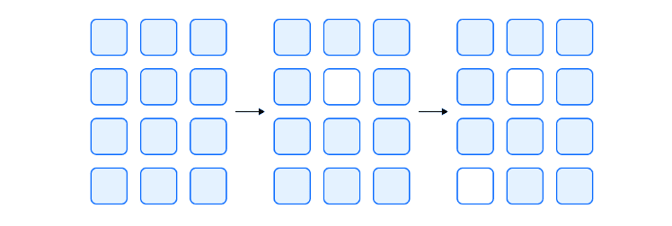
Прунинг: часть связей сети удаляется совсем, оставшиеся дообучаются, чтобы компенсировать потерю. Задача та же, что при квантизации, — внести искажение в веса с минимальным ущербом для выхода. Стоит проговорить, почему статья про прунинг вообще упоминается в разделе про квантизацию.
Обе задачи формулируются одинаково: изменить веса «на что-то более дешёвое» так, чтобы выход модели пострадал минимально. Прунинг заменяет вес нулём, квантизация — ближайшим узлом сетки. Математика «какой вес насколько важен и как компенсировать его порчу» при этом ровно одна и та же.
Поэтому весь аппарат, наработанный для прунинга за тридцать лет, оказалось возможным переиспользовать для квантизации почти без изменений.
В том же ключе идея развивается дальше: выходит статья Optimal Brain Surgeon, где авторы предлагают оценивать важность весов через инвертированный гессиан.
Главное достижение — качественный результат без дообучения сети в процессе: вместо шага «дообучим оставшиеся веса» ошибка компенсируется аналитически, одной формулой.
Гессиан — матрица вторых производных функции потерь по весам. Простыми словами: она описывает кривизну — насколько резко растёт ошибка, если чуть-чуть подвинуть каждый вес и каждую пару весов вместе.
Зачем это нужно:
- Диагональ гессиана говорит, какие веса «чувствительные»: сдвинешь на чуть-чуть — ошибка взлетит. Это и есть мера важности.
- Внедиагональные элементы говорят, какие веса связаны друг с другом. Именно они позволяют компенсировать ошибку: испортив один вес, мы знаем, как подвинуть соседние, чтобы выход слоя вернулся к прежнему.
Обратный (инвертированный) гессиан появляется потому, что нас интересует не «как ошибка растёт от сдвига весов», а обратный вопрос — «какой сдвиг весов нужен, чтобы скомпенсировать заданную ошибку».
Хорошая новость для практики: при цели вида $\|\hat WX - WX\|_2^2$ гессиан считается просто как $H = 2XX^{\top}$ — из одних лишь калибровочных активаций, без всякого обратного прохода по сети.
Наши дни: статья Optimal Brain Quantization (OBQ) расширяет OBS на задачу квантизации.
Рецепт: определить важность весов и квантовать их в порядке от наименее важных к более важным, каждый раз компенсируя внесённую ошибку оставшимися (ещё не квантованными) весами. Авторы нашли способ делать эту процедуру заметно эффективнее.
Производительности хватает на квантизацию ResNet или простых BERT-моделей. Но для LLM алгоритм всё равно слишком тяжёл.
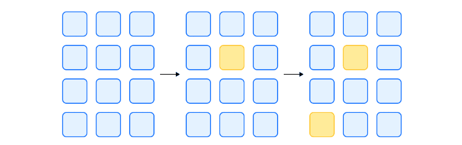
Квантизация с компенсацией: вес округляется до узла сетки, а возникшая ошибка перераспределяется между оставшимися весами, чтобы выход слоя остался прежним. Дело в стоимости обновления гессиана.
OBQ обрабатывает веса по одному и после каждого пересчитывает обратный гессиан, потому что порядок обработки у каждой строки свой. Для матрицы размера $d\times d$ это даёт сложность порядка $O(d^4)$ — приемлемо для слоёв ResNet и совершенно неподъёмно для LLM, где $d$ измеряется тысячами, а слоёв сотни.
Собственно GPTQ
Авторы GPTQ научились решать ту же задачу быстро: модель на 176 миллиардов параметров квантуется в 3–4 бита за несколько часов на одной A100.
Разница в производительности с OBQ — на несколько порядков, при практически том же качестве.
Важно понимать, что веса квантуются не по одному, как в OBQ, а по столбцам — один столбец за раз.
Ключевое наблюдение авторов: порядок «от наименее важного к более важному» даёт выигрыш, но не обязателен. Если обрабатывать столбцы просто слева направо и одинаково для всех строк матрицы, качество почти не страдает — зато обратный гессиан можно посчитать один раз на всю матрицу, а не заново для каждой строки.
Это и убирает лишний множитель $d$ из сложности. Плюс два инженерных приёма: обновления копятся блоками по 128 столбцов (лучше используется кэш GPU), а для численной устойчивости к диагонали гессиана добавляется небольшой демпфирующий член — без него разложение Холецкого разваливается на плохо обусловленных матрицах.
Для одного линейного слоя:
- Прогнать калибровочные данные (обычно 128 текстовых фрагментов) и накопить $H = 2XX^{\top}$.
- Идти по столбцам слева направо. Текущий столбец квантовать обычным округлением к узлу сетки.
- Посчитать внесённую ошибку и распределить её по всем ещё не обработанным столбцам справа, подправив их вещественные значения.
- Перейти к следующему столбцу — он уже приходит «подправленным» с учётом всех предыдущих ошибок.
Смысл шага 3 в том, что каждая последующая порция весов заранее компенсирует накопленный ущерб. Именно поэтому GPTQ выигрывает у наивного округления: он не борется с ошибкой, а перекладывает её туда, где она ещё может быть исправлена.
Сейчас это далеко не SOTA, но один из самых популярных методов квантизации в индустрии — во многом благодаря зрелым реализациям и широкой поддержке в движках инференса.
GPTQ предполагает хорошую квантизацию только весов в 4 бита, оставляя активации в 16 битах, — то есть это схема W4A16. Никакой борьбы с выбросами в активациях он не ведёт и не пытается: он про другое.
- Нужны калибровочные данные, и они влияют на результат. Гессиан считается по активациям, поэтому нерепрезентативная выборка даст неверные оценки важности. Стандарт — 128 фрагментов из корпуса, близкого к целевому домену.
- Возможно переобучение под калибровку. Слишком маленькая или узкая выборка приводит к тому, что модель хорошо считает именно её и хуже работает на всём остальном.
- Только веса. Ускорение приходит от сокращения трафика чтения весов, то есть на декодинге. Prefill длинного контекста GPTQ практически не ускоряет.
Какую задачу решает GPTQ и чем она отличается от наивного округления?
GPTQ ищет квантованную матрицу $\hat{W}$, минимизирующую ошибку на выходе слоя $\|\hat{W}X - WX\|_2^2$, а не ошибку в самих весах. Это учитывает, что веса, умножаемые на большие активации, важнее весов, умножаемых на близкие к нулю.
Почему точное решение этой задачи NP-трудно?
Число комбинаций округлений растёт экспоненциально от числа весов, поэтому перебор невозможен даже для небольшого слоя, а для матриц с миллионами элементов не работают и универсальные солверы.
Откуда пришла идея GPTQ и что общего у прунинга с квантизацией?
Из Optimal Brain Damage (1990) и Optimal Brain Surgeon (1992), развитых в Optimal Brain Quantization. Обе задачи — прунинг и квантизация — сводятся к одному: испортить веса «дешёвым» способом с минимальным ущербом для выхода, поэтому аппарат оценки важности переиспользуется без изменений.
Зачем в этих методах гессиан и почему обратный?
Гессиан — матрица вторых производных лосса по весам, то есть кривизна. Его диагональ показывает важность отдельных весов, внедиагональные элементы — связи между ними, позволяющие компенсировать внесённую ошибку. Обратный гессиан отвечает на вопрос «какой сдвиг весов нужен для компенсации заданной ошибки». Для цели $\|\hat WX-WX\|^2$ он считается просто из калибровочных активаций как $H = 2XX^{\top}$.
Как GPTQ ускорил процедуру по сравнению с OBQ?
OBQ обрабатывает веса по одному, пересчитывая обратный гессиан для каждой строки. GPTQ фиксирует общий порядок обработки — по столбцам слева направо, одинаково для всех строк, — поэтому гессиан считается один раз на матрицу. Вместе с блочными обновлениями и демпфированием это позволяет квантовать модель на 176B параметров за несколько часов на одной A100.
Что делает GPTQ с ошибкой округления на каждом шаге?
Распределяет её по ещё не обработанным столбцам справа, подправляя их вещественные значения. Каждый следующий блок весов заранее компенсирует накопленный ущерб, поэтому итоговый выход слоя оказывается заметно ближе к исходному, чем при независимом округлении.
Что квантует GPTQ и каковы его практические ограничения?
Только веса, в 4 бита, при активациях в 16 битах (схема W4A16). Результат зависит от калибровочной выборки и может под неё переобучиться, а ускорение достигается на декодинге за счёт меньшего чтения весов; prefill длинного контекста метод почти не ускоряет.
-
GGML
GGML (Georgi Gerganov Machine Learning) — C-библиотека для машинного обучения, разработанная для квантизации моделей Llama так, чтобы они могли работать на CPU. Библиотека позволяет сохранять квантованные модели в бинарном формате GGML, пригодном для запуска на широком спектре железа.
Если совсем простыми словами: это способ упаковать большую модель в один файл и запустить её на обычном ноутбуке без видеокарты.
Все методы до этого (GPTQ, AWQ, SmoothQuant) оптимизировали инференс на GPU в дата-центре: там борются за RPS, за загрузку тензорных ядер, за пропускную способность HBM.
GGML решает принципиально другую задачу — запуск на потребительском железе: ноутбук, мини-ПК, телефон, Raspberry Pi. Там нет видеокарты вовсе, зато есть 8–32 ГБ обычной оперативной памяти и несколько ядер CPU.
Отсюда и другие приоритеты: не «сколько запросов в секунду», а «влезет ли вообще и будет ли отвечать со скоростью чтения». И другие технические решения: ставка на очень низкую битность, на компактные блоки и на SIMD-инструкции процессора вместо CUDA-ядер.
Квантизация в GGML реализована через систему k-quant. Веса модели разбиваются на блоки по 32, причём на каждый блок подбирается свой коэффициент масштабирования, рассчитываемый по максимальному по модулю весу блока.
Это ровно та блочная гранулярность, о которой шла речь в вопросе про сценарии квантизации: выброс портит сетку только внутри своих 32 чисел и не задевает остальную матрицу.
В зависимости от выбранного метода квантизации (quant-method) наиболее важные веса могут квантоваться с более высокой точностью, а остальные — с меньшей:
- метод
q2_k: самые большие веса становятся 4-битными числами, оставшиеся — 2-битными; - методы
q5_0иq8_0делают все веса соответственно 5-битными и 8-битными целыми числами; - полный список способов квантизации можно увидеть на карточках моделей в официальном репозитории.
Так что «сколько бит» в GGML — не одно число, а схема: разные части модели могут жить в разной точности.
Названия сборок на первый взгляд выглядят шифром, но расшифровываются просто:
q— quantized, квантованная сборка;- цифра — сколько бит на вес в среднем (2, 3, 4, 5, 6, 8);
_0/_1— старые схемы: симметричная (толькоscale) и аффинная (scaleплюсzero-point);_K— новая k-quant схема с двухуровневым масштабированием: масштабы самих блоков тоже квантуются, что экономит метаданные;_S/_M/_L— small / medium / large: сколько именно слоёв оставлено в повышенной точности.
Практическое правило сообщества:
q4_K_M— золотая середина. Она даёт примерно 4.5 бита на вес, почти не теряет качества и помещается там, гдеq8_0уже не влезает.Модель на 7 млрд параметров:
float16— около 14 ГБ, на ноутбуке с 16 ГБ ОЗУ уже не запустится (нужна ещё память под систему и KV-кэш);q8_0— около 7 ГБ, влезет впритык;q4_K_M— около 4 ГБ, работает комфортно и оставляет место под длинный контекст;q2_k— около 2.8 ГБ, влезет куда угодно, но качество заметно проседает.
Именно поэтому квантизация для CPU-сценария не «оптимизация», а условие существования: без неё локального запуска просто нет.
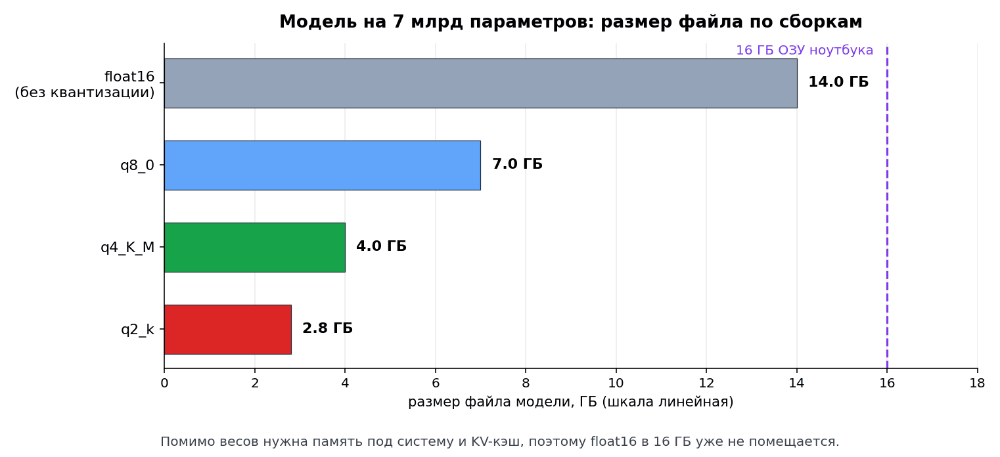
Те же четыре цифры из примера выше, но в масштабе: шкала линейная, длина столбика прямо пропорциональна размеру файла. Фиолетовый пунктир — 16 ГБ ОЗУ ноутбука. Видно, что серый float16(14 ГБ) формально помещается под пунктиром, но запаса под систему и KV-кэш не остаётся, а зелёныйq4_K_M(4 ГБ) занимает меньше трети памяти и оставляет место под длинный контекст. Разница междуq4_K_Mи краснымq2_k— всего 1.2 ГБ, ради которых качество проседает заметно сильнее, чем при переходе сq8_0наq4_K_M.Соблазн взять самую компактную сборку велик, но деградация нелинейна.
Переход с 8 бит на 5 и даже на 4 обычно почти незаметен на глаз. А вот на 3 и особенно на 2 битах модель начинает заметно тупеть: путается в длинных рассуждениях, хуже следует инструкциям, чаще уходит в повторы. Причём стандартные метрики вроде перплексии проседают куда мягче, чем реальное качество ответов, — по ним легко себя обмануть.
Общая рекомендация: лучше взять меньшую модель в
q4_K_M, чем большую вq2_k, если обе влезают в вашу память.Про разработчика библиотеки можно почитать здесь и в этом хабро-посте.
История показательная: проект начинался как личный эксперимент «запустить Llama на MacBook» и вырос в де-факто стандарт локального инференса LLM, на котором сегодня держится всё сообщество self-hosted моделей.
Что такое GGML и для чего он создан?
C-библиотека для квантизации и запуска языковых моделей (изначально Llama) на CPU. Позволяет сохранять квантованные модели в бинарном формате, пригодном для широкого спектра потребительского железа.
Чем задача GGML отличается от задач GPTQ и SmoothQuant?
Те оптимизируют инференс на GPU в дата-центре, борясь за RPS и загрузку тензорных ядер. GGML обеспечивает сам факт запуска модели на устройстве без видеокарты, где ограничением служат объём ОЗУ и вычислительные возможности CPU.
Как устроена система k-quant?
Веса разбиваются на блоки по 32 элемента, и для каждого блока подбирается свой масштаб по максимуму модуля внутри блока. Такая блочная гранулярность локализует влияние выбросов, а наиболее важные веса могут храниться в повышенной точности.
Чем отличаются методы
q2_kиq8_0?q2_kхранит самые крупные веса в 4 битах, а остальные в 2 — максимальная компактность ценой качества.q8_0квантует все веса в 8 бит: точнее, но втрое объёмнее.Как читаются имена сборок вроде
q4_K_M?q— квантованная сборка, цифра — среднее число бит на вес,_K— k-quant схема с квантованием самих масштабов,_S/_M/_L— сколько слоёв оставлено в повышенной точности.q4_K_Mсчитается практическим оптимумом качества и размера.Почему не стоит гнаться за самой низкой битностью?
Деградация нелинейна: до 4–5 бит она почти незаметна, а на 2–3 битах модель начинает путаться в рассуждениях и хуже следовать инструкциям. При этом перплексия проседает мягче реального качества, поэтому по ней легко себя обмануть. Меньшая модель в
q4_K_Mобычно лучше большой вq2_k.
- метод
-
GGUF
GGUF (GPT-Generated Unified Format) — преемник GGML. Он убирает ограничения предшественника и позволяет квантовать не только Llama, но и другие модели. Формат расширяемый: он поддерживает интеграцию новых функций, сохраняя совместимость со старыми моделями.
Если совсем простыми словами: GGML — это библиотека и её формат файла, а GGUF — переработанный формат файла, устроенный так, чтобы его не приходилось ломать при каждом обновлении.
Проблема GGML-файлов была не в качестве квантизации, а в организации данных.
Файл фактически хранил только тензоры, а всё остальное — какая это архитектура, какой токенизатор, какие спецтокены, какие параметры RoPE — приходилось знать заранее или задавать флагами при запуске. Как следствие:
- новая архитектура требовала правок в загрузчике;
- любое изменение набора метаданных ломало совместимость со старыми файлами;
- пользователь легко запускал модель с неверными параметрами и получал мусор на выходе, не понимая причины.
GGUF — это самодостаточный контейнер: в одном файле лежат и веса, и полное описание модели.
- Метаданные хранятся в виде пар «ключ — значение» произвольных типов. Новое поле можно добавить, ничего не сломав: старый загрузчик его просто не заметит.
- В метаданные входит вся конфигурация архитектуры, встроенный токенизатор со словарём и спецтокенами, шаблон чата и параметры квантизации.
- Тензоры хранятся так, чтобы файл можно было отобразить в память (mmap) и читать слои по мере надобности, а не грузить целиком в ОЗУ.
Отсюда практическое следствие, которое и сделало формат стандартом: скачанный
.gguf— это один файл, который просто работает, без сопутствующихconfig.json,tokenizer.jsonи подбора флагов.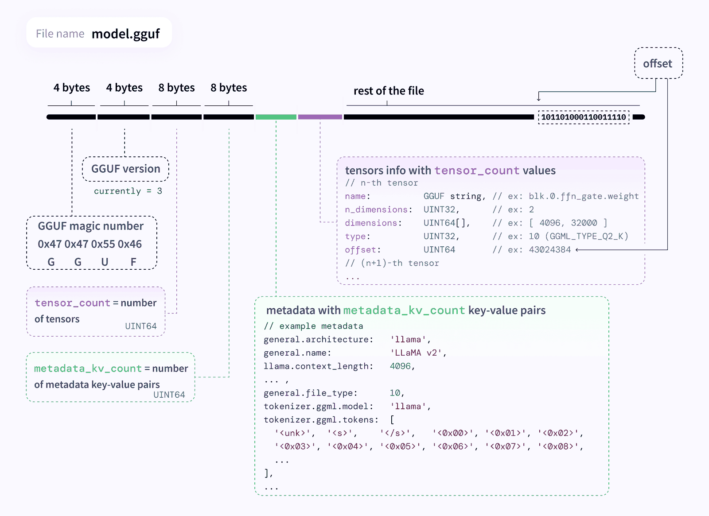
Схема раскладки байтов в файле model.ggufиз документации Hugging Face. Чёрная горизонтальная лента — это сам файл слева направо: сначала 4 байта магического числаGGUF(0x47 0x47 0x55 0x46), затем 4 байта версии формата (сейчас 3), затем два поля по 8 байт —tensor_countиmetadata_kv_count. Дальше идут два блока переменной длины: сначала зелёный — метаданные парами «ключ — значение», среди которыхgeneral.architecture,llama.context_lengthи весь встроенный токенизаторtokenizer.ggml.tokens; затем сиреневый — описания тензоров (имя, размерность, тип вродеGGML_TYPE_Q2_Kи смещение). Остаток файла — сырые веса, и полеoffsetиз описания тензора указывает прямо в него: именно поэтому файл можно читать через mmap, не загружая целиком.Для запуска моделей GGML или GGUF используется библиотека llama.cpp, написанная на C/C++ (разработчик тот же — Георги Герганов). Она умеет читать файлы форматов
.ggmlи.ggufи позволяет запускать такие модели на CPU без необходимости в GPU.Важное уточнение: «без необходимости» не значит «только на CPU». Современная llama.cpp умеет выгружать часть слоёв на видеокарту (параметр числа offload-слоёв), поддерживает CUDA, Metal, Vulkan и ROCm. Типичный домашний сценарий — половина слоёв в видеопамяти, половина в ОЗУ: так запускаются модели, которые целиком в видеокарту не помещаются.
Пользователь скачивает с Hugging Face один файл вида
model-7b-q4_K_M.ggufразмером около 4 ГБ и запускает его — из терминала, из десктопного приложения вроде LM Studio или через Ollama (обе построены поверх llama.cpp).Никакой установки PyTorch, CUDA-драйверов и подбора версий библиотек не требуется. Именно эта простота, а не рекордные метрики, сделала GGUF де-факто стандартом локального запуска LLM.
Полезно сравнить с другим распространённым форматом — safetensors из экосистемы Hugging Face.
- safetensors хранит только тензоры и минимальный заголовок. Всё остальное — архитектура, токенизатор, шаблон чата — лежит рядом отдельными файлами (
config.json,tokenizer.json), а загружает всё это Python-кодtransformers. - GGUF складывает то же самое в один файл и рассчитан на загрузку из C/C++ без Python вообще.
Разница вытекает из сценария. Safetensors живёт в мире, где рядом всегда есть полноценное окружение с PyTorch. GGUF создан для мира, где такого окружения нет и быть не должно: приложение на C++, мобильное устройство, один исполняемый файл.
- «GGUF — это метод квантизации». Нет, это формат файла. Метод квантизации задаётся суффиксом сборки (
q4_K_M,q8_0и так далее), и в GGUF-контейнер можно положить даже неквантованные веса вfloat16. - «GGUF быстрее GPTQ / AWQ». Некорректное сравнение: GPTQ и AWQ — это способы подобрать квантованные веса для GPU-инференса, GGUF — способ хранить модель для запуска в llama.cpp. Они решают разные задачи, и на серверном GPU специализированные форматы движков (vLLM, TensorRT-LLM) будут заметно быстрее.
- «Раз файл 4 ГБ, хватит 4 ГБ памяти». Не хватит: помимо весов нужна память под KV-кэш, который растёт с длиной контекста и на длинных диалогах вполне может добавить ещё несколько гигабайт.
Чем GGUF отличается от GGML?
GGUF — переработанный формат-преемник: он поддерживает произвольные архитектуры, а не только Llama, хранит метаданные в расширяемом виде «ключ — значение» и сохраняет совместимость при добавлении новых полей.
Что именно лежит внутри GGUF-файла?
Веса модели плюс полное её описание: конфигурация архитектуры, встроенный токенизатор со словарём и спецтокенами, шаблон чата и параметры квантизации. Файл самодостаточен и приспособлен к чтению через отображение в память.
Почему расширяемость формата так важна?
Она позволяет добавлять поддержку новых архитектур и функций, не ломая уже выпущенные файлы: незнакомые ключи метаданных старый загрузчик просто игнорирует, вместо того чтобы отказываться читать файл.
Какая библиотека запускает GGML/GGUF-модели и только ли на CPU?
llama.cpp на C/C++. Запуск на CPU возможен без видеокарты вовсе, но библиотека умеет и выгружать часть слоёв на GPU через CUDA, Metal, Vulkan или ROCm — типичный домашний сценарий делит слои между видеопамятью и ОЗУ.
GGUF — это формат или метод квантизации?
Формат хранения. Метод квантизации указывается отдельно в имени сборки (
q4_K_M,q8_0), и в GGUF можно положить даже неквантованные веса. Сравнивать GGUF с GPTQ или AWQ некорректно: они решают разные задачи.В чём практическая ценность GGUF для пользователя?
Один скачанный файл запускается без установки PyTorch, CUDA и подбора флагов — вся необходимая информация уже внутри. Это позволяет запускать большие языковые модели на обычном компьютере, снизив требования к железу за счёт квантизации.
-
AWQ
Классические методы квантизации весов игнорируют данные, которые проходят через модель во время инференса. AWQ (Activation-aware Weight Quantization) учитывает активации — то, какие признаки входа реально приходят на слой и как они распределены.
Благодаря этому метод настраивает точность весов под конкретные особенности входных данных, минимизируя потери качества после квантизации.
Если совсем простыми словами: важность веса определяется не тем, насколько он большой, а тем, на что он умножается.
Интуиция подсказывает, что важнее всего веса с наибольшими значениями. AWQ показывает, что это неверно.
Вклад веса в выход слоя — это произведение $w \cdot x$. Значит, вес имеет значение ровно настолько, насколько велика активация, на которую он умножается. Огромный вес, всегда встречающий почти нулевой вход, не влияет ни на что; скромный вес в канале с большими активациями критичен.
А мы уже знаем из вопроса про выбросы, что активации сосредоточены в немногих устойчивых каналах. Отсюда вывод: важные веса — это веса, стоящие в тех же самых каналах. Их можно найти по калибровочной выборке заранее.
Первый этап AWQ — прогон калибровочного поднабора данных, чтобы собрать статистику активаций и узнать, какие веса реально «работают» на практике. Такие веса называют salient weights («значимые», буквально «выделяющиеся»). Обычно их существенно меньше 1% от общего числа.
Практически критерием служит средняя величина активации по каналу: каналы с наибольшими средними модулями объявляются значимыми, а веса, соответствующие им, — salient.
Самое прямолинейное решение — вообще не квантовать значимые веса:
- значимые веса не подвергаются квантизации и остаются в формате
float16; - остальные веса квантуются в
int3илиint4ради экономии памяти.
Такой подход действительно почти полностью снимает деградацию: самые важные для выхода веса не теряют точности, а всё остальное сжимается. Именно так метод чаще всего и описывают в популярных статьях.
Идея хороша по качеству, но плоха по железу — и это важный сюжет, который часто теряют при пересказе.
Матрица, в которой 1% весов лежит в
float16, а 99% вint4, перестаёт быть однородной. Её нельзя прочитать одной инструкцией, нельзя скормить готовому int4-кернелу, нужны маски и отдельные ветки выполнения. Ровно та же беда, что у LLM.int8(): качество спасли, а скорость потеряли — и это разрушает саму цель квантизации.Поэтому в итоговой версии AWQ значимые веса не выделяются в отдельный формат. Вместо этого применяется другой приём с тем же эффектом.
Решение опирается на ту же идею «вставим пару взаимно обратных множителей», что и SmoothQuant.
Значимый канал весов умножается на коэффициент $s > 1$ перед квантизацией, а соответствующий канал активаций делится на $s$. Произведение не меняется, но важные веса теперь занимают бо́льшую часть диапазона сетки, и относительная ошибка их округления падает примерно в $s$ раз.
Коэффициенты ищут в простом параметрическом виде: $s = (\text{средняя величина активации канала})^{\alpha}$, где единственный параметр $\alpha$ подбирается перебором по калибровочной выборке — минимизируется ошибка выхода слоя.
Итог: все веса остаются в одном формате
int4, работает обычный быстрый кернел, а точность там, где она нужна, повышена.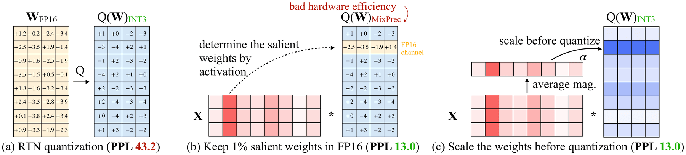
Все три варианта из статьи AWQ на одной картинке: OPT-6.7B, квантизация в INT3 группами по 128. (a) обычное округление RTN — жёлтая матрица float16целиком превращается в синююint3, перплексия 43.2. (b) розово-красная карта активаций $X$ подсказывает, какие веса значимые (чем темнее клетка, тем больше активация), и соответствующая строка весов остаётся жёлтой, то есть вfloat16; перплексия падает до 13.0, но красная надпись сверху предупреждает: смешанная точность плохо ложится на железо. (c) финальный AWQ — по средней величине активации канала (узкая полоска над $X$) подбирается множитель, подписанный на стрелке как $\alpha$, и на него домножается весь канал перед квантизацией — отсюда тёмно-синяя строка в правой матрице. Та же перплексия 13.0 достигается без единогоfloat16-веса.Три метода легко перепутать, поэтому проговорим различия явно.
- SmoothQuant переносит трудность из активаций в веса, чтобы стало возможно квантовать активации (W8A8). Цель — целочисленные вычисления.
- AWQ масштабирует каналы, чтобы точнее квантовать веса (W4A16). Активации остаются в fp16, их квантизация не ставится задачей.
- GPTQ тоже квантует только веса, но идёт другим путём: он не масштабирует, а компенсирует ошибку округления, перераспределяя её по ещё не обработанным столбцам с помощью гессиана.
AWQ проще GPTQ: он не требует ни гессиана, ни обратных матриц — только статистику активаций и перебор одного параметра. При этом качество получается сопоставимым, а устойчивость к смене калибровочного домена — лучше.
AWQ — один из основных форматов квантизации в продовых движках инференса: он поддерживается в vLLM, TensorRT-LLM и через
autoawqв экосистеме Hugging Face.Типичный сценарий: взять модель на 70B в
float16(140 ГБ, нужно несколько карт), квантовать AWQ в 4 бита (около 35 ГБ) и уместить на одну A100-80GB — при этом получив ещё и ускорение генерации, поскольку с каждого шага декодинга читается вчетверо меньше байт.- Качество зависит от калибровки. Статистика активаций собирается на конкретных данных; сильно иной домен в проде даст менее удачные коэффициенты. Стандарт — около 128 фрагментов текста из релевантного корпуса.
- Это W4A16, а не W4A4. Ускорение приходит от сокращения чтения весов и заметно именно на декодинге. Prefill длинного контекста AWQ почти не ускоряет.
- Не панацея на очень низкой битности. На 3 битах и ниже деградация становится ощутимой даже с AWQ; там уже нужны либо более тонкая гранулярность, либо QAT.
Чем AWQ отличается от классических методов квантизации весов?
AWQ учитывает распределение активаций: важность веса определяется не его собственной величиной, а величиной активаций, на которые он умножается. Классические методы смотрят только на сами веса.
Что такое salient weights и как их находят?
Значимые веса — менее 1% от общего числа, стоящие в каналах с наибольшими средними активациями. Их определяют по калибровочной выборке, прогнав через модель несколько сотен фрагментов текста и собрав статистику по каналам.
Почему авторы не стали оставлять salient weights в FP16?
Смешанный формат делает матрицу неоднородной: её нельзя обработать одним быстрым int4-кернелом, нужны маски и отдельные ветки. Скорость теряется так же, как у LLM.int8(), что противоречит цели квантизации.
Каков настоящий механизм AWQ?
Значимые каналы весов умножаются на коэффициент $s > 1$ перед квантизацией, а соответствующие каналы активаций делятся на $s$, поэтому произведение не меняется. Важные веса начинают занимать бо́льшую часть диапазона сетки, и относительная ошибка их округления падает. Все веса при этом остаются в едином формате.
Как подбираются коэффициенты масштабирования?
В параметрическом виде $s = (\text{средняя активация канала})^{\alpha}$, где единственный параметр $\alpha$ находится перебором по калибровочной выборке из условия минимума ошибки на выходе слоя.
Чем AWQ отличается от SmoothQuant и GPTQ?
SmoothQuant переносит трудность из активаций в веса ради квантизации активаций (W8A8). AWQ масштабирует каналы ради более точной квантизации весов (W4A16). GPTQ тоже квантует только веса, но компенсирует ошибку округления через гессиан, а не масштабированием; AWQ проще в реализации и устойчивее к смене калибровочного домена.
Каковы практические ограничения AWQ?
Качество зависит от репрезентативности калибровочных данных; ускорение проявляется на декодинге, а не на prefill, поскольку активации остаются в fp16; на битности ниже четырёх деградация становится заметной даже с AWQ.
- значимые веса не подвергаются квантизации и остаются в формате
-
Speculative Decoding
Speculative Decoding (спекулятивное декодирование) — метод ускорения инференса LLM без потери качества текста.
Используется связка из двух моделей: маленькая («черновая», draft) спекулирует, предлагая несколько токенов наперёд, а большая («целевая», target) проверяет их корректность. Подход работает по принципу «сначала набросай, потом проверь».
Чтобы понять метод, надо вспомнить главный факт из первого блока: декодинг memory-bound.
Прогнать через большую модель один токен и прогнать пять токенов стоит почти одинаково по времени: в обоих случаях надо прочитать из памяти все веса модели целиком, а вычислений и там и там мало. Ядра GPU при генерации одного токена простаивают почти полностью.
Значит, у нас есть бесплатная вычислительная мощность. Осталось придумать, чем её занять — и вот идея: пусть кто-нибудь дешёвый угадает несколько следующих токенов, а большая модель проверит их все разом, за один проход. Проверка нескольких токенов стоит столько же, сколько генерация одного, — а принять мы можем сразу несколько.
Стандартная генерация LLM идёт пошагово: один проход модели — один новый токен. В Speculative Decoding процесс делится на три шага:
- Спекуляция токенов. Черновая модель (например, 3B) генерирует $K$ токенов подряд, вместе с их вероятностями. Это $K$ прогонов, но маленькой модели — дёшево.
- Параллельная верификация. Целевая модель (например, 70B) проверяет все эти токены за один forward pass, получая свои распределения на каждой из позиций.
- Отбор через rejection sampling. Токены принимаются или отбрасываются сравнением вероятностей. Если целевая модель считает предложенный токен менее вероятным, он и всё, что за ним, отбрасывается, а целевая модель предлагает своё исправление.
За один проход большой модели удаётся «принять» несколько токенов, что даёт ускорение генерации в среднем в 2–3 раза.
Здесь легко запутаться: как большая модель проверяет пять токенов за один прогон, если она авторегрессионная?
Ответ в устройстве трансформера. Подав на вход последовательность
промпт + [t1,t2,t3,t4,t5], модель за один проход выдаёт распределения на каждой позиции сразу: что она сама поставила бы после промпта, что — послеt1, что — послеt1,t2и так далее. Каузальная маска гарантирует, что каждая позиция видит только предыдущие, поэтому все эти предсказания корректны и независимы от «будущего».То есть черновые токены здесь играют роль гипотетического контекста: мы спрашиваем большую модель «а если бы дальше шло вот это, что бы ты сказала?» — и получаем все ответы одним махом.
Самое неочевидное свойство метода: итоговый текст распределён ровно так же, как если бы его целиком генерировала большая модель. Это не приближение, а математическая гарантия.
Схема отбора для токена, предложенного черновой моделью с вероятностью $q(t)$, при вероятности целевой $p(t)$:
- если $p(t) \ge q(t)$ — токен принимается всегда (целевая модель согласна даже сильнее черновой);
- если $p(t) < q(t)$ — токен принимается с вероятностью $p(t)/q(t)$, иначе отвергается;
- при отвержении новый токен берётся из «скорректированного» распределения, пропорционального $\max(0,\ p(t) - q(t))$, — это остаток вероятностной массы, который черновая модель недооценила.
Именно последний пункт и восстанавливает точность: недобор в одних местах компенсируется перебором в других, и суммарное распределение совпадает с $p$. Черновая модель влияет только на скорость, но не на то, какой текст в итоге получится.
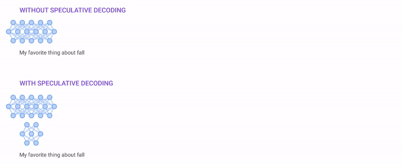
Черновая модель быстро набрасывает несколько токенов вперёд, целевая модель одним проходом проверяет всю цепочку и принимает её префикс до первого несогласия, после чего дописывает свой токен взамен отвергнутого. Каждый такой цикл стоит один прогон большой модели, но продвигает генерацию сразу на несколько позиций. Даже в худшем случае (первый же токен отбраковывается) мы всё равно получаем 1 новый токен от большой модели — ровно столько же, сколько дала бы обычная генерация.
В лучшем случае принимаем все $K$ токенов и добавляем ещё один от целевой модели — итого $K+1$ токенов за один шаг.
Ключевой вывод: метод не может замедлить генерацию по числу проходов большой модели. Он либо ускоряет, либо работает как обычно — правда, с накладными расходами на черновую модель, о которых ниже.
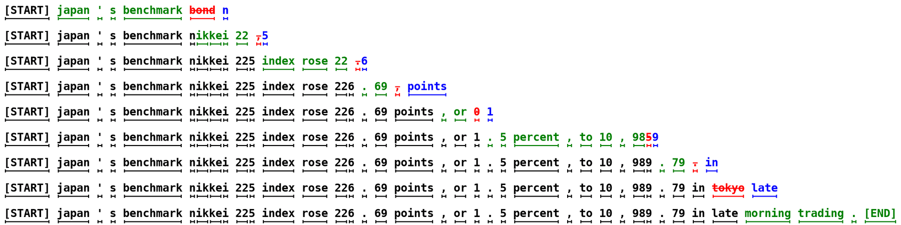
Настоящая трасса из статьи Leviathan et al.: каждая строка — одна итерация алгоритма, то есть один проход целевой модели, и вся строка это текущий текст целиком. Чёрным набрано то, что уже принято на прошлых итерациях. Зелёным — черновые токены, которые целевая модель приняла на этой итерации. Красным перечёркнутым — первый отвергнутый черновой токен, синим сразу за ним — то, чем целевая модель его заменила. Считать выигрыш удобно по первой строке: за один проход большой модели появилось 5 новых токенов ( japan,',s,benchmarkзелёным иnсиним взамен отвергнутогоbond). Во второй строке принято только два черновых токена (ikkeiи22), и вместе с синей заменой генерация продвинулась на три позиции: длина рывка каждый раз своя. Черновик здесь пишет модель на 6M параметров, проверяет модель на 97M.Основная метрика качества алгоритма — Acceptance Rate (AR), доля токенов черновой модели, принятых целевой. Чем выше AR, тем больше ускорение и тем меньше дорогостоящих вызовов большой модели.
От чего он зависит:
- близость моделей: черновая из той же линейки и обученная на тех же данных угадывает куда лучше;
- предсказуемость текста: на шаблонном тексте, коде и цитатах AR высок, на творческой генерации — низок;
- температура сэмплирования: при низкой температуре обе модели ведут себя почти детерминированно и легко совпадают; при высокой согласие редеет.
Число спекулируемых токенов — главный гиперпараметр, и у него есть оптимум.
Слишком маленькое $K$: ускорение упускается, мы не используем доступный запас вычислений. Слишком большое $K$: чем длиннее цепочка, тем вероятнее, что она оборвётся в начале, — а вся работа черновой модели после точки обрыва выброшена впустую. Плюс растёт стоимость самих $K$ прогонов черновой модели.
Практика: $K$ обычно берут в диапазоне 3–8 и подбирают под конкретную пару моделей и тип нагрузки. Некоторые движки настраивают $K$ адаптивно, увеличивая его, пока AR держится высоким.
Speculative decoding — не универсальное ускорение, и вот его границы.
- Большие батчи. Метод живёт за счёт простаивающих ядер GPU. При батче в несколько десятков запросов декодинг уже compute-bound, свободных вычислений нет, и спекуляция начинает отнимать ресурсы у полезной работы. Поэтому в высоконагруженных сервисах его часто отключают.
- Низкий AR. Если черновая модель плохо угадывает, накладные расходы на неё перевешивают выигрыш.
- Память. В видеопамяти надо держать обе модели и оба KV-кэша.
Формулировка компромисса: метод улучшает latency одного запроса, но может ухудшить суммарный RPS сервиса.
Метод снижает задержки, уменьшает стоимость инференса и эффективнее использует GPU, при этом качество текста остаётся ровно на уровне большой модели.
Именно поэтому спекулятивное декодирование стало стандартной функцией всех современных движков инференса (vLLM, TensorRT-LLM, llama.cpp): оно не требует переобучения модели, не портит выход и включается конфигурацией.
В чём ключевая идея speculative decoding?
Маленькая черновая модель генерирует $K$ токенов-кандидатов, а большая проверяет их все за один forward pass и принимает через rejection sampling. Так за один дорогой проход генерация продвигается сразу на несколько позиций.
Почему проверка нескольких токенов стоит столько же, сколько генерация одного?
Декодинг memory-bound: время шага определяется чтением всех весов модели из памяти, а не арифметикой. Подав несколько токенов сразу, мы получаем распределения на всех позициях за тот же один проход благодаря каузальной маске трансформера.
Гарантирует ли метод то же качество, что обычная генерация большой моделью?
Да, и это доказуемо. Rejection sampling с довыбором из распределения, пропорционального $\max(0, p - q)$, обеспечивает точное совпадение итогового распределения с распределением целевой модели. Черновая модель влияет только на скорость.
Что такое Acceptance Rate и от чего он зависит?
Доля токенов черновой модели, принятых целевой. Растёт при близости моделей друг к другу, предсказуемости текста и низкой температуре сэмплирования; падает на творческой генерации и при высокой температуре.
Каковы худший и лучший исходы одного шага?
Худший: первый же токен отвергнут, получаем 1 токен от большой модели — как при обычной генерации. Лучший: приняты все $K$ токенов плюс один добавлен целевой моделью, итого $K+1$ токен за проход.
Почему нельзя брать $K$ сколь угодно большим?
Чем длиннее спекулируемая цепочка, тем выше шанс, что она оборвётся в начале, и вся работа черновой модели после точки обрыва пропадёт. Кроме того, растут прямые затраты на $K$ прогонов черновой модели. На практике берут 3–8.
Когда speculative decoding не даёт выигрыша?
При больших батчах, когда декодинг уже compute-bound: свободных вычислений нет, и спекуляция отнимает ресурсы у полезной работы. Метод улучшает latency отдельного запроса, но может снизить суммарный RPS сервиса.
-
EAGLE
EAGLE — один из нашумевших методов спекулятивного декодирования. Он оставляет ту же схему «черновик — верификация», но улучшает её сразу в двух местах:
- черновая модель получает на вход не только токены, но и скрытые состояния целевой модели;
- вместо линейной цепочки предположений строится дерево черновых токенов.
Обе идеи бьют в одну цель — поднять Acceptance Rate и удешевить стадию черновика.
Мы передаём скрытые состояния последнего слоя исходной модели в draft-голову и обучаем её предсказывать их же на выход. Это даёт черновику намного больше информации для «угадывания» будущих токенов и повышает Acceptance Rate.
Почему это работает: обычная черновая модель видит только текст — то же, что видит пользователь. Скрытое состояние последнего слоя целевой модели — это её внутреннее представление контекста, гораздо более богатое: там уже посчитано, о чём идёт речь, какие сущности упомянуты, какой стиль и синтаксическая конструкция сейчас строится.
Аналогия: угадывать следующее слово по написанному тексту трудно; угадывать его, заглядывая в мысли автора прямо перед тем, как он это слово напишет, — гораздо легче.
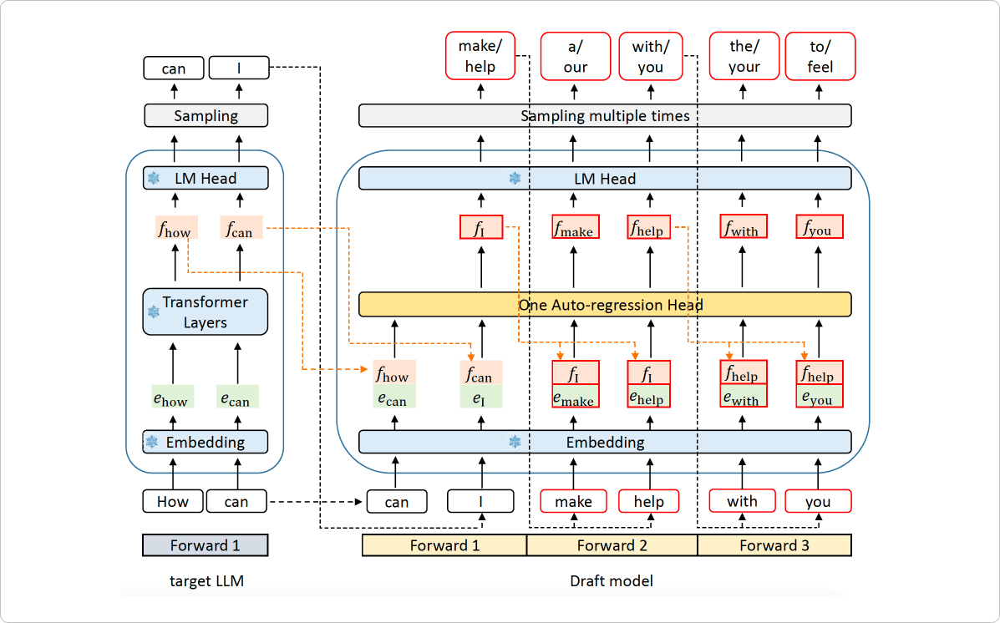
Архитектура EAGLE: скрытое состояние последнего слоя целевой модели подаётся в лёгкую draft-голову вместе с эмбеддингом токена. Голова предсказывает следующее скрытое состояние, из которого той же самой языковой головой целевой модели получается распределение по токенам. Доступ к скрытым состояниям позволяет уменьшить размер черновой модели без потерь в Acceptance Rate.
Например, достаточно одного трансформерного слоя, совпадающего по размеру со слоем базовой модели. Это резко снижает overhead стадии drafting и позволяет добиться значительно большего ускорения во всех сценариях.
Логика простая: вся тяжёлая работа по «пониманию» контекста уже сделана целевой моделью и передана готовой. Черновику остаётся лишь экстраполировать её на шаг вперёд — задача несопоставимо более лёгкая, чем читать текст с нуля.
Вместо создания цепочки будущих токенов модель строит дерево черновых токенов, а в процессе проверки выбирается наиболее перспективный путь в этом дереве.
Мотивация видна из ограничения обычной схемы: линейный черновик — это одна-единственная ставка. Ошиблись на втором токене — все последующие выброшены, даже если правильный вариант отличался только там.
Дерево страхует от этого: на каждом шаге черновик предлагает не один, а несколько правдоподобных вариантов, и они ветвятся дальше. Если целевая модель не согласилась с основной веткой, есть шанс, что подходит соседняя, и цепочка всё равно продвинется на несколько токенов.
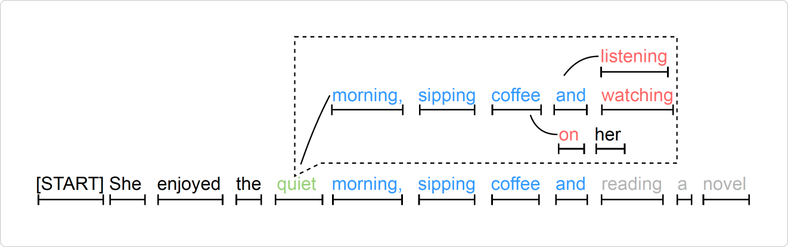
Дерево черновых токенов: из каждого узла выходит несколько вариантов продолжения. Верификация проходит по всему дереву за один проход целевой модели, после чего принимается самый длинный путь, с которым целевая модель согласилась. Естественный вопрос: если дерево содержит десятки узлов, не превращается ли верификация в десятки прогонов?
Нет — и это самая изящная часть метода. Все узлы дерева вытягиваются в одну последовательность, а вместо обычной каузальной маски внимания подставляется специальная древовидная маска: каждый узел видит только своих предков в дереве и не видит узлы из соседних веток.
В результате один forward pass целевой модели даёт корректные распределения для всех ветвей сразу. Древовидные драфты значительно увеличивают среднее число принятых токенов, поскольку фактически позволяют верифицировать несколько цепочек — и делать это почти так же быстро, как одну.
Всё это способствует общему ускорению процесса.
EAGLE может быть примерно вдвое эффективнее по соотношению принятых и отвергнутых токенов, чем традиционные методы спекулятивного декодирования, и давать вдвое большее ускорение по сравнению с обычной авторегрессионной генерацией в compute-bound сценариях.
Плата за эффективность — привязка к конкретной модели.
- Голову надо обучать. В отличие от обычного спекулятивного декодирования, где черновиком может быть любая готовая маленькая модель, здесь draft-голову приходится тренировать под целевую модель — на её скрытых состояниях. Это недорого (обучается один слой), но это отдельный шаг.
- Нужен доступ к внутренностям. Скрытые состояния последнего слоя надо уметь доставать и передавать, поэтому с моделью за закрытым API метод не применим.
- Голова не переносится. Обученная под одну модель draft-голова бесполезна для другой; при обновлении целевой модели её надо переобучать.
И общее ограничение всего семейства сохраняется: при больших батчах, когда декодинг становится compute-bound, выигрыш от любой спекуляции тает.
- Multi-Token Prediction: MTP-драфтеры Gemma 4 — та же идея кормить черновик скрытыми состояниями, но с другим акцентом: драфтер cross-attend'ится к KV-кэшу целевой модели и потому обходится без собственного prefill.
Чем EAGLE отличается от обычного спекулятивного декодирования?
Двумя вещами: черновая голова получает на вход скрытые состояния последнего слоя целевой модели и обучается предсказывать их же, а черновик строится в виде дерева вариантов, а не линейной цепочки.
Почему передача скрытых состояний повышает Acceptance Rate?
Скрытое состояние — это внутреннее представление контекста целевой модели, гораздо более информативное, чем сам текст. Черновику не нужно заново «понимать» контекст, ему остаётся экстраполировать готовое представление на шаг вперёд.
Почему draft-голова может состоять всего из одного слоя?
Тяжёлая работа по обработке контекста уже выполнена целевой моделью и передана в готовом виде. Ёмкость черновика при этом почти не влияет на качество угадывания, зато резко снижаются накладные расходы на стадию drafting.
Что такое дерево черновых токенов и зачем оно нужно?
Вместо одной цепочки предположений строится дерево альтернативных продолжений. Если целевая модель не согласилась с основной веткой, может подойти соседняя, поэтому среднее число принятых за шаг токенов заметно растёт.
Как удаётся проверить всё дерево за один проход целевой модели?
Узлы дерева вытягиваются в одну последовательность, а обычная каузальная маска внимания заменяется древовидной: каждый узел видит только своих предков и не видит соседние ветки. Один forward pass даёт корректные распределения сразу для всех ветвей.
Какое ускорение даёт EAGLE?
Примерно вдвое лучшее соотношение принятых и отвергнутых токенов по сравнению с традиционным спекулятивным декодированием и примерно вдвое большее ускорение относительно обычной авторегрессионной генерации в compute-bound сценариях.
Какие практические ограничения у метода?
Draft-голову нужно обучать под конкретную целевую модель, требуется доступ к её скрытым состояниям (модели за закрытым API не подходят), и при смене целевой модели голову приходится переобучать.
-
Multi-Token Prediction: MTP-драфтеры Gemma 4
Multi-Token Prediction (MTP, предсказание нескольких токенов) — приём, при котором модель обучается предсказывать не только непосредственно следующий токен, но и несколько последующих сразу.
У приёма два разных применения, которые легко перепутать:
- MTP как цель обучения — дополнительная голова (или несколько) предсказывает токены на шаг и более вперёд, и её лосс добавляется к основному. Модель учится лучше, инференс не меняется.
- MTP как драфтер — маленькая голова предсказывает несколько токенов вперёд, а большая модель их проверяет. Это спекулятивное декодирование, где MTP-голова играет роль черновой модели.
Если совсем простыми словами: в первом случае мы заставляем модель думать на несколько шагов вперёд, чтобы она поумнела; во втором — чтобы она печатала быстрее.
Обычная языковая модель на каждой позиции получает ровно один обучающий сигнал: «какой токен идёт следующим». Это довольно бедный сигнал — он поощряет модель хорошо угадывать ближайшее слово, но не заставляет её планировать.
Дополнительная голова, предсказывающая токен через один, делает сигнал плотнее: чтобы правильно назвать не только следующее слово, но и то, что идёт за ним, недостаточно локального шаблона — нужно представление о том, куда идёт фраза. Глубина при этом может быть и больше одного шага, но в DeepSeek-V3 использовали ровно один дополнительный.
Так MTP использовали в DeepSeek-V3 — там это одно из трёх заявленных нововведений наряду с MLA и MoE. Приятный побочный эффект: обученные MTP-головы можно потом переиспользовать как драфтер на инференсе, бесплатно получив спекулятивное декодирование.
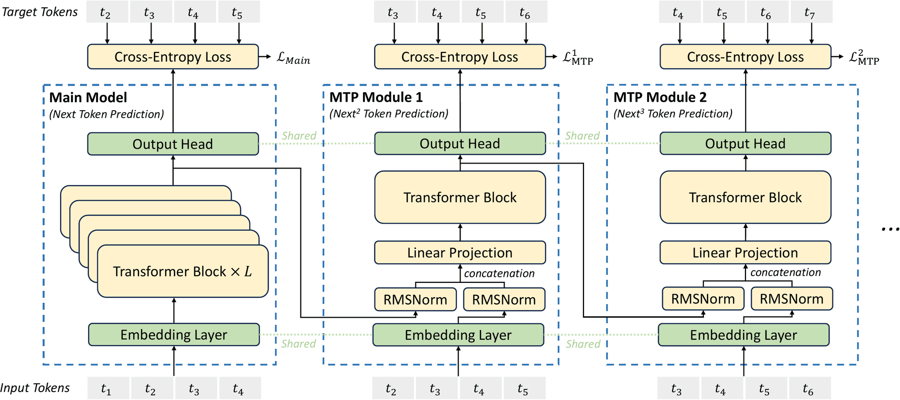
Схема MTP как цели обучения из статьи DeepSeek-V3. Слева в синей рамке основная модель: эмбеддинги, $L$ трансформерных блоков, выходная голова и кросс-энтропия $\mathcal{L}_{Main}$ — она предсказывает следующий токен, то есть по входу $t_1..t_4$ целями служат $t_2..t_5$. Правее два MTP-модуля, каждый со своим лоссом $\mathcal{L}^1_{MTP}$ и $\mathcal{L}^2_{MTP}$: их цели сдвинуты ещё на один и на два токена вперёд ($t_3..t_6$ и $t_4..t_7$). Каждый модуль легче основной модели — в нём один трансформерный блок вместо $L$; на вход он получает скрытое состояние предыдущей ступени и эмбеддинг очередного токена, оба через RMSNorm, склеенные конкатенацией и сжатые линейной проекцией. Зелёные пунктирные линии с подписью Shared показывают, что таблица эмбеддингов и выходная голова у всех модулей общие: собственных весов в этих слоях модули не заводят. На схеме два модуля и многоточие — это общий вид метода; в самой DeepSeek-V3 глубина равна единице, то есть модуль всего один. MTP-драфтеры Gemma 4
В 2026 году Google выпустил отдельные MTP-драфтеры к моделям Gemma 4 — под той же лицензией Apache 2.0, что и сами модели, и с поддержкой в vLLM, SGLang, Ollama, MLX и transformers.
Драфтер — это маленькая модель, которая пишет «черновик» из нескольких токенов, а основная модель проверяет его за один проход. Заявленный результат — ускорение генерации до трёх раз без какой-либо потери качества.
Драфтеры выпущены под четыре варианта: плотный флагман 31B, MoE-модель 26B-A4B и две edge-модели E2B и E4B.
Драфтер Gemma 4 — не самостоятельная языковая модель, а надстройка над основной. Его устройство:
- отдельный эмбеддер плюс 4-слойный трансформерный блок — три слоя локального внимания и один глобальный, повторяя пропорцию основной архитектуры;
- общая таблица эмбеддингов с целевой моделью — своя не обучается;
- на вход подаются активации последнего слоя целевой модели, сконкатенированные с эмбеддингами токенов и сжатые проекцией;
- ширина модели — всего 256 для edge-вариантов E2B и E4B и 1024 для 26B-A4B и 31B.
Ширина 256 против нескольких тысяч у основной модели показывает масштаб: драфтер практически бесплатен по сравнению с проверяющей моделью.
Ключевое отличие от классического спекулятивного декодирования — драфтер не имеет собственного KV-кэша. Его слои внимания cross-attend'ятся к кэшу основной модели.
Из этого следуют два практических выигрыша.
Нет prefill у драфтера. В обычной схеме черновая модель обязана сама прочитать весь промпт, прежде чем что-то предлагать; на длинных промптах это ощутимая фиксированная плата. Здесь контекст уже прочитан целевой моделью и лежит в её кэше — драфтер просто в него смотрит.
Длина черновика задаётся на лету. Драфтер не привязан к фиксированному числу голов, как схемы вида Medusa, поэтому число предсказываемых токенов можно менять прямо во время работы — под нагрузку, под длину запроса, под наблюдаемый acceptance rate.
Пусть промпт — 100 000 токенов, и мы генерируем ответ из 200 токенов.
Отдельная draft-модель: она обязана сама обработать все 100 000 токенов промпта, прежде чем предложит первый черновик. Даже если она в 20 раз меньше целевой, это 5% стоимости полного prefill — заплаченных до того, как сгенерирован хотя бы один токен.
MTP-драфтер Gemma 4: prefill делает только целевая модель, как и без всякого ускорения. Драфтер начинает работать сразу, читая готовый кэш.
Чем длиннее промпт, тем больше разрыв — а именно длинные промпты и составляют сегодня основную нагрузку: RAG, работа с кодовой базой, длинные диалоги.
Верификация устроена так же, как в обычном спекулятивном декодировании: целевая модель проверяет все черновые токены за один параллельный проход, принимает верный префикс и отбрасывает остаток начиная с первого расхождения.
Отсюда строгая гарантия: при жадном декодировании результат побитово совпадает с тем, что выдала бы одна целевая модель без всякого драфтера. Драфтер не участвует в выборе токенов — только предлагает кандидатов, а решает всегда целевая модель.
Поэтому фразу «ускорение без потери качества» здесь надо понимать буквально, а не как «просадка незаметна на бенчмарках».
Заявленный потолок — до 3× end-to-end. Разброс по конфигурациям заметный:
- 26B-A4B (MoE) на Apple Silicon: около 2.2× при размере батча 4–8;
- NVIDIA A100: сопоставимый выигрыш, проявляющийся на больших батчах;
- плотный 31B и edge-модели E2B/E4B: выигрыш есть даже при батче 1.
Разница между плотной моделью и MoE закономерна. У плотной модели проверка нескольких токенов почти бесплатна: веса одни и те же для всех позиций, добавляется только арифметика. У MoE разные токены черновика могут активировать разных экспертов, и проверка требует подгрузить их все — поэтому там выигрыш проявляется при батчах, где эксперты и так загружены.
EAGLE и MTP-драфтеры Gemma 4 решают одну задачу и разделяют главную идею — кормить черновик скрытыми состояниями целевой модели, а не только текстом.
Расходятся они в двух местах. EAGLE делает ставку на дерево черновых кандидатов: строится несколько альтернативных продолжений сразу, и верификация выбирает лучший путь. MTP-драфтер Gemma 4 делает ставку на дешевизну самого драфтера: cross-attention к чужому кэшу убирает prefill и позволяет держать ширину 256.
Подходы не конкурируют по существу и в принципе комбинируются — это разные способы удешевить одну и ту же стадию.
У E2B и E4B — маленьких моделей для устройств — узким местом оказывается не сам трансформерный блок драфтера, а softmax по всему словарю: словарь большой, а модель крошечная, и финальная проекция начинает доминировать.
Решение — efficient embedder: токены заранее разбиваются на кластеры, драфтер сначала предсказывает вероятный кластер и только потом считает softmax внутри него. Полный словарь не перебирается.
Это типичный сюжет edge-инференса: приём, бессмысленный для 31B-модели, оказывается решающим для двухмиллиардной.
- Путать две роли MTP. MTP как цель обучения меняет качество модели и никак не ускоряет инференс; MTP как драфтер ускоряет инференс и никак не меняет качество. Совпадает только механика предсказания нескольких токенов вперёд.
- «Драфтер может испортить ответ». Не может: при жадном декодировании выход побитово совпадает с выходом целевой модели. Драфтер лишь предлагает кандидатов, принимает решение всегда целевая модель.
- Ждать 3× на любой конфигурации. Цифра достигается при удачном сочетании модели, железа и батча. У MoE-моделей при батче 1 выигрыш заметно скромнее, чем у плотных.
- Считать, что чем длиннее черновик, тем лучше. Отвергнутые токены — это выброшенная работа. Оптимальная длина зависит от acceptance rate; именно поэтому возможность менять её на лету и ценна.
Что такое Multi-Token Prediction и в каких двух смыслах используется этот термин?
Это предсказание нескольких будущих токенов вместо одного. В первом смысле MTP — дополнительная цель обучения: головы предсказывают токены на несколько шагов вперёд, лосс складывается с основным, и модель учится планировать. Во втором — механизм инференса: MTP-голова работает драфтером в спекулятивном декодировании.
Зачем добавлять MTP в обучение, если инференс от этого не меняется?
Ради более плотного обучающего сигнала. Предсказание только следующего токена поощряет локальные шаблоны, а чтобы правильно назвать ещё и токен через один, нужно представление о том, куда идёт фраза. Так делали в DeepSeek-V3 — там глубина MTP равна одному дополнительному токену, — и обученные головы потом переиспользуются как драфтер.
Как устроен MTP-драфтер Gemma 4?
Это отдельный эмбеддер плюс 4-слойный трансформерный блок — три слоя локального внимания и один глобальный, — шириной 256 у edge-моделей и 1024 у больших. Он делит таблицу эмбеддингов с целевой моделью и получает на вход её активации последнего слоя вместе с эмбеддингами токенов.
В чём главный приём этой архитектуры?
Драфтер не имеет своего KV-кэша, а cross-attend'ится к кэшу целевой модели. Поэтому у него нет собственной стадии prefill — контекст уже прочитан основной моделью, — и длину черновика можно менять прямо во время работы, а не фиксировать числом голов.
Почему ускорение не стоит ничего по качеству?
Потому что целевая модель верифицирует весь черновик за один параллельный проход и принимает только совпавший префикс. При жадном декодировании результат побитово равен выходу одной целевой модели: драфтер предлагает кандидатов, но никогда не выбирает токен сам.
Почему у MoE-модели выигрыш меньше, чем у плотной, при малом батче?
Потому что у плотной модели одни и те же веса используются для всех позиций, и проверка нескольких токенов добавляет почти только арифметику. У MoE разные токены черновика могут активировать разных экспертов, и всех их надо подгрузить, поэтому выигрыш проявляется на батчах, где эксперты загружены и так.
-
Dynamic Batching
Dynamic batching (динамическая пакетизация) — метод обработки запросов к LLM, при котором сервер динамически объединяет несколько входящих запросов, поступивших примерно в одно и то же время, в один общий батч и прогоняет их через модель за один проход.
Если совсем простыми словами: вместо того чтобы возить пассажиров по одному, диспетчер ждёт несколько секунд, набирает полный автобус и везёт всех разом.
Причина всё та же, что и в первом блоке: веса модели читаются из памяти один раз на весь батч.
Обслуживая один запрос, мы протаскиваем через шину, скажем, 14 ГБ весов ради одного вектора. Обслуживая 32 запроса вместе, читаем те же 14 ГБ, но полезной работы делаем в 32 раза больше. Стоимость чтения памяти «размазывается» по пользователям, режим смещается от memory-bound к compute-bound, и RPS сервиса растёт почти линейно, пока не упрёмся в вычисления.
Именно поэтому батчинг — самая дешёвая и самая эффективная оптимизация инференса: он не требует ни переобучения модели, ни изменения весов, только правильной организации очереди.
Dynamic batching используется для эффективного инференса при большом числе параллельных запросов:
- сервер ждёт короткий промежуток времени (обычно миллисекунды), чтобы собрать несколько входящих запросов в один батч;
- все запросы в батче прогоняются через модель одновременно, что позволяет лучше использовать GPU благодаря векторизованным матричным операциям;
- запросы могут иметь разную длину — для этого используется masking: короткие последовательности дополняются токенами
[PAD], а attention mask указывает, какие позиции игнорировать при вычислениях; - когда все ответы в батче сгенерированы, батч «распадается», и процесс повторяется для следующей группы запросов.
Матричные операции требуют прямоугольного тензора: нельзя сложить в одну матрицу строки разной длины.
Поэтому короткие последовательности дополняются фиктивными токенами
[PAD]до длины самой длинной в батче. Чтобы модель не приняла эти пустышки за реальный текст, ей передают attention mask — булев массив «настоящий токен / заполнитель». В механизме внимания замаскированным позициям присваивается $-\infty$ до softmax, из-за чего их вес обращается в ноль.Цена такого выравнивания прямая: вычисления на позициях
[PAD]выполняются, но их результат выбрасывается. Если в батче один запрос на 2000 токенов и три по 50, впустую уходит около 70% работы. Отсюда и вывод, что в один батч выгодно собирать запросы похожей длины.Если три пользователя почти одновременно отправляют запрос к модели, сервер объединяет их в один батч и обрабатывает вместе. Это даёт ускорение без необходимости запускать три отдельных инференса.
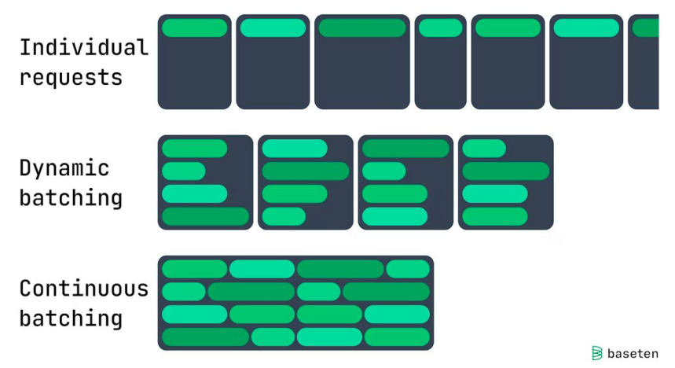
Три режима работы сервера. Обычный: запросы обрабатываются по одному, GPU почти простаивает. Dynamic: запросы собираются в батч, но батч живёт до полного завершения всех своих последовательностей — досрочно закончившиеся строки продолжают занимать место впустую. Continuous: освободившийся слот сразу занимает следующий запрос из очереди. После того как все три последовательности обработаны, GPU освобождается для следующего набора запросов.
- Значительное ускорение инференса за счёт параллельной обработки нескольких запросов.
- Лучшее использование GPU и минимизация накладных вычислений.
- Простая реализация: применяется в OpenAI API, HuggingFace Inference API и других production-системах.
- Не требует никаких изменений в самой модели — это чисто серверная логика.
- Эффективно только для запросов, поступающих примерно в одно время.
- Если запрос приходит чуть позже, он ждёт следующего батча, увеличивая latency.
- Все последовательности в батче синхронизированы по шагам генерации: GPU простаивает, если один из запросов завершился раньше остальных.
Разберём третий минус подробнее — именно он и породил continuous batching.
Пусть в батче четыре запроса, и модель заканчивает ответы на 20, 30, 40 и 500 токенах. Батч живёт, пока не завершится самый длинный. Значит, начиная с 41-го шага три слота из четырёх заняты уже готовыми последовательностями, которые ничего не считают, но продолжают занимать место в батче и память под KV-кэш.
Итого: полезная работа сделана примерно на 30%, оставшиеся 70% ёмкости GPU потрачены впустую. А поскольку длины ответов LLM разбросаны очень широко (от одного слова до нескольких страниц), это не редкий вырожденный случай, а типичная ситуация.
На практике у dynamic batching две настройки, и обе задают компромисс «RPS против latency»:
- Максимальный размер батча. Больше — выше RPS, но дольше ждёт каждый отдельный запрос и больше памяти нужно под KV-кэш.
- Время ожидания набора батча (batch timeout). Больше — батчи полнее и GPU загружен лучше, но к latency каждого запроса добавляется само это ожидание.
Настраивают их от целевого SLA: берут допустимую p99-задержку и подбирают максимальные значения, при которых она ещё выдерживается на пиковом трафике.
В отличие от dynamic batching, где состав батча фиксируется на момент начала обработки, continuous batching позволяет добавлять новые запросы «на лету», по мере завершения старых.
Это делает использование GPU почти непрерывным и уменьшает время ожидания. Подробнее — в следующем вопросе.
В чём суть dynamic batching и почему он ускоряет инференс?
Сервер ждёт короткий промежуток времени, собирает несколько запросов в один батч и прогоняет их совместно. Веса модели при этом читаются из памяти один раз на весь батч, поэтому стоимость чтения амортизируется по всем пользователям и режим смещается от memory-bound к compute-bound.
Как обрабатываются запросы разной длины внутри одного батча?
Короткие последовательности дополняются токенами
[PAD]до длины самой длинной, а attention mask помечает эти позиции как фиктивные: перед softmax им присваивается $-\infty$, и их вклад обнуляется.Чем плох padding с точки зрения производительности?
Вычисления на позициях-заполнителях всё равно выполняются, а их результат выбрасывается. При сильном разбросе длин доля потерянной работы может достигать десятков процентов, поэтому в батч выгодно собирать запросы похожей длины.
В чём ключевое ограничение dynamic batching?
Батч живёт до завершения самой длинной последовательности. Досрочно закончившиеся запросы продолжают занимать слоты и память под KV-кэш, ничего не вычисляя, — GPU простаивает.
Какими параметрами настраивают dynamic batching и как?
Максимальным размером батча и временем ожидания его набора. Оба увеличивают RPS и ухудшают latency, поэтому их подбирают как максимальные значения, при которых целевая p99-задержка ещё выдерживается на пиковом трафике.
Чем continuous batching принципиально лучше?
Он позволяет добавлять новые запросы в батч по мере завершения старых, не дожидаясь окончания всего батча. Освободившийся слот немедленно занимает следующий запрос из очереди, благодаря чему GPU загружен практически непрерывно.
-
Continuous Batching
Continuous Batching (непрерывная пакетизация) — метод обработки запросов к LLM, при котором состав батча может меняться на каждой итерации генерации.
В отличие от статической пакетизации, где все запросы ждут завершения самого длинного, continuous batching позволяет добавлять новые запросы по мере освобождения ресурсов.
Если совсем простыми словами: dynamic batching — это автобус, который едет по маршруту и высаживает пассажиров, но новых не берёт до конца рейса. Continuous batching — это маршрутка, которая подсаживает нового пассажира на том же месте, где вышел предыдущий.
В традиционной (статической) пакетизации:
- все запросы, попавшие в текущий батч, запускаются одновременно на одной итерации;
- когда один из запросов завершает генерацию раньше, GPU всё равно ждёт, пока выполнится самый долгий.
Это и вызывает простой ресурсов: слот в батче занят готовой последовательностью, которая уже ничего не вычисляет.
- Генерация вызывается итерационно, шаг за шагом, а не «запустили батч и ждём результата».
- Когда один из запросов в батче досрочно завершился (например, встретил токен
[EOS]— end of sequence), его слот сразу занимает новый запрос из очереди. - Таким образом на любой итерации батч может быть «дополнен» новыми запросами, что сокращает пустое время простоя GPU.
- Дополнительно существенную роль играют оптимизации памяти: механизм PagedAttention (в vLLM) позволяет не выделять заранее большой непрерывный буфер под контекст, а резервировать блоки по мере необходимости. Это уменьшает фрагментацию и позволяет разместить в батче больше последовательностей.
Может показаться странным: как можно заменить одну последовательность в батче другой прямо посреди работы модели?
Ответ в том, что модель не хранит состояние между шагами — всё состояние последовательности лежит в её KV-кэше и в текущем токене. Слои модели просто применяются к тому, что подано на вход, и не «помнят», кто был в этом слоте на прошлой итерации.
Значит, батч — это не единая сущность, а просто набор независимых строк, собранных вместе ради эффективности. Заменить строку — значит подставить другой KV-кэш и другой текущий токен. Никакого «разрыва» при этом не происходит.
Единственная тонкость: у нового запроса сначала должен пройти prefill (обработка промпта), который по природе отличается от decode-шага. Планировщик решает, чередовать ли prefill и decode или выполнять их совместно, — это отдельная нетривиальная инженерная задача.
На схеме жёлтым отмечены токены контекста, синим — первый сгенерированный токен, красным — конец предложения.
Батч из нескольких запросов по шагам генерации. Последовательности заканчиваются в разное время, и после каждого красного токена в строке остаётся пустое место — «баббл». Идея continuous batching в том, чтобы заполнить эти дыры токенами новых запросов, а не гонять модель вхолостую. Проблема здесь в возникновении пропусков, или бабблов (bubbles, «пузыри» — заимствование из терминологии конвейеров процессора). Генерируемые ответы не одинаковы по длине, поэтому некоторые завершаются раньше остальных, и видеокарта простаивает: часть её вычислительных ресурсов остаётся без нагрузки.
Чтобы решить эту проблему, нужно заменять бабблы обработкой новых запросов. Как это сделать — отдельный и сложный вопрос; подробнее в этой статье.
Continuous batching даёт значительный прирост производительности: вплоть до $\times 23$ по throughput по сравнению с наивной статической пакетизацией — и при этом снижается медианная (p50) задержка.
Второе даже важнее первого. Обычно рост пропускной способности покупается за счёт задержки, а здесь улучшаются обе метрики сразу: запросам больше не приходится ждать, пока освободится весь батч целиком. Такие оптимизации — большая редкость, и потому continuous batching стал обязательным элементом любого серьёзного движка инференса.
В экспериментах показано, что при более высокой вариативности длин ответа статическая пакетизация деградирует сильнее: чем шире разброс, тем больше слотов простаивает вхолостую.
Continuous batching остаётся устойчивым: досрочно закончившиеся строки немедленно замещаются, и общий разброс длин перестаёт влиять на утилизацию. Для реальных LLM-сервисов это критично — там ответы варьируются от одного слова до нескольких страниц.
Когда система сильно загружена (высокий QPS — запросов в секунду), возможности «влить» новые запросы в батч уменьшаются: ресурсы уже заняты, свободных слотов нет, и latency начинает расти.
Стоит понимать природу этого явления: continuous batching устраняет простой, но не создаёт вычислительную мощность из воздуха. Как только GPU загружен полностью, дальше работает обычная теория очередей — новые запросы просто ждут. Метод сдвигает точку насыщения гораздо дальше, но не отменяет её.
Фрагментация памяти
Continuous batching решает проблему простоя GPU на уровне scheduler'а, но сам по себе не решает проблему размещения KV-кэша в памяти.
Во время инференса длина ответа заранее неизвестна: один запрос закончится через несколько токенов, другой сгенерирует длинную простыню. Поэтому ранние serving-системы заранее резервировали под каждый запрос память на максимально возможную длину последовательности — на всякий случай.
Результат предсказуем: памяти хватает на считаные запросы, хотя фактически используется малая её доля.
Фрагментация при continuous batching: часть слотов зарезервирована под будущие токены, но может никогда не использоваться; между занятыми участками также появляются свободные куски, которых суммарно много, но которые не образуют одного большого непрерывного блока. Internal fragmentation (внутренняя фрагментация) — слоты зарезервированы под будущие токены, но генерация завершилась раньше.
Эти ячейки пустые, однако другие запросы всё равно не могут их использовать, пока живёт текущий request: память формально принадлежит ему.
Масштаб потерь легко оценить. Если под каждый запрос резервируется 4096 позиций, а средний ответ занимает 200, то впустую лежит около 95% выделенной памяти. То есть на карту помещается в двадцать раз меньше одновременных запросов, чем могло бы.
External fragmentation (внешняя фрагментация) — свободная память есть, но она разбита на отдельные куски между уже занятыми блоками.
Новый длинный запрос требует один большой непрерывный участок, и выделение падает с ошибкой, хотя суммарного свободного объёма было бы достаточно.
Бытовая аналогия: в театре свободны сто мест, но все они разрознены по одному, и компанию из четырёх человек посадить рядом невозможно.
Именно поэтому continuous batching обычно рассматривают вместе с paged KV-cache / PagedAttention: планировщик умеет подмешивать новые запросы в батч, а paged memory manager выделяет KV-кэш маленькими блоками по мере генерации, а не одним большим куском заранее.
Практический вывод: при continuous batching важны сразу две независимые вещи.
- Scheduling — не ждать самый длинный запрос, а добавлять новые запросы в освободившиеся слоты.
- Memory management — не резервировать огромные непрерывные KV-cache буферы под максимум длины.
Если оставить наивное preallocation-поведение, батчинг может выглядеть динамическим, но реальная пропускная способность всё равно упрётся в VRAM, internal и external fragmentation.
В чём главная проблема статической пакетизации запросов к LLM?
Все запросы в батче ждут завершения самого длинного. Досрочно закончившиеся последовательности продолжают занимать слоты, ничего не вычисляя, и GPU простаивает — в схеме это видно как «бабблы».
Как continuous batching решает проблему простоя GPU?
Генерация идёт итерационно, и как только запрос встречает
[EOS], его слот немедленно занимает новый запрос из очереди. Состав батча меняется на каждом шаге, поэтому GPU загружен практически непрерывно.Почему вообще возможно заменить последовательность в батче посреди работы?
Модель не хранит состояние между шагами: всё состояние запроса содержится в его KV-кэше и текущем токене. Батч — просто набор независимых строк, поэтому подмена строки означает лишь подстановку другого KV-кэша.
Какой прирост даёт continuous batching?
До $\times 23$ по throughput относительно наивной статической пакетизации, причём одновременно снижается и медианная задержка p50 — редкий случай, когда обе метрики улучшаются вместе.
При каком условии continuous batching перестаёт помогать?
При очень высоком QPS: все слоты заняты, свободных ресурсов нет, и новые запросы ждут в очереди. Метод устраняет простой, но не создаёт вычислительную мощность, поэтому лишь отодвигает точку насыщения.
Что такое internal и external fragmentation KV-кэша?
Internal — память зарезервирована под будущие токены запроса, но не использована и недоступна другим. External — свободная память разбита на мелкие куски между занятыми блоками, поэтому запрос, требующий большого непрерывного участка, не может быть размещён.
Почему continuous batching требует paged-механизма управления памятью?
Длина генерации неизвестна заранее, и наивное резервирование под максимум приводит к обеим формам фрагментации. PagedAttention выделяет KV-кэш небольшими блоками по мере роста последовательности, поэтому в память помещается кратно больше одновременных запросов.
-
Ragged Tensors
Continuous batching позволяет вести обработку потока запросов в реальном времени без ожидания формирования полных батчей. В дополнение к нему рекомендуется использовать ragged tensors («рваные», неровные тензоры) — ещё один метод повышения утилизации GPU.
Такие тензоры эффективно представляют последовательности разной длины без добавления padding-токенов. Это позволяет подавать на вход предложения или абзацы произвольной длины — очень частый случай в NLP — и не расходовать вычисления на бесполезные заполнители.
Ragged tensor — тензор с переменной длиной измерений: разные строки могут содержать разное количество элементов. Например:
$$ \begin{bmatrix} 1 & 2 & 3 \\ 4 & 5 \\ 6 & 7 & 8 & 9 \end{bmatrix} $$
Такой объект нельзя представить как обычный тензор фиксированной формы, поэтому ragged tensors используются для эффективного хранения и обработки «списков списков» разной длины.
Приведённая «ступенчатая матрица» — картинка для человека. В памяти всё лежит иначе, и это самая полезная часть вопроса.
Ragged tensor — это два плоских массива:
values— все элементы подряд, одной сплошной лентой:[1, 2, 3, 4, 5, 6, 7, 8, 9];offsets— где начинается каждая строка:[0, 3, 5, 9].
Чтобы прочитать $i$-ю строку, берём
values[offsets[i] : offsets[i+1]]. Никаких дыр, никаких заполнителей — ровно столько ячеек, сколько реальных элементов.Такое представление называют CSR-подобным (по аналогии с форматом хранения разреженных матриц) или, в контексте LLM-инференса, «unpadded batch». Именно так устроены входы в FlashAttention с переменной длиной (
varlen-режим): туда передают сплошной буфер токенов и массивcu_seqlens— накопленных длин последовательностей.Интуиция: ragged tensor — это «список списков», но с векторизованными операциями. Он позволяет работать с текстами разной длины, не добавляя padding.
Отличия от обычного тензора:
- размеры вдоль одного из измерений переменные;
- хранение «сжатое» — через плоский буфер значений и массив индексов;
- применяется в NLP, sequence modeling и long-context LLM.
Для справки: padding-токены — дополнительные фиктивные токены (обычно нули или специальный символ
[PAD]), добавляемые во входные данные, чтобы все последовательности в батче имели одинаковую длину или соответствовали фиксированной длине входа модели.Они нужны исключительно из-за требования прямоугольной формы тензора: матричные операции не умеют работать со строками разной длины. Полезной информации
[PAD]не несёт, и его вклад приходится отдельно вычёркивать маской внимания.Пусть в батче четыре запроса длиной 20, 30, 40 и 500 токенов.
- С padding: тензор имеет форму $4 \times 500 = 2000$ позиций, из которых полезны только $20+30+40+500 = 590$. Впустую считается 70% работы.
- С ragged tensor: обрабатываются ровно 590 позиций. Потерь нет вовсе.
И заметьте, что это ровно та ситуация, которая типична для LLM-сервиса: длины запросов и ответов разбросаны очень широко. Чем сильнее разброс, тем больше выигрыш.
Тот же батч из четырёх запросов, обе панели в одном масштабе по горизонтали. Сверху — прямоугольный тензор: цветные отрезки слева это реальные токены (20, 30, 40 и 500), а серая штриховка справа — padding до общей длины 500. Четвёртый запрос задирает ширину всего тензора, поэтому у первых трёх штриховки почти во всю строку. Снизу — то же самое в ragged-виде: массив valuesдлиной ровно 590 без единой дыры, а вертикальные засечки под ним этоoffsetsсо значениями 0, 20, 50, 90 и 590. Заметьте, что offsets хранит на один элемент больше, чем число строк, — последнее значение нужно, чтобы у последней строки был конец.Бесплатным ragged-представление не бывает — иначе padding никто бы и не использовал.
- Нужны специальные кернелы. Обычная реализация матричного умножения ожидает прямоугольный тензор. Для ragged-входов нужны отдельные ядра, умеющие ходить по
offsets; они существуют не для всех операций. - Сложнее индексная арифметика. Каждое обращение к элементу требует лишнего чтения из массива смещений, и код заметно усложняется.
- Не всё сводится к плоскому буферу. Операции, которым по смыслу нужна прямоугольная форма (например, некоторые виды нормализации по батчу), приходится переписывать или всё-таки паддить локально.
Поэтому ragged tensors применяют точечно — в самых тяжёлых местах пайплайна, прежде всего во внимании, где выигрыш максимален.
Хорошо видно, как приёмы этого блока складываются в один пайплайн:
- continuous batching решает, какие запросы считать на текущем шаге;
- ragged tensors позволяют упаковать их в память без потерь на выравнивание;
- paged attention (следующий блок) управляет тем, где физически лежит KV-кэш каждого из них.
По отдельности каждый даёт умеренный прирост, вместе — кратный. Именно эта тройка лежит в основе современных движков вроде vLLM и TensorRT-LLM.
Что такое ragged tensor и чем он отличается от обычного тензора?
Тензор с переменной длиной вдоль одного из измерений. Обычный тензор требует прямоугольной формы, ragged хранит «списки списков» разной длины в сжатом виде через индексы.
Как ragged tensor устроен в памяти?
Как два плоских массива:
valuesсо всеми элементами подряд иoffsetsс позициями начала каждой строки. Строка $i$ извлекается как срезvalues[offsets[i]:offsets[i+1]]. В LLM-инференсе это соответствует передаче сплошного буфера токенов вместе с массивом накопленных длинcu_seqlens.Какую проблему решают ragged tensors при инференсе LLM?
Устраняют необходимость в padding-токенах для выравнивания длин в батче. Вычисления выполняются ровно на реальных позициях, а не на заполнителях, результат которых всё равно выбрасывается.
Сколько это экономит на практике?
При батче из запросов длиной 20, 30, 40 и 500 токенов padding даёт тензор на 2000 позиций при 590 полезных — около 70% работы впустую. Ragged-представление обрабатывает ровно 590 позиций. Чем шире разброс длин, тем больше выигрыш.
Какова цена использования ragged tensors?
Нужны специальные кернелы, умеющие работать со смещениями, усложняется индексная арифметика, а операции, требующие прямоугольной формы, приходится переписывать. Поэтому подход применяют точечно, прежде всего в блоках внимания.
Как ragged tensors сочетаются с continuous batching и paged attention?
Continuous batching определяет состав батча на каждом шаге, ragged tensors упаковывают выбранные последовательности без потерь на выравнивание, а paged attention управляет размещением их KV-кэшей в памяти. Вместе эти три механизма и составляют основу современных движков инференса.
-
KV-cache
Вспомним классическую формулу:
$$ \text{Attention}(Q, K, V) = \text{softmax}\left(\frac{QK^T}{\sqrt{d_k}}\right)V $$
Эмбеддинг каждого токена умножается на три обучаемые матрицы проекций $W_Q, W_K, W_V$, и так получаются векторы $q_n, k_n, v_n$ для этого токена. Матрицы $Q, K, V$ в формуле — это стопки таких векторов по всем токенам последовательности.
Далее каждое произведение $q_i^\top k_j$ делится на $\sqrt{d_k}$ (для стабильности градиентов) и проходит через softmax:
$$ a_{ij} = \frac{\exp(q_i^T k_j / \sqrt{d_k})}{\sum_{t=1}^{i}\exp(q_i^T k_t / \sqrt{d_k})} $$
после чего результат взвешенно суммирует значения:
$$ o_i = \sum_{j=1}^{i} a_{ij} v_j $$
Терминология пришла из поиска по базе данных, и эта аналогия работает буквально.
- Query ($q$) — «запрос»: что текущий токен ищет в контексте. Условно: «я предлог, мне нужно существительное слева».
- Key ($k$) — «ключ»: чем каждый предыдущий токен себя рекламирует. Условно: «я существительное в родительном падеже».
- Value ($v$) — «значение»: что токен реально отдаёт, если его выбрали.
Механизм внимания сравнивает запрос со всеми ключами (это $q_i^\top k_j$), нормирует совпадения softmax'ом в веса, сумма которых равна единице, и складывает значения с этими весами. Получается «взвешенная выжимка контекста под нужды текущего токена».
Ключевая для нас деталь: $k_j$ и $v_j$ зависят только от токена $j$ и его позиции — но не от того, кто на них смотрит. Отсюда всё дальнейшее.
Трансформеры авторегрессионные: они используют предыдущие токены для генерации следующего.
Когда токены $x_1, \dots, x_n$ уже известны, вероятность следующего $P(x_{n+1}\mid x_1,\dots,x_n)$ считается умножением матрицы на матрицу — значит, всё считается параллельно и GPU загружен.
А вот когда мы порождаем следующие токены по одному, $P(x_{n+t+1}\mid x_1,\dots,x_{n+t})$, приходится делать умножения матрицы на вектор, что несравнимо менее эффективно, и GPU простаивает.
Заметим, что при пошаговой генерации мы каждый раз заново вычисляем векторы $k_1,\dots,k_{n+t-1}$ и $v_1,\dots,v_{n+t-1}$ — для всех уже обработанных токенов.
Но, как мы только что установили, эти векторы не зависят от текущего шага: $k_5$ и $v_5$ определяются пятым токеном раз и навсегда, сколько бы токенов ни было сгенерировано после. Мы просто выбрасываем результат и считаем его снова на следующем шаге.
От этого и надо избавиться.
Матрицы $K$ и $V$ накапливают информацию обо всей последовательности и растут на одну строку за шаг, а вектор запроса $q$ на каждом шаге новый и относится только к последнему токену. Скалярное произведение $q$ на $K$ — это внимание последнего токена ко всем предыдущим. Матрицы $K$ и $V$ содержат информацию обо всей последовательности, тогда как вектор запроса относится только к последнему токену. Скалярное произведение между $q$ и $K$ — это вычисление внимания между последним токеном и всеми предыдущими.
Соберём наблюдения вместе:
- при генерации токен за токеном матрицы $K$ и $V$ не меняются, а только дописываются снизу на одну строку;
- вычислив $k$ и $v$ для нового токена, мы получаем их окончательно: сколько бы токенов ни было сгенерировано дальше, они останутся прежними.
Поэтому векторы ключей и значений уже существующих токенов можно закэшировать и переиспользовать при генерации следующих. Этот подход и есть KV-cache.
Обратите внимание, что запросы $q$ не кэшируются: $q$ нужен ровно один раз, на своём шаге, и больше никогда не понадобится.
Без KV-cache: на каждом шаге вся последовательность прогоняется через слой заново, и $K$, $V$ пересчитываются для всех токенов от начала. С KV-cache: через слой проходит только новый токен, его $k$ и $v$ дописываются в кэш, а внимание считается по уже накопленным матрицам. Оценим порядок величины.
Без кэша: чтобы сгенерировать $N$ токенов, на шаге $t$ мы пересчитываем $t$ пар $(k, v)$. Суммарно $1 + 2 + \dots + N \approx N^2/2$ — квадратичная зависимость от длины ответа.
С кэшем: на каждом шаге считается ровно одна новая пара. Суммарно $N$ — линейная зависимость.
Для ответа в 500 токенов это разница примерно в 250 раз по объёму работы над проекциями $K$ и $V$. Именно поэтому KV-cache не «одна из оптимизаций», а обязательный элемент любого движка инференса: без него генерация длинных ответов практически невозможна.
KV-cache токена зависит от всех предыдущих токенов (через слои модели), поэтому если один и тот же токен встречается в последовательности дважды, его KV-записи будут разными.
Отсюда важное практическое следствие: кэш нельзя переиспользовать «по словам». Переиспользовать можно только общий префикс двух запросов — на этом основана техника prefix caching, экономящая prefill при повторяющихся системных промптах.
Схема работы кэша: на каждом шаге в слой заходит один новый токен, его $k$ и $v$ дописываются в хранилище, а внимание вычисляется между новым запросом и всей накопленной историей. - Первая генерация. Увидев первый вход, модель вычисляет и кэширует векторы $k_1, v_1$.
- Следующие генерации. Для каждого нового токена модель извлекает кэшированные ключи и значения и добавляет новые вместо того, чтобы пересчитывать всё заново.
- Эффективное вычисление внимания. Внимание считается по кэшированным $K$ и $V$ вместе с новым запросом $Q$.
- Обновление входа. Сгенерированный токен добавляется к входу, возвращаемся к шагу 2 до завершения генерации.
Token 1: [K1, V1] -> Cache: [K1, V1] Token 2: [K2, V2] -> Cache: [K1, K2], [V1, V2] ... Token n: [Kn, Vn] -> Cache: [K1, K2, ..., Kn], [V1, V2, ..., Vn]Обычный инференс: с ростом длины ответа каждый следующий шаг обходится дороже предыдущего, потому что пересчитывается всё с начала. Инференс с кэшированием: стоимость шага почти постоянна, растёт лишь объём кэша, по которому считается внимание. Характеристика Обычный инференс KV Caching Вычисления на токен Модель повторяет одни и те же вычисления для каждого нового токена. Модель переиспользует предыдущие вычисления, что резко ускоряет работу. Память Дополнительной памяти не требуется, но вычислений на длинных текстах становится всё больше. Требуется память под ключи и значения, растущая линейно с длиной контекста. Скорость Замедляется на длинных последовательностях, так как вычисления дублируются. Остаётся высокой даже при длинных текстах за счёт отказа от повторных операций. Итоговая сложность Квадратичная по длине ответа. Линейная по длине ответа. Длинные тексты Испытывает трудности из-за накопления повторных вычислений. Оптимален по вычислениям, но упирается в объём VRAM. Ключевая мысль всего вопроса: мы обменяли вычисления на память.
Размер KV-cache растёт линейно с увеличением длины последовательности, числа слоёв,
hidden_sizeиbatch_size. Вся эта «лента» должна оставаться в GPU-памяти, чтобы следующий токен мог быстро прочитать прошлый контекст.В continuous batching это особенно заметно:
- чем больше KV-cache, тем меньше запросов помещается в батч одновременно;
- throughput начинает ограничиваться не FLOPs, а объёмом VRAM и скоростью чтения кэша;
- при неаккуратном выделении памяти появляются internal и external fragmentation.
Хорошее пошаговое объяснение этих проблем есть в статье Paged Attention from First Principles.
Размер кэша можно оценить так:
$$ \mathrm{KVCacheSize} = 2 \cdot \mathrm{bytes} \cdot n_{\text{layers}} \cdot B \cdot n_{\text{kv\_heads}} \cdot d_{\text{head}} \cdot n_{\text{seq}}, $$
где:
- $2$ — два тензора: key и value;
- $\mathrm{bytes}$ — байты на элемент (
2для FP16/BF16); - $n_{\text{layers}}$ — число трансформерных блоков (кэш хранится в каждом слое отдельно);
- $B$ — размер батча;
- $n_{\text{kv\_heads}}$ — число KV-голов: в MHA равно числу голов внимания, в MQA равно
1, в GQA равно числу групп; - $d_{\text{head}}$ — размерность одной головы;
- $n_{\text{seq}}$ — длина контекста.
Полезно смотреть на эту формулу как на список мишеней — каждый множитель атакует свой метод:
- MQA / GQA уменьшают $n_{\text{kv\_heads}}$: все головы внимания делят один общий набор ключей и значений (MQA) либо несколько групп голов делят по одному набору (GQA). Экономия — в разы, при незначительной потере качества. Именно поэтому GQA стоит сегодня почти во всех новых моделях.
- MLA / GLA сжимают само KV-представление в низкоразмерное скрытое пространство.
- KV-cache quantization уменьшает $\mathrm{bytes}$.
- Sliding window attention ограничивает $n_{\text{seq}}$, храня только последние $W$ токенов.
Возьмём стандартный MHA:
- $n_{\text{layers}} = 40$;
- $n_{\text{heads}} = 40$;
- $d_{\text{head}} = 5120 / 40 = 128$;
- FP16:
2 bytesна элемент.
На один токен и одну последовательность:
$$ 2 \cdot 2 \cdot 40 \cdot 40 \cdot 128 = 819{,}200\ \text{bytes} \approx 0.78125\ \text{MiB} $$
Для окна в $4096$ токенов:
$$ 0.78125\ \text{MiB} \cdot 4096 \approx 3.125\ \text{GiB} $$
При росте batch size память растёт линейно: каждая новая последовательность добавляет такой же объём под свой контекст.
Decode throughput часто упирается именно в KV capacity, а не в мощность GPU.
Пример: на NVIDIA A100 40 GB модель 13B в FP16 занимает весами около 26 GB, оставляя порядка 12 GB под KV-cache и служебные буферы. При стоимости примерно $0.8$ MiB на токен туда помещается около $15$ тысяч токенов кэша суммарно. При окне контекста $2048$ это всего около семи одновременно резидентных последовательностей.
Семь параллельных запросов — это очень мало, и именно эта цифра, а не FLOPS, определяет RPS сервиса. Промпт тоже расходует бюджет: чем он длиннее, тем меньше места остаётся под генерацию. Длинный контекст и большой батч напрямую конкурируют за одну и ту же VRAM.
Наивный KV-cache создаёт не только большой memory footprint, но и проблемы управления памятью.
Длины ответов заранее неизвестны: один запрос завершится через 20 токенов, другой — через 2000. Ранние serving-системы заранее выделяли под запрос отдельный кусок памяти под максимальную возможную длину, чтобы гарантированно хватило места.
Отсюда два вида потерь:
- Internal fragmentation — запрос завершился рано, а зарезервированные слоты под будущие токены остались пустыми и недоступными другим запросам.
- External fragmentation — свободной памяти суммарно достаточно, но она разбита на мелкие куски между занятыми блоками; новый длинный запрос требует одного большого непрерывного буфера, и выделение падает.
Именно это решают paged KV-cache и PagedAttention: вместо одного непрерывного куска на запрос кэш делится на фиксированные блоки-страницы, которые можно размещать в разных местах памяти и добавлять по мере генерации.
В задачах с длинным контекстом — работа с кодом, Chain of Thought, мультимодальные сценарии с видео и звуком — размер KV-cache становится доминирующим элементом потребления памяти, обгоняя сами веса модели.
Это напрямую ограничивает
batch_size, который может позволить себе генеративное API, а значит, и пропускную способность сервиса по выходным токенам. Плюс KV-cache, как и веса, приходится читать из памяти на каждом шаге генерации, поэтому его размер влияет ещё и на скорость: чем он больше, тем больше данных надо протащить через шину на каждый токен.Техники квантизации успешно применяют не только к весам и активациям, но и к самому кэшу.
Это сжимает его линейно: вдвое при 8-битной квантизации и вчетверо при 4-битной по сравнению с FP16. Выигрыш двойной — и по потребляемой VRAM (больше запросов в батче), и по скорости чтения (меньше трафика на каждом шаге), что улучшает latency, RPS и throughput.
Практическая оговорка: ключи ($K$) обычно квантуются хуже значений ($V$), потому что участвуют в softmax, где ошибка усиливается экспонентой. Поэтому в некоторых реализациях $K$ и $V$ квантуют с разной битностью.
- Эволюция схем внимания под давлением KV-кэша — архитектурные способы сократить кэш: MQA, GQA, MLA, GTA и GLA на одной карте.
- Sliding Window Attention — rolling buffer cache постоянного размера и attention sinks, без которых усечение кэша ломает генерацию.
- DeepSeek — MLA: сжатие кэша в латентный вектор.
Что означают Q, K и V в механизме внимания?
Query — что текущий токен ищет в контексте, Key — чем каждый предыдущий токен себя характеризует, Value — что он отдаёт, если его выбрали. Внимание сравнивает запрос со всеми ключами, нормирует совпадения softmax'ом и складывает значения с полученными весами.
Почему без KV-cache трансформер делает лишнюю работу при генерации?
На каждом шаге он заново вычисляет ключи и значения для всех предыдущих токенов, хотя они зависят только от самих этих токенов и больше никогда не изменятся.
Что именно кэшируется и почему не кэшируются запросы?
Кэшируются векторы ключей и значений всех обработанных токенов. Запрос $q$ нужен ровно на своём шаге и в дальнейшем не используется, поэтому хранить его бессмысленно.
Как KV-cache меняет сложность генерации?
Без кэша суммарная работа над проекциями растёт как $N^2/2$ от длины ответа, с кэшем — линейно, как $N$. Для ответа в 500 токенов это разница примерно в 250 раз.
Как размер KV-cache зависит от параметров модели и задачи?
Как $2 \cdot \mathrm{bytes} \cdot n_{\text{layers}} \cdot B \cdot n_{\text{kv\_heads}} \cdot d_{\text{head}} \cdot n_{\text{seq}}$. Он растёт линейно по длине контекста, числу слоёв и размеру батча, поэтому при длинном контексте становится главным потребителем VRAM.
Какие оптимизации атакуют какие множители этой формулы?
MQA и GQA сокращают число KV-голов, MLA и GLA сжимают само представление ключей и значений, квантизация KV-cache уменьшает число байт на элемент, а sliding window ограничивает хранимую длину контекста.
Почему KV-cache одного и того же токена различается в зависимости от позиции?
Ключи и значения вычисляются после прохождения через слои, которые уже смешали токен с его контекстом. Поэтому переиспользовать кэш можно только для совпадающего префикса запросов, а не по отдельным словам.
Какие проблемы остаются у наивного KV-cache?
Он превращает вычислительное узкое место в память: ограничивает размер батча, требует чтения большого объёма на каждом шаге и порождает фрагментацию — internal из-за зарезервированных, но неиспользованных слотов и external из-за отсутствия достаточно большого непрерывного блока.
-
LoRA
LoRA (Low-Rank Adaptation, низкоранговая адаптация) — техника дообучения больших моделей, при которой базовые веса не меняются, а обучается только низкоранговая надстройка (адаптер). Это резко сокращает число обучаемых параметров и потребление памяти.
Если совсем простыми словами: вместо того чтобы переписывать всю книгу ради нескольких правок, мы оставляем оригинал нетронутым и прикладываем к нему тонкий листок с поправками.
Матрица весов $W$ размера $d \times d$. При предобучении обучаются все элементы. При fine-tuning нижние слои замораживаются (серые), обучается только верх. При LoRA замораживается вся $W$, а обучается добавка $BA$ ранга $r$: две узкие матрицы $B \in \mathbb{R}^{d \times r}$ и $A \in \mathbb{R}^{r \times d}$. При $d = 4096$ и $r = 8$ обучаемых параметров — доли процента от модели. Чтобы оценить масштаб проблемы, посчитаем память для полного fine-tuning модели на 7 млрд параметров с оптимизатором Adam:
- веса в
bf16— 14 ГБ; - градиенты (по одному числу на каждый вес) — ещё 14 ГБ;
- состояния оптимизатора Adam (два момента, обычно в
fp32) — около 56 ГБ; - плюс активации для обратного прохода.
Итого около 84 ГБ ещё до начала работы — то есть несколько видеокарт под задачу, которую хочется решить одной.
Ключевое наблюдение: тяжелее всего не сами веса, а всё, что к ним прилагается при обучении. Если обучаемых параметров будет в тысячу раз меньше, градиенты и состояния оптимизатора практически исчезнут из бюджета — останутся только замороженные веса, которые градиента не требуют.
Для линейного слоя с весами $W_0 \in \mathbb{R}^{d_{out}\times d_{in}}$ вводится низкоранговое приращение $\Delta W \approx B A$, где $A \in \mathbb{R}^{r\times d_{in}}$, $B \in \mathbb{R}^{d_{out}\times r}$ и $r \ll \min(d_{in},d_{out})$.
Схема адаптера: вход проходит двумя путями — через замороженную матрицу $W_0$ и через узкое «горлышко» из двух маленьких матриц $A$ и $B$ ранга $r$. Результаты складываются. Обучаются только $A$ и $B$, то есть тонкая полоска параметров вместо всей матрицы. На прямом проходе:
$$ y = W_0 x \;+\; \gamma_r \, B A x,\qquad \gamma_r=\alpha/r. $$
Базовые веса $W_0$ заморожены; обучаются только $A$ и $B$.
Ранг матрицы — грубо говоря, число независимых направлений, которые она различает. Матрица ранга $r$ ведёт себя так, будто сначала сжала вход в $r$-мерное пространство, а потом развернула обратно.
Произведение $BA$ по построению имеет ранг не выше $r$: вход размерности $d_{in}$ сжимается матрицей $A$ до $r$ чисел и разворачивается матрицей $B$ до $d_{out}$. Это «бутылочное горлышко».
Гипотеза авторов LoRA: дообучение под конкретную задачу требует изменения весов малого ранга. Предобученная модель уже умеет практически всё; настройка под домен — это не переучивание, а сдвиг в нескольких смысловых направлениях. Эмпирически гипотеза подтверждается: $r = 8$–$16$ хватает для подавляющего большинства задач.
Возьмём типичную проекцию внимания: $d_{in} = d_{out} = 4096$.
- Полная матрица: $4096 \times 4096 = 16{,}8$ млн параметров.
- LoRA с $r = 16$: $A$ даёт $16 \times 4096 = 65$ тыс., $B$ даёт $4096 \times 16 = 65$ тыс., итого $131$ тыс.
Экономия примерно в 128 раз на слой. В масштабе всей модели обучаемыми оказываются доли процента параметров — как раз то, что показывает вывод
print_trainable_parameters()ниже: 1.5 млн из 332 млн, то есть 0.47%.- Инициализация: в оригинальной статье и в
peftматрицу $A$ заполняют небольшим случайным шумом, а $B$ — нулями. Смысл в том, чтобы в начале обучения $\Delta W = BA = 0$ и модель в точности повторяла предобученную. Если бы обе матрицы были случайными, стартовать пришлось бы с испорченной модели. Обнуляют именно одну из двух — если занулить обе, градиент по обеим окажется нулевым и обучение вообще не сдвинется с места. - Где ставить: в трансформерах LoRA подключают к проекциям
W_q, W_k, W_v, W_o(Self-Attention) и/или к проекциям MLP. - Масштабирование: $\gamma_r=\alpha/r$ поддерживает стабильную величину приращения при разных рангах $r$.
- Dropout адаптера: опциональный
lora_dropoutперед матрицей $A$ улучшает обобщение. - Merging: после обучения $\Delta W$ можно «влить» в базу: $W^\star=W_0+\gamma_r B A$ — и получить обычную модель без дополнительной логики на инференсе.
Без масштабирования сила адаптера зависела бы от выбранного ранга, и любое изменение $r$ требовало бы заново подбирать learning rate.
Причина в том, что $BA$ — сумма $r$ слагаемых: чем больше ранг, тем больше по величине получается приращение при тех же значениях элементов. Деление на $r$ компенсирует этот рост, а $\alpha$ остаётся независимой «ручкой громкости» адаптера.
Практическое следствие: можно менять $r$ (скажем, с 8 на 32), оставив $\alpha$ и learning rate прежними, и обучение не развалится. Именно поэтому в конфигах почти всегда встречается пара вроде $r=16$, $\alpha=32$.
r— ранг (обычно $r\in [4, 64]$; типовые значения $8, 16, 32$).alpha— масштаб ($\gamma_r=\alpha/r$; часто $\alpha \in [16,64]$).target_modules— где подключать (например,q_proj,k_proj,v_proj,o_proj).lora_dropout— $[0.0, 0.1]$ в зависимости от задачи.bias— включать ли смещения (обычноnone).
from peft import LoraConfig, TaskType lora_config = LoraConfig( r=16, target_modules=["q_proj", "v_proj"], task_type=TaskType.CAUSAL_LM, lora_alpha=32, lora_dropout=0.05 )from peft import get_peft_model lora_model = get_peft_model(model, lora_config) lora_model.print_trainable_parameters() "trainable params: 1,572,864 || all params: 332,769,280 || trainable%: 0.472659014678278"Подробнее про обучение с LoRA можно почитать на HuggingFace.
- Дообучение больших LLM под конкретные домены и инструкции при ограниченной памяти.
- Нужно поддерживать несколько адаптаций (много задач или языков): храним разные пары $A, B$, база при этом одна.
- Комбинация с квантизацией базы (QLoRA): база в 4 битах (NF4), адаптеры — в 16.
Этот пункт часто недооценивают, хотя для продакшена он едва ли не важнее экономии на обучении.
Обученный адаптер весит десятки мегабайт против десятков гигабайт полной модели. Значит, можно держать в памяти одну базовую модель и десятки адаптеров под разные задачи, переключая их за миллисекунды, — вместо того чтобы поднимать отдельный экземпляр модели на каждую задачу.
Более того, современные движки (vLLM, TGI) умеют обслуживать запросы с разными адаптерами в одном батче: базовая часть считается общей, а вклад $BAx$ применяется индивидуально. Полное дообучение такой возможности не даёт в принципе.
Плюсы Минусы и риски Сильно меньше обучаемых параметров и VRAM; быстрый fine-tune; можно хранить много адаптеров; удобные merge и unmerge на инференсе. Слишком маленький rможет недообучить задачу; неверный выборtarget_modulesснижает эффект; есть чувствительность к масштабированию $\alpha$ и dropout.Важно понимать границы метода, иначе легко ждать от него невозможного.
- Не заменяет предобучение. LoRA сдвигает поведение модели в пределах того, что она уже знает. Выучить новый язык или принципиально новую область знаний малым рангом не выйдет — там нужно полноценное дообучение.
- Небесплатна на инференсе, если не мержить. Немерженый адаптер добавляет два лишних матричных умножения на каждый слой. Мелочь, но при высоких требованиях к latency её замечают.
- Мерж ломает мультиадаптерность. Влив адаптер в базу, вы получаете обычную модель — и теряете возможность переключать задачи на лету.
- Требует подбора
target_modules. Подключение только кq_projиv_projдёшево, но на сложных задачах заметно уступает варианту с покрытием всех проекций внимания и MLP.
- Начать можно с
r=16,alpha=32,dropout$\in [0, 0.1]$; целиться в QKV, иногда добавляяo_proj. - Если данные сильно отличаются от предобучающих — увеличьте
rили подключите LoRA ещё и в MLP-слоях. - Для стабильности держите базу в режиме
eval(), а адаптеры вtrain(); при длинных контекстах включайте gradient checkpointing и Flash Attention. - После обучения можно сделать merge адаптеров в базу для простого деплоя либо хранить несколько LoRA-адаптеров и переключать их по задаче.
В чём суть LoRA и почему она сокращает потребление памяти?
Базовые веса $W_0$ замораживаются, а обучается низкоранговое приращение $\Delta W = BA$ с рангом $r \ll \min(d_{in}, d_{out})$. Экономия идёт не столько на самих весах, сколько на градиентах и состояниях оптимизатора, которые нужны только для обучаемых параметров.
Что такое низкий ранг и почему малого ранга хватает?
Ранг — число независимых направлений, которые различает матрица; произведение $BA$ пропускает сигнал через $r$-мерное «горлышко». Гипотеза LoRA в том, что адаптация под задачу требует изменения весов малого ранга, поскольку модель уже обучена, и эмпирически $r = 8$–$16$ действительно достаточно.
Сколько параметров экономится на практике?
Для проекции $4096 \times 4096$ полная матрица содержит 16.8 млн параметров, а LoRA с $r=16$ — около 131 тыс., то есть примерно в 128 раз меньше. В масштабе модели обучаемыми оказываются доли процента параметров.
Как инициализируют матрицы адаптера и почему именно так?
$A$ — небольшим случайным шумом, $B$ — нулями. Тогда $\Delta W = BA = 0$, и в начале обучения модель в точности совпадает с предобученной. При случайной инициализации обеих матриц старт шёл бы с испорченной модели, а при обнулении обеих градиент по ним оказался бы нулевым и обучение не сдвинулось бы вовсе.
Зачем нужен масштабирующий коэффициент $\gamma_r = \alpha/r$?
Величина $BA$ растёт с рангом, поскольку это сумма $r$ слагаемых. Деление на $r$ компенсирует этот рост, поэтому ранг можно менять, не переподбирая learning rate, а $\alpha$ служит независимой ручкой силы адаптера.
Что такое merging адаптеров и чем за него платят?
Это сложение $W^\star = W_0 + \gamma_r BA$ после обучения: получается обычная модель без накладных расходов на инференсе. Платой становится потеря возможности переключать адаптеры на лету.
Почему схема «одна база, много адаптеров» так ценна в продакшене?
Адаптер весит десятки мегабайт против десятков гигабайт модели, поэтому один экземпляр базы обслуживает десятки задач. Современные движки умеют держать в одном батче запросы с разными адаптерами, вычисляя общую часть один раз.
Чего LoRA сделать не может?
Она не заменяет предобучение: выучить новый язык или принципиально новую предметную область низкоранговой поправкой не получится. Метод сдвигает поведение в пределах уже имеющихся у модели знаний.
- веса в
-
QLoRA
До этого мы рассматривали квантизацию для инференса. Метод QLoRA (Quantized LoRA) предлагает применить её на этапе fine-tuning.
Логика такая: LoRA уже убрала из бюджета градиенты и состояния оптимизатора, но замороженные веса всё равно занимают память. Раз они всё равно не обучаются — почему бы не хранить их в 4 битах?
Модель на 65 млрд параметров:
- в
float16веса занимают около 130 ГБ — это несколько A100 только под хранение; - в NF4 — около 33 ГБ, и вместе с адаптерами, активациями и служебными буферами всё умещается в одну карту на 48 ГБ.
Именно это и было главным результатом статьи: дообучение модели уровня 65B, ранее требовавшее кластера, стало возможным на одной видеокарте. QLoRA сделала fine-tuning больших моделей доступным не только крупным лабораториям.
Базовый полносвязный слой в обычной модели вычисляет $y = W_0 x$, где $W_0$ — матрица весов, $x$ — вход.
В QLoRA базовые веса замораживаются и хранятся в 4 битах (формат NormalFloat-4, NF4), а обучаемой частью становится маленькая надстройка LoRA низкого ранга:
$$ y = p_{16}\!\left(W_0^{\text{NF4}}\right)x + \gamma_r B A x $$
Слева направо: полное дообучение (всё в 16 битах, оптимизатор хранит состояния для каждого веса), LoRA (база в 16 битах заморожена, обучается адаптер) и QLoRA (база сжата до 4 бит, адаптер по-прежнему в 16). Каждый шаг убирает из бюджета памяти очередную крупную составляющую. - $W_0^{\text{NF4}}$ — исходные предобученные веса, квантованные до 4 бит в формате NF4.
- $p_{16}(\cdot)$ — динамическая деквантизация: на лету превращает 4-битные веса в 16-битные лишь на время умножения.
- $A \in \mathbb{R}^{r \times k}$, $B \in \mathbb{R}^{d \times r}$ — матрицы адаптера LoRA, 16-битные и обучаемые. Их произведение $BA$ — низкоранговое приближение $\Delta W$.
- $\gamma_r = \alpha / r$ — масштабный коэффициент, где $\alpha$ — гиперпараметр, $r$ — ранг адаптера.
Мы берём сжатые 4-битные базовые веса, временно деквантизируем их до 16 бит и умножаем на вход, после чего добавляем маленькую коррекцию от LoRA.
Разделение труда получается наглядным: база даёт то, что модель уже умеет, а LoRA — тонкую настройку под новую задачу. Память при этом экономится за счёт хранения базы в 4 битах.
Естественный вопрос: если веса нормально живут в 4 битах, почему бы не квантовать и адаптер?
Потому что адаптер обучается. Шаг градиентного спуска обычно меняет вес на величину порядка $10^{-5}$–$10^{-4}$, а шаг 4-битной сетки на несколько порядков крупнее. Округление съело бы каждое обновление целиком, и обучение просто не сдвинулось бы с места.
Замороженной базе это не мешает: её значения не меняются, и достаточно, чтобы они были близки к исходным. А адаптер должен уметь накапливать маленькие приращения — для этого нужна точность. Заодно вспомним, что весит он ничтожно мало, так что экономить на нём и незачем.
Слово динамическая означает, что деквантизация выполняется прямо во время прямого прохода на GPU, без хранения отдельной копии весов в
FP16.Это ключевой момент. Если бы мы разжали всю модель один раз и держали результат в памяти, никакой экономии не было бы вовсе. Вместо этого блок весов разжимается непосредственно перед своим матричным умножением, используется и тут же выбрасывается — в памяти в каждый момент живёт лишь маленький временный буфер.
Плата — дополнительные вычисления на разжатие. Но, как мы знаем, узкое место здесь память, а не арифметика, поэтому размен выгоден.
Напомним схему квантования весов:
$$ w \approx s \cdot (q - z), $$
где $q$ — 4-битный код, $s$ — масштаб (scale), $z$ — сдвиг (zero-point). Масштабы $s$ обычно хранятся в
FP16/FP32и занимают дополнительную память.Посчитаем эту переплату. При блоке в 64 веса и масштабе в
FP32(4 байта) получается $4 \cdot 8 / 64 = 0.5$ дополнительного бита на каждый вес. То есть заявленные 4 бита фактически превращаются в 4.5 — рост потребления памяти на 12.5% из-за одних только служебных чисел.Идея: квантовать не только веса, но и сами масштабы. То есть хранить масштаб в виде кода и раскодировать его в два шага:
$$ \text{doubleDequant}(c_1^{\text{FP32}}, c_2^{k\text{-bit}}, W^{k\text{-bit}}) = \text{dequant}\Big(\text{dequant}(c_1^{\text{FP32}}, c_2^{k\text{-bit}}),\, W^{k\text{-bit}}\Big). $$
Здесь:
- $c_1$ — константы первого уровня, хранятся в
FP32; - $c_2$ — коды второго уровня для масштабов, $k$ бит;
- $W^{k\text{-bit}}$ — собственно $k$-битные веса (в QLoRA $k=4$).
Порядок раскодирования:
- сначала из $c_1$ и $c_2$ деквантизируются масштабы $s$;
- затем этими масштабами деквантизируются сами веса из 4 бит.
Выгода: ещё меньше памяти на служебную информацию при почти неизменной точности. Практически двойная квантизация экономит порядка 0.37 бита на вес — то есть возвращает бо́льшую часть переплаты, посчитанной выше.
В статье помимо NF4 и двойной квантизации есть ещё один приём, который часто забывают.
Paged optimizers используют механизм unified memory NVIDIA: когда во время пика (например, при обработке особенно длинной последовательности) видеопамяти не хватает, состояния оптимизатора автоматически «вытесняются» в оперативную память компьютера, как страницы виртуальной памяти в операционной системе.
Зачем это нужно: без такого механизма обучение падало бы с out-of-memory на редких длинных батчах, хотя в среднем памяти хватает с запасом. Paged optimizers превращают жёсткий отказ в небольшое замедление на этих редких шагах.
- QLoRA медленнее обычной LoRA. Деквантизация на каждом прямом проходе стоит времени — обычно обучение идёт примерно на 20–30% дольше. Мы меняем скорость на возможность вообще запуститься.
- Мерж адаптера требует внимания. Влить адаптер в 4-битную базу «как есть» нельзя: приращение будет округлено сеткой. Обычно базу разжимают в 16 бит, мержат туда и при необходимости квантуют результат заново.
- Квантизация базы всё-таки не бесплатна по качеству. На большинстве задач разница неощутима, но на самых требовательных полное 16-битное дообучение по-прежнему даёт немного лучший результат.
Что такое QLoRA и как она сочетает квантизацию с дообучением?
Базовые веса замораживаются и хранятся в 4 битах (NF4), а обучается только LoRA-адаптер в 16 битах. На прямом проходе веса динамически деквантизируются на GPU лишь на время умножения.
Какой практический результат дала QLoRA?
Дообучение модели на 65B параметров стало возможным на одной видеокарте: веса ужимаются со 130 ГБ примерно до 33 ГБ, и вместе с адаптерами и активациями всё умещается в 48 ГБ вместо кластера.
Что означает «динамическая деквантизация» и почему она обязательна?
Веса разжимаются непосредственно перед своим матричным умножением и сразу отбрасываются, без постоянной 16-битной копии в памяти. Если бы копия хранилась, экономия памяти исчезла бы полностью.
Почему адаптер нельзя тоже хранить в 4 битах?
Он обучается, а типичный шаг градиента меняет вес на величину на несколько порядков меньше шага 4-битной сетки. Округление обнуляло бы каждое обновление, и обучение не двигалось бы. Замороженной базе точность не нужна, поскольку её значения не меняются.
В чём суть double quantization и сколько она экономит?
Квантуются не только веса, но и их масштабы: сначала деквантизируются масштабы, затем ими — веса. Это возвращает бо́льшую часть служебной переплаты, экономя порядка 0.37 бита на вес при практически неизменной точности.
Почему для базовых весов выбран именно NF4?
Веса нейросетей распределены примерно нормально и сосредоточены около нуля, а уровни NF4 расставлены по квантилям нормального распределения. Такая сетка гуще там, где весов больше, что даёт меньшую среднюю ошибку при тех же четырёх битах.
Что такое paged optimizers и зачем они нужны?
Механизм на основе unified memory NVIDIA: при пиковой нехватке видеопамяти состояния оптимизатора временно вытесняются в оперативную память. Это превращает падение с out-of-memory на редких длинных батчах в небольшое замедление.
Чем платят за QLoRA по сравнению с обычной LoRA?
Скоростью: деквантизация на каждом проходе замедляет обучение примерно на 20–30%. Кроме того, мерж адаптера требует предварительного разжатия базы, а качество на самых требовательных задачах остаётся чуть ниже полного 16-битного дообучения.
- в
-
LoRA+
В классической LoRA матрицы адаптера
AиBобучаются с одинаковым learning rate.Работа LoRA+ показывает, что для широких моделей это ведёт к субоптимальному обучению признаков. Решение оказалось на удивление простым: обучать
AиBс разными скоростями.Разберём, чем эти две матрицы принципиально различаются.
- $A$ сжимает вход размерности $d_{in}$ (тысячи) до $r$ (десятки). У каждого её выходного нейрона тысячи входов.
- $B$ разворачивает $r$ обратно в $d_{out}$. У каждого её выходного нейрона всего $r$ входов.
При такой разнице в «фан-ине» изменение одного элемента $A$ и одного элемента $B$ влияет на итоговое $\Delta W = BA$ совершенно по-разному. Один и тот же шаг оптимизатора оказывается для одной матрицы слишком большим, а для другой слишком маленьким.
Есть и второй, более прямой аргумент. При стандартной инициализации $A$ случайна, а $B$ нулевая. На первом шаге градиент по $A$ пропорционален $B$, то есть равен нулю: $A$ вообще не двигается, пока $B$ не наберёт величину. Матрицы стартуют в неравных условиях, и одинаковый LR это неравенство закрепляет.
В LoRA обновление веса записывают как низкоранговое приращение:
$$ W = W_* + \frac{\alpha}{r} B A, $$
где $A\in\mathbb{R}^{r\times d_{in}}$, $B\in\mathbb{R}^{d_{out}\times r}$, $r\ll \min(d_{in},d_{out})$.
Схема LoRA+: структура адаптера та же, что в LoRA, но матрицам $A$ и $B$ назначены разные скорости обучения — $B$ обучается в $\lambda$ раз быстрее. Число параметров и стоимость шага при этом не меняются. LoRA+ предлагает зафиксировать соотношение скоростей обучения
$$ \eta_B \;=\; \lambda\, \eta_A, \qquad \lambda>1 \text{ — константа}, $$
и тюнить лишь один из них (например, $\eta_A$). Это сохраняет стоимость подбора гиперпараметров как у обычной LoRA, но устраняет дисбаланс между «сжимающей» матрицей $A$ и «разворачивающей» $B$.
Важная практическая деталь, которую легко упустить: LoRA+ не добавляет ни одного параметра и ни одной операции.
Меняется только то, как оптимизатор группирует параметры: две группы вместо одной, с разными значениями
lr. В PyTorch это буквально пара строк при создании оптимизатора.Поэтому поиск гиперпараметров остаётся одномерным: $\lambda$ фиксируется константой (типичные значения — от 4 до 16), а перебирается только базовый $\eta_A$, ровно как в обычной LoRA.
- Интуиция: у $A$ и $B$ «транспонированные» формы и разные роли, поэтому один и тот же LR не даёт эффективного обновления обеих матриц.
- Асимптотика по ширине: в пределе бесконечно широкой модели авторы выводят правило масштабирования, при котором эффективное обучение достигается только при существенно большем отношении $\eta_B/\eta_A$ — в пределе растущем вместе с шириной. Практически это реализуют как фиксированное $\lambda\gg 1$ и одномерный поиск по $\eta_A$.
Смысл асимптотического анализа в том, что это не подгонка под конкретный бенчмарк: разрыв в оптимальных скоростях — следствие самой архитектуры адаптера, и чем шире модель, тем он заметнее.
- Инициализация: как и в LoRA, чтобы стартовать с $BA = 0$, матрицу $A$ заполняют малыми случайными значениями, а $B$ — нулями.
- Где ставить: те же места, что и в LoRA — обычно
q_proj, k_proj, v_proj, o_proj, при необходимости MLP-проекции. - Тюнинг: зафиксируйте $\lambda > 1$ (одной константой по всем слоям и модулям) и подберите $\eta_A$; стоимость поиска остаётся такой же, как у LoRA.
В экспериментах авторов LoRA+ даёт +1–2% качества и до $\approx \times 2$ ускорения сходимости по сравнению с обычной LoRA при той же вычислительной стоимости обучения адаптера. Детали и таблицы — в оригинальной работе.
Ускорение сходимости здесь даже практичнее прироста качества: те же результаты достигаются вдвое меньшим числом шагов, то есть вдвое дешевле по GPU-часам.
- $\lambda$ всё же надо выбрать. Она объявлена константой, но неудачное значение (скажем, 100) сделает обучение нестабильным. Начинать разумно с $\lambda \in [4, 16]$.
- Эффект тем заметнее, чем шире модель. На маленьких моделях выигрыш может оказаться в пределах шума — теория предсказывает рост разрыва именно с ростом ширины.
- Это ортогонально остальным улучшениям. LoRA+ спокойно комбинируется с QLoRA, DoRA и прочими вариантами: она меняет расписание обучения, а не структуру адаптера.
В чём проблема с одинаковым learning rate для матриц $A$ и $B$?
У них разные роли и разный «фан-ин»: $A$ сжимает тысячи входов в десятки, $B$ разворачивает десятки в тысячи. Один и тот же шаг оптимизатора оказывается для одной матрицы слишком крупным, а для другой слишком мелким, что даёт субоптимальное обучение признаков, особенно в широких моделях.
Что происходит на первом шаге обучения при стандартной инициализации?
При $B = 0$ градиент по $A$ пропорционален $B$ и потому равен нулю: $A$ не двигается, пока $B$ не наберёт величину. Матрицы стартуют в неравных условиях, и одинаковый learning rate это неравенство закрепляет.
Что предлагает LoRA+?
Задать разные скорости обучения: $\eta_B = \lambda \eta_A$ с фиксированной константой $\lambda > 1$, подбирая только $\eta_A$. Поиск гиперпараметров остаётся одномерным, как в обычной LoRA.
Сколько стоит этот приём?
Ничего: не добавляется ни одного параметра и ни одной операции, меняется лишь группировка параметров в оптимизаторе — две группы с разными
lrвместо одной.Что говорит теоретическое обоснование о соотношении скоростей?
В пределе бесконечно широкой модели эффективное обучение требует существенно большего отношения $\eta_B/\eta_A$, растущего вместе с шириной. Практически это аппроксимируют фиксированным $\lambda \gg 1$, обычно из диапазона от 4 до 16.
Какой практический выигрыш даёт LoRA+?
Прирост качества на 1–2% и ускорение сходимости примерно вдвое при неизменном числе обучаемых параметров и стоимости шага. Ускорение сходимости напрямую переводится в экономию GPU-часов.
-
VeRA
VeRA (Vector-based Random Matrix Adaptation) — параметро-эффективный метод дообучения, который снижает число обучаемых параметров ещё сильнее, чем LoRA.
Идея: взять одну пару низкоранговых матриц $A$ и $B$ — случайных, замороженных и общих для всех слоёв, — а на каждый слой обучать только два вектора масштабов, для строк и для столбцов.
Сравнение LoRA и VeRA: в LoRA у каждого слоя свои обучаемые матрицы $A$ и $B$ (закрашены как обучаемые), в VeRA те же матрицы общие, случайные и замороженные, а обучаются лишь два тонких вектора $d$ и $b$, масштабирующих их строки и столбцы. Прямой проход для линейного слоя:
$$ h \;=\; W_0 x \;+\; \Delta W\,x \;=\; W_0 x \;+\; \Lambda_b\, B \,\Lambda_d\, A\, x, $$
где $A\in\mathbb{R}^{r\times d_{in}}$ и $B\in\mathbb{R}^{d_{out}\times r}$ — замороженные случайные матрицы, общие между слоями, а $\Lambda_b=\mathrm{diag}(b)$ и $\Lambda_d=\mathrm{diag}(d)$ — обучаемые диагональные матрицы, собранные из векторов масштабов $b$ и $d$. Как и в LoRA, $r\ll \min(d_{in},d_{out})$.
Проследим путь сигнала слева направо, глядя на правое слагаемое:
- $A x$ — случайная проекция входа в $r$-мерное пространство. Матрица не обучается: это просто фиксированный «случайный набор датчиков».
- $\Lambda_d$ — обучаемый вектор длины $r$: решает, какие из этих $r$ случайных признаков важны, а какие погасить. Умножение на диагональную матрицу — это просто поэлементное домножение вектора.
- $B$ — случайное разворачивание обратно в $d_{out}$, тоже замороженное.
- $\Lambda_b$ — обучаемый вектор длины $d_{out}$: решает, на какие выходные каналы подать полученную поправку и с какой силой.
То есть вместо того, чтобы учить сами преобразования, VeRA учит два набора ручек громкости поверх фиксированной случайной «схемы разводки».
Это самое неинтуитивное место метода, и его стоит проговорить.
Идея опирается на давно известный факт: случайная проекция в достаточно большое пространство сохраняет структуру данных (формально — лемма Джонсона–Линденштрауса). Случайная матрица — не мусор, а вполне рабочий, хотя и не оптимальный, базис.
Дальше вступает соображение о количестве: $r$ случайных направлений задают богатое подпространство, и, подбирая их веса, можно приблизить довольно широкий класс нужных поправок. Обучение сводится не к «нарисовать нужное преобразование с нуля», а к «выбрать правильную комбинацию из готового случайного набора».
Родственные идеи давно применяются в машинном обучении — от random features в ядровых методах до Extreme Learning Machines. VeRA переносит их в мир PEFT.
- В LoRA каждый слой имеет свои обучаемые $A, B$ ранга $r$: $\Delta W \approx BA$.
- В VeRA $A, B$ общие и замороженные, а адаптация слоя идёт через масштабирование строк и столбцов: $\Delta W = \Lambda_b B \Lambda_d A$. Это позволяет «включать и выключать» и перенастраивать каналы минимальным числом параметров.
- Мерж: как и в LoRA, $\Delta W$ можно слить в $W_0$ перед продакшеном — стоимость инференса не растёт.
Обратите внимание на изящную деталь: раз $A$ и $B$ случайны и одинаковы для всех слоёв, их не нужно хранить вообще. Достаточно сохранить seed генератора случайных чисел и восстанавливать матрицы на лету. Чекпойнт адаптера состоит буквально из векторов масштабов.
- В VeRA: $|\Theta| = L_{\text{tuned}}\cdot(d_{\text{model}} + r)$.
- В LoRA: $|\Theta| = 2\cdot L_{\text{tuned}}\cdot d_{\text{model}}\cdot r$.
Итог: у LoRA число параметров растёт как произведение $d_{\text{model}} \cdot r$, а у VeRA — как их сумма. Разница между произведением и суммой и даёт весь эффект: на практике достигается сокращение обучаемых параметров в 10–100 раз при сопоставимом качестве.
Возьмём $d_{\text{model}} = 4096$ и $r = 16$, один слой.
- LoRA: $2 \cdot 4096 \cdot 16 = 131{,}072$ параметра.
- VeRA: $4096 + 16 = 4{,}112$ параметра.
Разница примерно в 32 раза на слой. И заметьте, что при увеличении ранга до $r = 256$ у LoRA параметров станет в 16 раз больше, а у VeRA — вырастут лишь на 240 штук, то есть на 6%. Ранг в VeRA почти бесплатен.
- GLUE и E2E: VeRA сопоставима с LoRA при существенно меньшем числе параметров.
- Instruction tuning (LLaMA 7B и 13B): на MT-Bench VeRA практически совпадает с LoRA, сокращая число обучаемых параметров примерно в 100 раз — например, с 250M до 2.4M для модели 13B.
- Классификация изображений: на ViT Base и Large VeRA часто сравнима с LoRA или лучше при более чем десятикратной экономии параметров.
Подробные таблицы — в оригинальной работе.
Резонный вопрос: LoRA-адаптер и так весит десятки мегабайт — зачем ужимать его ещё в сто раз?
Ответ — в сценариях, где адаптеров очень много:
- Персонализация. Свой адаптер на каждого пользователя сервиса: миллион пользователей по 100 МБ — это 100 ТБ, по 1 МБ — вполне посильные 1 ТБ.
- Быстрое переключение задач. Чем меньше адаптер, тем дешевле подгрузить его в видеопамять по запросу, а не держать все резидентно.
- Периферийные устройства. На телефоне лишние сотни мегабайт на каждую задачу просто негде разместить.
А вот если у вас одна модель под одну задачу, экономия параметров сама по себе ничего не даёт — там разумнее взять обычную LoRA.
- Куда ставить: те же места, что и LoRA — проекции $Q$, $K$, $V$, $O$, при необходимости MLP.
- Инициализация: случайные $A, B$ фиксируются при старте (достаточно запомнить seed); векторы $b, d$ инициализируются малыми значениями, чтобы начальный вклад был близок к нулю.
- Ранг $r$: малых рангов обычно достаточно, а рост $r$ увеличивает лишь длину вектора $d$ — можно позволить себе больше, чем в LoRA.
- Совместимость: хорошо стыкуется с QLoRA (база в 4 битах, векторы в
FP16/FP32); мерж перед инференсом обязателен для нулевого оверхеда.
- Меньше выразительность. Фиксированные случайные матрицы задают ограниченное подпространство возможных поправок. На сложных задачах, требующих серьёзной адаптации, VeRA может уступать LoRA — экономия параметров не бесплатна.
- Результат зависит от seed. Раз базис случаен, разные seed дают немного разные результаты. Обычно разброс невелик, но воспроизводимость требует фиксации seed наравне с весами.
- Экономится обучение, но не инференс. Требования к памяти на инференсе определяются базовой моделью; после мержа VeRA и LoRA неотличимы.
В чём ключевое отличие VeRA от LoRA?
В LoRA каждый слой имеет собственные обучаемые матрицы $A$ и $B$. В VeRA эти матрицы случайные, замороженные и общие для всех слоёв, а обучаются лишь два вектора масштабов $b$ и $d$ на слой.
Как читается формула $\Delta W = \Lambda_b B \Lambda_d A$?
Вход проецируется случайной матрицей $A$ в $r$-мерное пространство, вектор $d$ решает, какие из этих случайных признаков важны, матрица $B$ разворачивает результат обратно, а вектор $b$ распределяет поправку по выходным каналам. Обучаются только две «ручки громкости».
Почему случайные замороженные матрицы вообще работают?
Случайная проекция в достаточно большое пространство сохраняет структуру данных, поэтому $r$ случайных направлений задают богатый базис. Обучение сводится к подбору весов готовых случайных признаков, а не к построению преобразования с нуля — та же идея, что в random features и Extreme Learning Machines.
Почему VeRA так сильно сокращает число обучаемых параметров?
У LoRA на слой приходится $2 d_{\text{model}} r$ параметров, у VeRA — $d_{\text{model}} + r$. Произведение заменяется суммой, что при $d_{\text{model}} = 4096$ и $r = 16$ даёт разницу примерно в 32 раза, а на практике сокращение доходит до 10–100 раз.
Почему в VeRA можно не хранить матрицы $A$ и $B$?
Они случайны и одинаковы для всех слоёв, поэтому достаточно сохранить seed генератора и восстанавливать их на лету. Чекпойнт адаптера состоит только из векторов масштабов.
Добавляет ли VeRA накладные расходы на инференсе?
Нет: как и в LoRA, приращение $\Delta W$ можно слить с базовыми весами перед деплоем, после чего модель ничем не отличается от обычной.
В каких сценариях экономия параметров действительно важна?
Там, где адаптеров много: персонализация под каждого пользователя, быстрое переключение между десятками задач, развёртывание на периферийных устройствах. Для одной модели под одну задачу выигрыш от VeRA невелик, и обычная LoRA предпочтительнее.
Чем платят за такую экономию?
Меньшей выразительностью: фиксированный случайный базис ограничивает класс достижимых поправок, поэтому на сложных задачах VeRA может уступать LoRA. Кроме того, результат зависит от выбранного seed.
-
DoRA
LoRA и другие PEFT-методы часто уступают полному дообучению (FT, full fine-tuning) из-за ограниченной способности изменять одновременно и «направление», и «амплитуду» (magnitude) весов.
DoRA (Weight-Decomposed Low-Rank Adaptation) вводит разложение матрицы весов на две составляющие — magnitude и direction — и обучает обе, сохраняя низкоранговый характер адаптации.
Разберём терминологию, без которой дальше не пройти.
Любой вектор можно представить как длину, умноженную на направление: $v = \|v\| \cdot \frac{v}{\|v\|}$. Второй множитель — единичный вектор, он говорит «куда», первый — число, оно говорит «насколько сильно».
Для матрицы весов это делают покомпонентно: матрица режется на векторы вдоль одной оси (в обозначениях формулы ниже — по столбцам, норма $\|\cdot\|_c$ берётся именно так), и у каждого такого вектора отдельно выделяются длина и направление. Длины собираются в вектор $m$ — по одному числу на каждый столбец.
Содержательно про один такой вектор можно сказать две независимые вещи:
- направление — с какими весами он смешивает входы, то есть что именно он выделяет в сигнале;
- амплитуда — во сколько раз масштабируется результат, то есть с какой силой этот вклад идёт дальше по сети.
Идея DoRA в том, что дообучение под задачу требует менять эти две вещи независимо, а LoRA такой возможности не даёт: её приращение $BA$ неизбежно двигает и то, и другое разом.
В LoRA веса обновляются так:
$$ W = W_0 + \Delta W = W_0 + B\,A, $$
где $A\in\mathbb{R}^{r\times d_{in}}$ и $B\in\mathbb{R}^{d_{out}\times r}$ — низкоранговые матрицы.
DoRA раскладывает предобученную матрицу $W_0 \in \mathbb{R}^{d_{out} \times d_{in}}$ так:
$$ W_0 = m\,\frac{V}{\|V\|_c} = \|W\|_c \frac{W}{\|W\|_c},\; m \in \mathbb{R}^{1\times d_{in}},\; V \in \mathbb{R}^{d_{out}\times d_{in}}, $$
где $m$ — вектор magnitude, $V$ — матрица направлений, $\|\cdot\|_c$ — норма, взятая вдоль каждого столбца. В результате каждый столбец матрицы $\frac{V}{\|V\|_c}$ — единичный вектор, а соответствующее число в векторе $m$ задаёт амплитуду этого столбца.
Разложение весов в DoRA: предобученная матрица разбивается на вектор амплитуд $m$ и матрицу единичных направлений. Низкоранговый адаптер $BA$ правит только направление, а $m$ обучается отдельно как самостоятельный вектор. В итоге обучается такая матрица весов:
$$ W' = m \frac{V + \Delta V}{\|V + \Delta V\|_c} = m \frac{W_0 + BA}{\|W_0 + BA\|_c}, $$
где $\Delta V$ — обучаемая добавка к направлению. То есть направление $V$ корректируется низкоранговым приращением $BA$, а magnitude $m$ остаётся отдельно обучаемым вектором.
Ключевой элемент формулы — деление на $\|W_0 + BA\|_c$.
Оно отнимает у адаптера контроль над длиной: что бы ни насчитало $BA$, после нормировки каждый столбец снова становится единичным. Адаптеру остаётся влиять исключительно на направление.
А длина задаётся отдельно — вектором $m$, у которого своя, независимая производная. Так и получается развязка двух эффектов: $BA$ отвечает за «что детектировать», $m$ — за «насколько громко».
В LoRA такой развязки нет: приращение $BA$ меняет и направление, и длину одновременно, и разделить эти два вклада невозможно.
Авторы проанализировали, как соотносятся изменения magnitude и direction при разных способах дообучения, — и получили любопытный результат.
- В LoRA обе компоненты обновляются пропорционально: между ними положительная корреляция. Изменил направление сильно — амплитуда тоже уехала сильно.
- В полном fine-tuning корреляция отрицательная: значительный поворот направления обычно сопровождается небольшим изменением амплитуды, и наоборот.
DoRA стремится воспроизвести именно паттерн полного дообучения: возможность делать крупные изменения направления при малых изменениях амплитуды и наоборот. Это и даёт большую выразительность при том же ранге.
Представьте, что в матрице весов есть направление, отвечающее за признак «упоминание даты», и вклад его невелик — амплитуда мала, потому что в предобучающих данных даты были не особо важны.
Вы дообучаете модель на юридических документах, где даты критичны. Нужное изменение простое: направление оставить, амплитуду поднять.
- LoRA вынуждена добиваться этого через приращение $BA$, которое неизбежно потянет за собой и поворот направления. Часть ёмкости адаптера уходит на побочный эффект, который потом надо компенсировать.
- DoRA просто увеличивает соответствующую компоненту $m$ — одно число, направление не тронуто.
Именно на таких «чисто амплитудных» и «чисто направленческих» правках DoRA и выигрывает.
При вычислении градиентов DoRA предлагает считать норму $\|V + \Delta V\|_c$ константой, то есть отсоединять её от вычислительного графа (detach).
Зачем: без этого приёма backprop должен протащить градиент ещё и через саму операцию нормировки, а для этого нужно хранить дополнительные промежуточные значения. Detach убирает эту ветку графа.
Что теряется: градиент становится приближённым — мы игнорируем то, как изменение $BA$ влияет на норму. Эксперименты авторов показывают, что точность от этого страдает незначительно, а экономия памяти при обратном распространении существенная.
- Обучаемые параметры: как в LoRA, плюс вектор magnitude $m$ размера $d_{in}$.
- Матрицы $A$ и $B$ используются для обновления направления $V$, а не всего веса сразу.
- LoRA хранит порядка $2 \cdot d_{\text{model}} \cdot r$ параметров на слой, DoRA добавляет к этому лишь $\approx d_{in}$ — при $r = 16$ прирост составляет считаные проценты.
- В экспериментах DoRA показал устойчивое превосходство над LoRA на LLaMA, LLaVA и VL-BART — как в чисто текстовых, так и в мультимодальных задачах, — без прироста стоимости инференса.
- Когда LoRA недостаточно и модели нужна большая гибкость, особенно на сложных задачах.
- Когда ранг $r$ ограничен: DoRA даёт «больше» при том же $r$ за счёт независимого управления амплитудой.
- Совместим с QLoRA и PEFT: базовые веса можно хранить в 4 битах, а DoRA-адаптацию — в
FP16/FP32.
Плюсы Минусы и риски Повышенная выразительность по сравнению с LoRA; ближе воспроизводит паттерн обновлений полного fine-tuning; стабилизирует обучение. Немного более сложная реализация; нужны нормализация и detach-трюк; требует внимания к инициализации $m$. Стоимость инференса после мержа у DoRA такая же, как у LoRA, — а вот обучение идёт медленнее.
Причина в нормировке: на каждом шаге приходится считать $\|W_0 + BA\|_c$ по всем столбцам, то есть трогать полную матрицу весов, а не только маленькие $A$ и $B$. Замедление обычно измеряется десятками процентов.
Отсюда практическое правило: если LoRA даёт нужное качество — берите LoRA. DoRA имеет смысл там, где LoRA упирается в потолок, а увеличивать ранг уже некуда или невыгодно.
Что такое направление и амплитуда весов и почему их разделяют?
Матрица весов режется на векторы вдоль одной оси (в формуле DoRA — по столбцам), и каждый такой вектор раскладывается на длину и единичное направление. Направление задаёт, с какими весами смешиваются входы, амплитуда — во сколько раз масштабируется результат. Дообучение часто требует менять эти вещи независимо.
Как DoRA раскладывает матрицу весов?
На вектор magnitude $m$ и матрицу направлений $V/\|V\|_c$, где норма берётся по столбцам, так что каждый столбец нормированной матрицы единичный. Обучаются и $m$, и низкоранговая поправка к направлению.
Какую роль играет деление на $\|W_0 + BA\|_c$?
Оно лишает адаптер контроля над длиной столбцов: после нормировки они снова единичные, поэтому $BA$ влияет только на направление. Длину задаёт отдельный обучаемый вектор $m$, чем и достигается развязка двух эффектов.
Чем обновление DoRA отличается от обновления LoRA?
В LoRA magnitude и direction меняются пропорционально — между ними положительная корреляция. При полном fine-tuning корреляция отрицательная, и DoRA воспроизводит именно этот паттерн, допуская крупные повороты направления при малых изменениях амплитуды и наоборот.
Какой трюк DoRA применяет для снижения потребления памяти?
Норма $\|V + \Delta V\|_c$ отсоединяется от вычислительного графа (detach), поэтому backprop не проходит через операцию нормировки и не требует хранить дополнительные промежуточные значения. Градиент становится приближённым, но точность страдает незначительно.
Насколько DoRA увеличивает число обучаемых параметров?
Добавляется лишь вектор magnitude размера $d_{in}$ на слой — считаные проценты сверх LoRA при типичных рангах.
Чем платят за DoRA?
Скоростью обучения: нормировка требует на каждом шаге обращаться ко всей матрице весов, а не только к маленьким $A$ и $B$, что замедляет шаг на десятки процентов. Стоимость инференса после мержа при этом не растёт.
Совместим ли DoRA с QLoRA?
Да: базовые веса могут храниться в 4 битах (NF4), а DoRA-адаптация — матрицы $A$, $B$ и вектор $m$ — в
FP16/FP32.
-
Flash Attention
Flash Attention — одна из наиболее успешных работ по оптимизации трансформеров. Её главный тезис: вместо того чтобы приближать self-attention чем-то более дешёвым, можно оптимизировать само его вычисление.
Это принципиально важно. До Flash Attention большинство работ по ускорению внимания предлагали аппроксимации — разреженное внимание, линейное внимание, приближение ядрами, — и все они в той или иной мере портили качество. Flash Attention считает ровно тот же самый self-attention, бит в бит, просто гораздо эффективнее обращаясь с памятью.
Иерархия памяти GPU: SRAM — крошечная (десятки мегабайт), но чрезвычайно быстрая память рядом с вычислительными ядрами; HBM — основная видеопамять на десятки гигабайт, но на порядок медленнее; обычная DRAM ещё дальше и ещё медленнее. Чем ближе к ядрам, тем быстрее и тем меньше объём. Чтобы понять метод, нужно знать, что память в GPU не одна:
- HBM (High Bandwidth Memory) — та самая «видеопамять», о которой говорят «40 ГБ на A100». Большая, но относительно медленная: порядка 1.5–2 ТБ/с.
- SRAM — аналог кэша в CPU: очень маленькая (десятки мегабайт на всю карту) и очень быстрая, порядка 19 ТБ/с, то есть примерно в десять раз быстрее HBM.
Вычисления происходят в SRAM. Всё, что лежит в HBM, приходится сначала туда привезти, а результат — отвезти обратно. Именно эти поездки и составляют основную стоимость.
Проблема вычисления self-attention в том, что на каждом его шаге требуются многочисленные пересылки данных между HBM и SRAM, и на это уходит основное время.
Стандартная реализация внимания: каждая промежуточная матрица выгружается из SRAM в HBM и затем подгружается обратно для следующей операции. Полезных вычислений мало, а трафик между уровнями памяти огромен. Посмотрим, что делает наивная реализация $\text{softmax}(QK^\top/\sqrt{d})V$ для последовательности длины $N$:
- Посчитать $S = QK^\top$ — матрица $N \times N$. Записать в HBM.
- Прочитать $S$ из HBM, посчитать $P = \text{softmax}(S)$ — снова матрица $N \times N$. Записать в HBM.
- Прочитать $P$ из HBM, умножить на $V$. Записать результат.
При $N = 4096$ матрица $N \times N$ в
fp16— это 32 МБ на каждую голову внимания. При 32 головах и 32 слоях речь идёт о гигабайтах, которые гоняются туда-сюда по несколько раз.И вот ключевое наблюдение: арифметики здесь на самом деле немного, а трафика колоссально много. Внимание оказывается memory-bound — упирается в пропускную способность памяти, а не в вычислительную мощь. Значит, ускорять надо не арифметику, а пересылки.
Первое нововведение — поблочное вычисление softmax (tiling, «нарезка на плитки»). Это оказывается возможным при использовании дополнительной памяти $\mathcal{O}(N)$ под специальные счётчики.
Вычисления идут в двух вложенных циклах:
- во внешнем — итерация по блокам $K$ и $V$;
- во внутреннем — по блокам $Q$.
Каждая пара блоков целиком помещается в SRAM, там же считаются и произведение, и softmax, и умножение на $V$. Матрица $N \times N$ никогда не материализуется в HBM целиком — наружу выходит только итоговый результат размера $N \times d$.
Слева — схема поблочного вычисления: блоки $K$ и $V$ по очереди загружаются в SRAM, где для каждого блока $Q$ обновляется накопленный результат вместе со статистиками softmax. Справа — эффект: время падает в разы, а расход памяти становится линейным по длине последовательности вместо квадратичного. Здесь стоит остановиться, потому что «просто посчитать по кусочкам» с softmax не проходит.
Softmax по определению нормируется на сумму по всей строке: $\text{softmax}(x)_i = e^{x_i} / \sum_j e^{x_j}$. Обработав только первый блок, мы не знаем полную сумму — она зависит от ещё не просмотренных блоков. Более того, для численной устойчивости из значений вычитают максимум строки, а он тоже пока неизвестен.
Решение — online softmax: по ходу дела хранить для каждой строки две бегущие статистики — текущий максимум $m$ и текущую сумму экспонент $\ell$. Когда приходит новый блок:
- вычисляем его локальный максимум и обновляем $m_{\text{new}} = \max(m_{\text{old}}, m_{\text{block}})$;
- пересчитываем ранее накопленные сумму и результат на новый максимум, домножая их на $e^{m_{\text{old}} - m_{\text{new}}}$;
- добавляем вклад нового блока.
Эти две статистики на строку и есть те самые «специальные счётчики» размера $\mathcal{O}(N)$. В итоге получается математически точный softmax, посчитанный за один проход по данным, без хранения всей строки.
Выполнение многих операций за раз — умножение матриц, softmax, маскирование, dropout — позволяет делать их одним CUDA-ядром (fusing), что тоже значительно ускоряет вычисления.
Смысл в том же: каждый переход между отдельными ядрами означает выгрузку промежуточного результата в HBM и загрузку его обратно. Слив всё в одно ядро, мы держим данные в SRAM на протяжении всей цепочки операций и платим за трафик только один раз — на входе и на выходе.
Вторая техника — пересчёт промежуточных значений на обратном проходе (recomputation):
- для обычного вычисления градиентов требуются промежуточные матрицы размера $\mathcal{O}(N^2)$ — входы и выходы softmax;
- их можно не хранить, а вычислять на лету, имея выходы self-attention и дополнительные статистики (те самые $m$ и $\ell$, посчитанные при tiling); полные формулы обратного шага приведены в статье;
- получается вариация gradient checkpointing, но за счёт уменьшения переноса данных в SRAM она не только экономит память, но и ускоряет подсчёт внимания.
Этот пункт противоречит интуиции: обычно gradient checkpointing — это размен «меньше памяти ценой большего времени». Здесь же выигрывают обе метрики. Как так?
Потому что мы находимся в memory-bound режиме. Записать матрицу $N \times N$ в HBM и потом прочитать её обратно дороже, чем заново перемножить два блока прямо в SRAM: арифметика у GPU в избытке, а трафик памяти — дефицит.
Это общий урок современной оптимизации на GPU: пересчитать часто дешевле, чем запомнить. Ровно та же логика встретится в fused-ядрах и во множестве других мест.
Складывая всё вместе:
- память — с $\mathcal{O}(N^2)$ до $\mathcal{O}(N)$, поскольку матрица внимания не материализуется. Именно это открыло дорогу длинным контекстам: при $N = 32768$ хранить матрицу $N \times N$ невозможно физически.
- скорость — ускорение в 2–4 раза на типичных длинах, и тем больше, чем длиннее последовательность.
- точность — без изменений, вычисляется в точности тот же результат.
Отсюда и статус метода: Flash Attention не «одна из опций», а стандарт де-факто, встроенный сегодня в PyTorch, все движки инференса и все библиотеки обучения.
У метода есть продолжения, о которых стоит знать:
- FlashAttention-2 (2023) переставляет циклы (внешний теперь по $Q$), лучше распределяет работу между варпами и сокращает число операций, не являющихся матричным умножением. Даёт примерно двукратное ускорение относительно первой версии.
- FlashAttention-3 (2024) использует специфику архитектуры Hopper: асинхронные копирования, перекрытие вычислений с пересылками и поддержку FP8.
Все версии сохраняют главное свойство — точность вычислений не приносится в жертву.
- Помогает не всегда. Основной выигрыш приходится на длинные последовательности, то есть prefill и обучение. На декодинге, где на шаге всего один токен запроса, матрица внимания и так крошечная, а узким местом становится чтение KV-кэша — это лечится уже другими средствами.
- Нужна поддержка железа. Реализации написаны под конкретные архитектуры GPU; на старых картах и на CPU выигрыша может не быть.
- Не любая маска поддерживается. Специализированные ядра реализуют распространённые случаи (каузальная маска, скользящее окно, ALiBi); произвольная пользовательская маска может заставить откатиться на обычную реализацию.
Настоятельно рекомендуем полистать этот хабропост: там описаны и многие другие виды внимания, которые придумывали до и после.
Это полезно как исторический контекст: видно, как несколько лет исследователи пытались упростить внимание ценой качества (разреженное, линейное, ядровое), пока не выяснилось, что настоящее узкое место лежало не в количестве операций, а в организации работы с памятью.
- Mamba — тот же приём в другой архитектуре: слияние ядер, работа в SRAM и пересчёт состояний вместо их хранения.
- Sliding Window Attention — альтернативный путь к дешёвому длинному контексту: сокращать не константу, а асимптотику.
Какую проблему решает Flash Attention и чем его подход отличается от предшественников?
Стандартный self-attention многократно гоняет промежуточные матрицы между HBM и SRAM, упираясь в пропускную способность памяти. Flash Attention сокращает эти пересылки, при этом, в отличие от разреженного и линейного внимания, ничего не аппроксимирует — результат совпадает с точным вычислением.
Чем HBM отличается от SRAM и почему это важно?
HBM — основная видеопамять на десятки гигабайт со скоростью порядка 1.5–2 ТБ/с; SRAM — кэш на десятки мегабайт, примерно вдесятеро быстрее. Вычисления идут в SRAM, поэтому стоимость операции определяется тем, сколько данных пришлось перевезти между уровнями.
Что такое tiling и как он устроен?
Поблочное вычисление внимания: блоки $K$, $V$ и $Q$ по очереди загружаются в SRAM, где сразу считаются произведение, softmax и умножение на $V$. Матрица $N \times N$ никогда не попадает в HBM целиком, а расход памяти становится линейным по длине последовательности.
Почему разбить softmax на блоки нетривиально и как эту трудность обходят?
Softmax нормируется на сумму по всей строке, а для устойчивости требует её максимума — оба значения неизвестны, пока не просмотрены все блоки. Решение — online softmax: хранить бегущий максимум $m$ и бегущую сумму $\ell$, пересчитывая накопленный результат множителем $e^{m_{old} - m_{new}}$ при появлении нового максимума.
Что такое kernel fusion и почему он ускоряет вычисления?
Объединение умножения матриц, softmax, маскирования и dropout в одно CUDA-ядро. Каждый переход между отдельными ядрами означал бы выгрузку промежуточного результата в HBM и загрузку обратно; слитое ядро держит данные в SRAM всю цепочку операций.
Как Flash Attention работает с обратным проходом?
Промежуточные матрицы размера $\mathcal{O}(N^2)$ не хранятся, а пересчитываются на лету из выхода внимания и сохранённых статистик $m$ и $\ell$. Это разновидность gradient checkpointing.
Почему пересчёт оказывается не только экономнее, но и быстрее?
Потому что внимание memory-bound: записать и прочитать матрицу $N \times N$ в HBM дороже, чем заново перемножить блоки в SRAM. При избытке вычислительной мощности и дефиците пропускной способности пересчитать дешевле, чем запомнить.
Когда Flash Attention не даёт заметного выигрыша?
На декодинге, где запрос состоит из одного токена и матрица внимания мала: там узким местом становится чтение KV-кэша, а не вычисление внимания. Также выигрыш ограничен на неподдерживаемом железе и при нестандартных масках внимания.
-
Paged Attention
PagedAttention — механизм управления KV-кэшем при инференсе LLM, который хранит ключи $K$ и значения $V$ не в одном большом непрерывном буфере, а в небольших блоках фиксированного размера.
Идея заимствована у виртуальной памяти операционных систем: логическая последовательность токенов отображается на физические блоки памяти через таблицу блоков.
Сравнение наивного KV-cache и PagedAttention: вместо одного непрерывного буфера на последовательность кэш разбивается на блоки, которые размещаются в любых свободных участках видеопамяти. Ни один блок не резервируется «на будущее», поэтому пустых мест почти не остаётся. В vLLM этот подход используется для более эффективного обслуживания больших языковых моделей: он уменьшает фрагментацию VRAM, позволяет держать больше активных запросов в батче и лучше работает с последовательностями разной длины.
PagedAttention важен именно на инференсе, когда модель генерирует текст токен за токеном и одновременно обслуживает много пользователей.
На обучении узкое место чаще лежит в вычислениях и активациях, а длины последовательностей известны заранее и обычно выровнены. А вот при обслуживании быстро становятся критичными размер и размещение KV-кэша, длины которого заранее не известны никому.
- При авторегрессионной генерации модель на каждом шаге добавляет новые $K, V$ в KV-кэш.
- Длины запросов и ответов заранее неизвестны: один пользователь получит 20 токенов, другой — 2000.
- Если заранее выделять большой непрерывный буфер под каждый запрос, много памяти будет простаивать.
- Если постоянно перевыделять память, появятся фрагментация и накладные расходы.
- Для больших батчей проблема усиливается: один длинный запрос занимает слишком большой непрерывный кусок VRAM и мешает добавить несколько коротких.
PagedAttention решает проблему так же, как paging в операционной системе: память выделяется страницами по мере роста последовательности, а не одним монолитным куском.
Стоит оценить изящество заимствования. Операционные системы столкнулись ровно с той же задачей полвека назад: процессы требуют памяти непредсказуемого объёма, а физическая память одна и фрагментируется. Решение — отвязать логические адреса от физических таблицей трансляции. vLLM берёт готовый, проверенный десятилетиями механизм и переносит его на KV-кэш.
Разбор потерь из статьи про vLLM: горизонтальная лента — это непрерывный кусок видеопамяти, каждая клетка один слот KV-кэша. Жёлтым идёт буфер запроса A, зелёным — буфер запроса B, серым — ничейный участок между ними. Реальный текст занимает только светлые клетки: у A это 7 слотов промпта ( Four score and seven years ago our) плюс уже сгенерированный токен и токен текущей итерации, у B — 3 слота промпта (You only live) плюс текущий токенonce. Дальше идут три разных вида потерь. Клетки покрупнее с подписью reserved — место, заранее занятое под будущие шаги генерации: у A таких 2, у B — 1. Тёмные клетки<resv>— внутренняя фрагментация: буфер выделен под максимальную длину ответа, поэтому у A простаивают 2038 слотов, у B — 507, и до конца запроса они не достанутся никому. Серый промежуток между буферами — внешняя фрагментация: дырка, в которую новый запрос уже не влезает.Хорошая аналогия — диск или оперативная память после множества выделений и освобождений: суммарно свободного места может быть достаточно, но оно разбито на маленькие дырки.
Если системе нужен один большой непрерывный кусок, запрос не поместится, хотя формально памяти хватает. PagedAttention снимает само требование непрерывности, заменяя его набором маленьких блоков фиксированного размера, которые можно брать из любых свободных мест.
Пусть блок хранит $B$ токенов KV-кэша. Тогда для последовательности длины $L$ нужно примерно $\lceil L / B \rceil$ физических блоков. (Операция $\lceil \cdot \rceil$, ceil, — округление вверх: $\lceil 3.6 \rceil = 4$.)
Логически модель по-прежнему видит последовательность как непрерывный контекст:
$$ K = [K_1, K_2, \dots, K_L], \qquad V = [V_1, V_2, \dots, V_L] $$
Но физически эти данные могут лежать в памяти не подряд:
$$ \text{logical block } i \longrightarrow \text{physical block } b_i $$
Эта таблица отображения и называется block table.
Attention-ядро при вычислении внимания читает нужные физические блоки через block table, поэтому непрерывность KV-кэша ему не требуется.
Когда генерируется новый токен и текущий логический блок заполнен, runtime просто находит любой свободный физический блок в VRAM и добавляет запись в таблицу. Память растёт вместе с фактической длиной последовательности, а не резервируется заранее «на всякий случай».
Обратите внимание, что модель об этом ничего не знает: архитектура не меняется, веса не меняются, математика внимания та же. Меняется только слой доступа к памяти внутри ядра.
Последовательность Длина Логические блоки Физические блоки Запрос A 6 2 17,03Запрос B 4 1 09Запрос C 11 3 21,05,14Блоки лежат в памяти в произвольном порядке — для модели это неважно, block table подскажет, где искать нужные куски.
Посчитаем потери: у запроса A из 8 слотов занято 6, у C из 12 занято 11, у B — ровно 4. Впустую пропадают только 3 слота из 24, то есть около 12%, и вся потеря сосредоточена в последнем неполном блоке каждой последовательности. Для сравнения, при резервировании под максимальную длину в 2048 токенов те же три запроса потратили бы впустую более 99% выделенной памяти.
Размер блока $B$ — компромисс, и он выбирается из двух противоположных соображений.
- Меньше блок — меньше потери на последнем неполном блоке, но длиннее block table и больше накладных расходов на её просмотр в ядре.
- Больше блок — быстрее доступ и компактнее таблица, но больше памяти пропадает в хвосте каждой последовательности.
На практике в vLLM по умолчанию берут $B = 16$: при типичных длинах ответов потери в хвосте оказываются в пределах пары процентов, а таблица остаётся достаточно короткой, чтобы её просмотр не влиял на скорость.
PagedAttention даёт несколько практических эффектов:
- Меньше фрагментация памяти — блоки фиксированного размера проще переиспользовать.
- Выше throughput — на той же GPU помещается больше одновременных последовательностей.
- Лучше поддержка длинного контекста — длинному запросу не нужен один большой непрерывный буфер.
- Ниже latency под нагрузкой — планировщик реже упирается в невозможность разместить очередной запрос.
- Лучше утилизация GPU — проще собирать крупные батчи из запросов разной длины.
Поэтому метод полезен не только для «очень длинных» запросов, но и для обычного продакшен-сервиса, где одновременно приходят короткие, средние и длинные диалоги.
Дополнительный плюс — sharing KV-cache. Если несколько генераций начинаются с одного и того же промпта, их префиксные блоки можно разделять между запросами, а новые выделять только после расхождения продолжений.
Для этого используются идеи reference counting (счётчика ссылок) и copy-on-write (копирования при записи):
- пока блок одинаков для нескольких последовательностей, он хранится один раз, а счётчик помнит, сколько запросов на него ссылаются;
- если одна последовательность должна изменить или продолжить блок независимо, создаётся отдельная копия — но только в этот момент, а не заранее;
- это особенно полезно для parallel sampling, beam search и систем с prefix caching.
Три типичных сценария, в которых экономия оказывается кратной.
- Общий системный промпт. У сервиса есть инструкция на 2000 токенов, одинаковая для всех пользователей. Без разделения её KV-кэш дублируется столько раз, сколько запросов в батче; с разделением он хранится однажды.
- Parallel sampling. Пользователь просит несколько вариантов ответа на один промпт: префикс общий, расходятся только продолжения.
- Beam search. Лучи делят общие префиксы и ветвятся лишь в точках расхождения — ровно то, для чего copy-on-write и придуман.
Обратите внимание, что без блочной организации ничего этого сделать нельзя: разделять кусок монолитного буфера между запросами невозможно.
Важно различать две разные оптимизации:
- FlashAttention и fused-ядра оптимизируют вычисление внимания: как посчитать $QK^\top$, softmax и умножение на $V$.
- PagedAttention оптимизирует хранение KV-кэша при обслуживании запросов: где лежат $K, V$ для уже сгенерированных токенов.
Названия похожи, но узкие места они расшивают разные, и применяются они вместе: одна уменьшает трафик памяти при вычислении, другая — потери и фрагментацию при хранении контекста.
В статье про vLLM авторы показывают, что неэффективное управление KV-кэшем ограничивает размер батча: памяти может быть формально много, но она разбита на неудобные куски или занята пустыми резервами. PagedAttention приближает использование памяти к оптимальному и за счёт этого повышает throughput без изменения архитектуры модели.
Практические материалы: vLLM design doc и Hopsworks dictionary.
На практике PagedAttention стал одной из ключевых идей в высоконагруженных фреймворках вроде vLLM. Похожая мотивация есть и в системах продакшен-инференса вроде TGI: эффективно батчить запросы разной длины и не терять VRAM на неудачном размещении KV-кэша.
- Нужны специальные ядра. Обычная реализация внимания ожидает непрерывный тензор; чтение через block table требует собственного CUDA-ядра. Именно поэтому PagedAttention приходит не библиотекой, а целым движком инференса.
- Небольшой оверхед на трансляцию. Косвенное обращение через таблицу стоит чуть дороже прямого, но эта плата на порядки меньше выигрыша от возросшего размера батча.
- Проблема ёмкости не исчезает. Если суммарный KV-кэш активных запросов не влезает в VRAM, PagedAttention этого не исправит: он убирает потери, а не увеличивает объём памяти. Дальше подключаются вытеснение запросов, выгрузка кэша в оперативную память и его квантизация.
Какую проблему решает PagedAttention?
Неэффективное хранение KV-кэша при обслуживании LLM: длины ответов заранее неизвестны, из-за чего наивное резервирование под максимум даёт огромные пустые резервы, а динамическое выделение — фрагментацию. Блочное хранение убирает и то, и другое.
Почему PagedAttention похож на виртуальную память в ОС?
Логическая последовательность токенов отображается на физические блоки через block table — ровно как виртуальные адреса процесса отображаются на физические страницы. Kernel находит нужные блоки по таблице, поэтому непрерывность кэша не требуется.
Что хранится в блоках и как они выделяются?
Части KV-кэша — ключи и значения для фиксированного числа токенов, обычно отдельно по слоям и головам внимания. Когда текущий блок заполняется, runtime берёт любой свободный физический блок и дописывает строку в block table.
Как выбирается размер блока?
Как компромисс: маленький блок уменьшает потери в неполном хвосте, но удлиняет таблицу и увеличивает накладные расходы на трансляцию; большой — наоборот. В vLLM по умолчанию берут 16 токенов на блок.
Чем PagedAttention отличается от FlashAttention?
FlashAttention оптимизирует само вычисление внимания и сокращает пересылки между HBM и SRAM. PagedAttention оптимизирует размещение уже посчитанного KV-кэша в видеопамяти. Это разные узкие места, и методы применяются совместно.
Зачем нужны sharing и copy-on-write?
Если несколько последовательностей имеют общий префикс, его KV-кэш хранится один раз, а счётчик ссылок помнит число владельцев. Копия создаётся только в момент расхождения продолжений, что экономит память при общем системном промпте, parallel sampling и beam search.
Почему PagedAttention повышает throughput и снижает задержки?
Меньшая фрагментация и выделение по факту роста позволяют разместить на одной карте кратно больше запросов, поэтому планировщик реже задерживает или отбрасывает запросы из-за отсутствия большого непрерывного буфера, а GPU загружен полнее.
Чего PagedAttention не решает?
Дефицита памяти как такового: он устраняет потери, но не увеличивает объём VRAM. Если суммарный кэш активных запросов не помещается в память, нужны вытеснение запросов, выгрузка кэша или его квантизация.
-
Fused Attention Kernels
Fused Attention Kernel — оптимизированная реализация внимания, в которой несколько стадий вычисления объединяются в одно GPU-ядро или в тесно связанный набор ядер.
Вместо последовательности отдельных операций
$$ QK^\top \rightarrow \text{mask} \rightarrow \text{softmax} \rightarrow P V $$
fused-ядро считает результат блочно и сразу накапливает выход:
$$ O = \underbrace{\mathrm{softmax}\!\left(\frac{QK^\top}{\sqrt{d_k}} + M\right)}_{P \in \mathbb{R}^{L \times L}}V $$
не материализуя полную матрицу весов внимания $P \in \mathbb{R}^{L \times L}$ в HBM.
Разберём базовую терминологию.
Kernel (ядро) — программа, которую GPU запускает сразу на тысячах потоков. Когда вы пишете в PyTorch
a @ b, под капотом вызывается ядро матричного умножения;softmax(x)— другое ядро, и так далее.Ключевой факт: ядра общаются между собой только через HBM. Регистры и SRAM живут ровно столько, сколько работает одно ядро; при его завершении всё содержимое выбрасывается. Значит, каждая граница между операциями PyTorch — это принудительная поездка данных в медленную память и обратно.
Fusion (слияние) — объединение нескольких операций в одно ядро, чтобы данные не покидали быструю память между ними. Это универсальный приём, не только для внимания: точно так же сливают
bias + activation, нормализации, элементарные операции.Главная беда обычного внимания — не количество FLOPs, а трафик памяти. Если каждая стадия записывает промежуточный результат в HBM и потом читает его снова, GPU тратит основное время на перевозку данных:
- Записали матрицу logits $S = QK^\top / \sqrt{d_k}$.
- Прочитали $S$, применили маску.
- Записали masked logits.
- Прочитали их для softmax.
- Записали вероятности $P$.
- Прочитали $P$ и $V$, чтобы получить $O = PV$.
Шесть обращений к HBM к матрицам размера $L \times L$ вместо необходимого минимума. Fused attention объединяет эти шаги, чтобы данные дольше жили в регистрах и SRAM и реже уходили в медленную память.
Возьмём $L = 4096$,
fp16, одну голову внимания.Матрица $L \times L$ занимает $4096 \times 4096 \times 2 = 32$ МБ. По списку выше к матрицам такого размера обращаются шесть раз (три записи и три чтения), то есть через шину проходит около 192 МБ — на одну голову.
При 32 головах и 32 слоях получается порядка 192 ГБ трафика за один прямой проход. При пропускной способности A100 около 2 ТБ/с это примерно 96 миллисекунд, потраченных исключительно на перевозку данных, тогда как самих вычислений там на считаные миллисекунды.
Fused-ядро сводит трафик к чтению $Q$, $K$, $V$ и записи $O$ — то есть к матрицам размера $L \times d$, которые в десятки раз меньше.
Те же цифры на линейной шкале, при $L = 4096$, $d = 128$ и fp16. Красный столбик — наивная реализация: шесть обращений к матрицам $4096 \times 4096$ дают 192 МБ на одну голову. Зелёный столбик — fused-ядро: читаются только $Q$, $K$, $V$ и записывается $O$, то есть четыре матрицы $4096 \times 128$, всего 4 МБ. Разница в 48 раз — и она в трафике памяти, а не в количестве операций: FLOPs у обоих вариантов одинаковые. Она использует tiling:
- берём блок запросов $Q_i$;
- последовательно читаем блоки $K_j, V_j$;
- считаем локальные scores $Q_iK_j^\top$;
- обновляем online softmax-статистики — максимум и сумму экспонент;
- сразу накапливаем вклад в выход $O_i$.
Каждый блок помещается в SRAM, и вся цепочка операций над ним выполняется, пока данные там. Наружу выходит только накопленный результат.
Он нужен, чтобы получить тот же результат, что даёт обычный softmax по всей строке, но не храня всю строку logits целиком:
$$ \mathrm{softmax}(s)_j = \frac{\exp(s_j - m)}{\sum_k \exp(s_k - m)}, \qquad m = \max_k s_k $$
Вычитание максимума $m$ здесь стоит не для красоты, а для численной устойчивости: без него $\exp$ от большого logit уходит в бесконечность. Проблема в том, что при поблочном проходе максимум по строке заранее неизвестен.
Решение: при проходе по блокам максимум $m$ и нормировочная сумма пересчитываются инкрементально. Когда новый блок приносит больший максимум, ранее накопленные сумма и выход домножаются на поправку $e^{m_{old}-m_{new}}$, после чего добавляется вклад нового блока. Результат получается точно таким же, как у обычного softmax.
FlashAttention — самый известный пример fused attention kernel для трансформерного внимания. Но термин шире.
Fused-ядра могут быть написаны на CUDA, на Triton (языке для GPU-ядер с Python-подобным синтаксисом) или через специализированные бэкенды; они могут поддерживать каузальную маску, dropout, смешанную точность, FP8, block-sparse attention и разные варианты обратного прохода.
Хороший практический пример реализации — Triton tutorial: Fused Attention: там весь алгоритм умещается в пару сотен строк читаемого кода.
Свойство Naive attention Fused attention kernel Промежуточная матрица $L \times L$ Обычно материализуется Обычно не хранится целиком Основное узкое место Трафик HBM и память Регистры, SRAM, occupancy, размеры тайлов Softmax Отдельная операция Online softmax внутри ядра Маска Часто отдельный шаг Встраивается в вычисление logits Обратный проход Хранит много промежуточных данных Часто пересчитывает часть значений Fused-ядро не меняет математику внимания, если реализация точная: результат должен совпадать с обычным scaled dot-product attention с точностью до допустимой численной погрешности.
Но на практике есть ограничения:
- не все комбинации
head_dim, типа данных, каузальной или обычной маски и dropout поддерживаются одинаково быстро; - неправильный размер тайла может ухудшить occupancy и снизить скорость;
- обратный проход сложнее прямого, потому что нужно аккуратно восстанавливать softmax-статистики и градиенты;
- для коротких последовательностей накладные расходы на запуск ядра могут съесть весь выигрыш.
Термин
occupancyвстречается в любом обсуждении GPU-ядер, поэтому расшифруем.Occupancy — доля вычислительных ресурсов GPU, реально занятых работой. У каждого мультипроцессора ограниченный объём регистров и разделяемой памяти, которые делятся между одновременно исполняемыми группами потоков.
Отсюда компромисс по размеру тайла. Слишком большой тайл: одному блоку потоков нужно много регистров и SRAM, поэтому одновременно помещается мало блоков, и когда один ждёт данных из памяти, подменить его некем — GPU простаивает. Слишком маленький тайл: блоков много, но каждый делает мало полезной работы, а накладные расходы на запуск и синхронизацию растут.
Именно поэтому у fused-ядер размеры тайлов подобраны под конкретные архитектуры GPU и значения
head_dim— универсального оптимума не существует, и на неподдерживаемой конфигурации библиотека откатывается к обычной реализации.- Prefill. Fused attention ускоряет обработку промпта, где сразу много токенов и матрица внимания велика. Здесь выигрыш максимален.
- Decode. На один новый токен важнее эффективное чтение KV-кэша, поэтому сильнее проявляются MQA/GQA, PagedAttention и раскладка кэша в памяти.
- Длинный контекст. Fused attention позволяет не хранить $O(L^2)$ промежуточных весов и снижает давление на HBM — именно это делает длинный контекст технически возможным.
Поэтому продакшен-инференс комбинирует сразу несколько уровней оптимизации: fused-ядра для вычислений, PagedAttention для управления памятью KV-кэша, квантизацию для весов и активаций и continuous batching для загрузки GPU.
Писать fused-ядра вручную почти никому не нужно: они уже встроены в PyTorch (
scaled_dot_product_attentionсам выбирает подходящий бэкенд), в vLLM, TensorRT-LLM и прочие движки.Что действительно полезно понимать — почему они дают выигрыш и когда он пропадает. Если ваша модель работает медленнее ожидаемого, стоит проверить, не откатывается ли она на медленный путь из-за нестандартной маски, экзотического
head_dimили неподдерживаемого типа данных. Это частая и легко устранимая причина потери производительности.Что такое fused attention kernel?
GPU-реализация внимания, в которой вычисление $QK^\top$, маскирование, softmax и умножение на $V$ объединены в один блочный проход или тесно связанный набор ядер. Цель — сократить промежуточные записи и чтения из HBM.
Почему граница между операциями PyTorch стоит дорого?
Ядра обмениваются данными только через HBM: регистры и SRAM живут лишь на время работы одного ядра. Поэтому каждая отдельная операция означает выгрузку промежуточного результата в медленную память и загрузку обратно.
Почему fused attention быстрее наивной реализации?
Наивная реализация материализует матрицы logits и весов размера $L \times L$ и обращается к ним по несколько раз. Fused-ядро держит блоки в регистрах и SRAM, использует online softmax и сразу накапливает выход, сводя трафик к матрицам размера $L \times d$.
Что такое online softmax и зачем нужен бегущий максимум?
Способ считать softmax по частям, поддерживая максимум строки и сумму экспонент. Максимум вычитается для численной устойчивости, а поскольку при поблочном проходе он заранее неизвестен, накопленные значения пересчитываются множителем $e^{m_{old}-m_{new}}$ при появлении нового максимума. Результат точно совпадает с обычным softmax.
Что такое occupancy и как с ней связан размер тайла?
Occupancy — доля ресурсов GPU, занятых полезной работой. Слишком большой тайл требует много регистров и SRAM, поэтому одновременно помещается мало блоков и простои не маскируются; слишком маленький даёт мало полезной работы на блок при росте накладных расходов. Оптимум зависит от архитектуры GPU и
head_dim.Чем fused attention kernel отличается от PagedAttention?
Fused attention оптимизирует вычисление внимания, PagedAttention — размещение KV-кэша в памяти при обслуживании запросов. Первый отвечает на вопрос «как считать», второй — «где хранить прошлые $K, V$».
Почему обратный проход сложнее прямого?
На прямом проходе полная матрица весов внимания намеренно не сохраняется ради экономии памяти. Поэтому на обратном её приходится восстанавливать из $Q$, $K$, $V$ и сохранённых softmax-статистик, аккуратно пересчитывая градиенты.
Когда fused attention не даёт выигрыша?
На коротких последовательностях, где накладные расходы на запуск ядра сопоставимы с полезной работой; при декодинге, где узкое место — чтение KV-кэша; а также при неподдерживаемых сочетаниях маски,
head_dimили типа данных, когда библиотека откатывается на обычную реализацию.